| リズベルルの魔５ リィガイム篇～想いの行方～ ほんとうの物語シリーズ | |
| ときてっと | |
| TOKITETO (2016) | |
リズベルルの魔５ リィガイム篇～想いの行方～
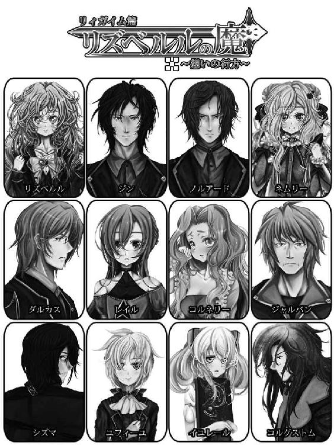
ほんとうの図書館
本を閉じる音が広い館内にやけに大きく響いた様に感じられ、イユレール姫ははっと夢から覚める時の様にびくりと体を揺らし、辺りを見渡して自分の居場所を確かめると、ほっと息を吐く。
立ち入りを禁じられた森の奥、ひっそりと佇むそこは、見えない予感に導かれた者だけが辿り着く事を許される場所。
そこは図書館。ほんとうの図書館。
此処では無い何処か、今では無いいつかの物語を遍く所蔵した秘密の書架が並ぶ、イユレールの隠れ家だ。
その日もイユレールは窮屈な日常から逃げる様にこの図書館へと足を運んで、目に付いた一冊を読み終えた所だった。
それは塩で出来た楽器を売り歩く不思議な商人の物語で、始まりの文章が重たく感じられたものだから、イユレールはよしと気合を入れて読み始めたのだけれど、これが存外に愉快な話で、すらすらと文字が頭の中に飛び込んで来るから、あっという間に読み終えてしまった。
「......ふう、面白かった。これはなかなかオススメの一冊ね」
等と満足に頷いてみるイユレールだったが、そうした所でこの図書館の客はイユレール唯一人。オススメする相手など居はしない。
そう。こんなに広く、立派な図書館なのに、イユレールはただの一度もこの図書館で職員以外の誰かとすれ違った事が無かったのだ。
それは勿論、此処が普通とは違うほんとうの図書館である以上、当然の事の様な気もしたし、やっぱり不可解な気も同じくらいする。
しかし、少なくともイユレールはその事で悩んだりはしなかった。むしろ、貸切のこの空間を好ましく思う程である。
物語の余韻を楽しむならば、喧しい喧騒は邪魔になる。イユレールはその甘い心地良さの前に、奇妙な状況には目を瞑る事にしていたのだ。
......と、そんな事を思い、物語の商人が出くわした愉快な客達の事を唇を緩めながら思い返していると、本棚の向こうから聞こえてくる危なっかしい機械音。
何事かしら、とイユレールがその向こうを覗けば、ふらふらと飛んで行く小さな影が見えるではないか。
あまり無茶をすると壊れてしまうんじゃないかと心配になるくらい懸命に翅を動かして、大きな本を持ち上げてよろよろと飛ぶのは、イユレールの小さな友人。
妖精人形のミューメルである。
「貴女、司書さんが留守だからってまたなのね！」
「わわわ、お姫様～っ!?」
イユレールが飛び出すと、ミューメルは全身で驚いてふわりと浮きあがり、その拍子に手を滑らせて本を取り落としそうになる寸前、イユレールが伸ばした手がその赤い本を受け止めて事なきを得る。
小さな体から生えている機械仕掛けの翅から、きらきらと光が零れた。
「見たわよ～っ、ミューメル！ これを一体何処に持っていくつもりだったのかしらねぇ」
「べ、べつにどこでもないってば！ ランバートに頼まれてなんか、全然ない！」
「はは～ん、ランバート」
「うわわ、もごもご」
慌てて口を押さえるミューメルだったが、聞いたわよ！ と意地悪な笑みを浮かべるイユレールである。
イユレールお付きの騎士であるランバートは、ほんとうの図書館に足を踏み入れる資格無しのへっぽこ騎士であったが、城から抜け出したイユレールを追って森を探し回るうち、何時の間にやらミューメルと仲良くなったらしい。
ミューメルは時折ランバートに頼まれて、この図書館の本を、司書......の様なもの......コルグストムの目を盗んでは持ち出しているのだ。
ほんとうの物語を暇つぶしに使うだなんて、ランバート。へっぽこ騎士にして贅沢な奴である、とイユレール姫は呆れてしまう。
「ミューメル、貴女、司書さんに見つかったらまた怒られちゃうわよ」
「ううう、私、ランバートにキョウハクされてるのでした。それで、しかたなく......」
「まあ、そうなの？」
「うん、ドーナツを人質にとられてしまいました」
「......それは買収でしょうが......」
全く、可愛いんだからと苦笑して、イユレールはやれやれと首を振り、ふとミューメルから取り上げた本に目を落とす。
それは赤い装丁に金の金具が打ちつけられ、竜の紋章で飾られた、馴染み深い一冊である。
遠く遥かな理想郷、エンダージェン国の物語が記された、イユレール初めての一冊だ。
「まあ、ランバートってば贅沢にこの本をご所望な訳？」
「お姫様～、私ランバートにその本を届けてあげなくちゃ。そうして、ドーナツを救い出さなくちゃ！」
「うーん、そうねえ......」
とイユレールが考えるそぶりをしたのは、ほんの一瞬。
次には満面の笑みを浮かべて、逃がすまいとその本を抱きしめる。
「ダメ～、よ！ この本、今日は私が読む事にする」
「え～っ!?」
「だってこうして出会ってしまったんだもの。この本はきっと、私に続きを読んで欲しいんだわ」
「はうはう」
目に見えてしゅんとするミューメルの小さな手を取って、イユレールは近くの椅子に腰かける。
ミューメルを膝に乗せ、その機械仕掛けの可愛らしい友達を慰める様に頭を撫でながら、赤い本をテーブルに立てた。
「今度来る時に、うんと沢山ドーナツを持ってきてあげるわ。ランバートよりも沢山よ。だからこの本を一緒に読みましょうよ」
「ほんと？」
「ほんとにほんと！」
イユレールが念を押せば、ミューメルは満足気に頷きこてんと頭を預けてくる。
単純な子ねぇ、と可笑しくなりながら、一つ思い出し、イユレールは同じテーブルの上に置かれていた貸出ノートにサインを入れる。
イユレールが本を読んでいる時に後ろから顔を覗かせ、物語を盗み見する事も多いミューメルだったが、こうして二人腰を落ち着けてじっくりと同じ物語に入り込むのは、出会った時......そう、あの時読んだのもこの赤い本だった......あれ以来かもしれない。
物語は孤独に楽しむ主義なイユレールだったが、たまにはこんな風に読むのも面白い。
密かにわくわくしながら、イユレールはエンダージェン国への扉を、静かに捲る。
１．閉ざされる想い
空は青々と晴れ渡り、普段ならば活気ある人々が行きかうその広い通りが、今はしんと静まり返っている。
ふと影が落ち、建物を撫でたかと思うと、見上げた空を滑る様に浮かぶのは、このシェラダンの街の守りの象徴でもある飛行船。
その船は空と馴染む様な紺碧をして、金の装飾に光を受けて輝いていた。
重々しい金属音と共に、ゆっくりと開かれたハッチから降下する６つの影。
それはまるで巨人の体躯に合わせたかのような鎧......６騎のトルフ級弦奏鎧は街を浸す黒水を踏みしめ、飛沫を上げ、立ち上がる。
見据えるは、黒海。
このエンダージェンを浸食せんとする災厄。中空に走る禍々しき亀裂に向けて、トルフ達が踊るように切り込むや、ニトクリス玄鏡石の刃が唸る。
その剣捌きはさながら円舞のごとし。見る見るうちに空間を砕いて亀裂を断ち、遂にはその痕跡すら滅すれば、小気味の良い音を鳴らして剣を休める。
わっと、街が湧いた。
窓から、扉から、ベランダから、果ては建物の屋上から。それまで息を潜めて動向を見守っていた住人達が次々と顔を出し、声援と共にシェラダンの騎士達へ向けて感謝を贈る。
水門の儀を終え、強固な結界を取り戻したシェラダンの街にとって、それは日常に溶け込んだ、ちょっとした刺激的一幕であった。
「......と言う訳で、今回はリズベルルにトルフ級１騎を任せ、黒海の対処に加わって貰った訳だが......」
腕を組み、うーむと真剣な表情で唸るはノルアード。
その隣にはこちらも何時もの事ながら厳しい顔で目を閉じているアルベルがいて、向かう席には緊張気味のリズベルルと、おまけの様に、ジン。
焦らしに焦らしたノルアードが、ふっと表情を崩して口を開く頃には、リズベルルは欠伸を噛み殺して涙目になっていた。
「......６０点くらいだな」
「ろ、ろくじゅってん......落第ですね......」
リズベルルは欠伸交じりの溜息を一つ、こてっと首を折り、残念そうに呟いた。
まぁまぁ、そう気を落とす事は無い、とノルアードは笑って。
「今日の事だけ言えば、むしろ良くやったと言うべきだろう。皆の動きを乱す事無くしっかりついてきていたし、稽古を付けている訳でも無いのに剣捌きも見事なものだ。要は体力。問題はそのくらいだな」
とノルアードが言う傍からリズベルルは眠たげに眼を擦り、欠伸をする寸前慌てて両手で押え込んでいる。
恥ずかしそうに唸りつつ、こくこくと頷いて。
「弦奏鎧を動かすのって、やっぱり体力勝負だね。ほんと言うと、もう少し自信あったんだけど、皆との連携を意識するとどんどん難しくなって、疲れちゃった」
「トルフ隊が精鋭と言うのも良く理解できたのでは無いかな」
「うん！」
「......なので、リズ。こっちの成績は......その精鋭部隊には、内緒にしておいてくれ」
そうして苦笑しつつもノルアードが取り出したのは、トルフ隊選抜試験の答案用紙だ。
１００点、１００点、１００点......この学科も、この分野も、どれも満点。
リズベルルは擽ったそうに笑んで、首を伸ばして覗き込んだジンはほお、と感心の声を上げ、向かいで黙って話を聞いていたアルベルも口元には笑みを浮かべている。
「初めての試験でこの成績を軽々取られたんじゃ、さしもの精鋭部隊も落ち込む......か？」
「うむ......それも、最年少記録だろうなぁ」
「わわ、照れるな～」
へへへ、と頭をかくリズベルルは、ちろっと舌を出し、悪戯っぽくノルアードを見上げて笑う。
「だって、ノルアード試験の前半、問題集からそのまま出したでしょ？ 私、それ勉強に使ったもん」
「と言ったって、過去５年分の物を引用したんだぞ。後半はそれだけじゃ無いし......」
「だから、私それ全部読んだもん！ 普通、一回やった問題って忘れないでしょ？」
「いや」
「忘れると思うよ」
ジンとノルアードは顔を見合わせ、これはいよいよ他の者には聞かせられない発言だなと肩を竦める。
そういうもの？ と首を傾げるリズベルルは、またまた欠伸を飲みこんで、この一見無邪気な少女が街の守りの要、弦奏鎧ヴィルフォーナの封印を担い、自らも熟練した騎士に引けを取らぬ魔の才を秘め、そして今度は難関試験を軽々と突破して見せたと言うのだからつくづく人は見た目で判断できないと言うものだ。
ジンは己が招き主に保護者気分で誇らしさを感じつつ、苦笑する。
「しかし、試験の結果を加味しても、やはり現状ではリズにトルフ級を任せる事は出来ないな」
「うう......ノルアードが厳しい......弦奏鎧、使うの、禁止、やめるって約束したのに......」
「対等に扱う、とも言っただろう。今回臨時の試験を設けたので特別扱いも終わりだ」
重ねた試験の答案でテーブルをカツカツと叩き、ノルアードはふっと悪戯っぽい笑みを浮かべ、拗ねているリズベルルをちらりと見て。
「次の試験に向けて励む事だ。リズが頑張れば、トルフ隊の２２席に加わる事も夢では無いぞ」
「......！ うん、がんばるっ!!」
ぱっと花が咲く様な笑みを浮かべ、大きく頷くリズベルルに、その場の誰もが微笑まし気な目を向ける。
「ま、私としてはリズにはシェラダンの秘密兵器で居て欲しいのだがなぁ」
「ひみつへーき？」
「如何に精鋭のトルフ隊と言えど、いつ何時病に倒れるとも判らないし、そういう時......ほら、いつかみたいに、リズがその穴を埋めてくれると助かる訳だ。無論、トルフ隊で無くとも弦奏鎧の扱いに通じた騎士は居るし、補欠には事欠かないが......その上での緊急事態においては、と言う意味だが」
と言うのは、トルフ隊の何人かが酒で潰れた挙句、リズベルルが制止を振り切って３騎ものトルフを操って見せたあの時の事だろう。
すっかり忘れかけていた出来事を持ちだされ、ちょっぴり恥ずかしそうに身を縮ませるリズベルルである。
「う～、それはそれで、格好良いかもだけど......」
「それだけじゃ無いぞ、例えば他の街から応援を頼まれたら、リズベルルとジンなら早急に駆け付け迅速に事態を収拾する事が出来るだろう」
「成程、秘密兵器ね」
「とは言え、ヴィルフォーナの封印を担う以上、あまり張り切って倒れる様な事があってはいけない。そう言う意味もあって、まぁリズには当面通りの活動をよろしく頼むよ」
「う、うん。ノルアード、付き合ってくれてありがとう」
行儀良くぺこりとお辞儀するリズベルルに、ノルアードは心底嬉しそうにうむうむと頷いて、それから何やら立ち上がり、両手で紙袋を抱えて戻って来るや、含みのある笑みを浮かべる。
「よし、次はこっちに付き合ってもらうぞ、リズ、ジン！」
嬉々としてノルアードが言えば、その隣でかっと目を開いたアルベル老が重々しく頷く。
何だ何だと顔を見合わせるリズベルルとジンに、ノルアードはぐっと握った拳を戦慄かせ、言うのだった。
「ふふふ......二人とも驚くなよ!?」
「な、なにが......？」
「秘密裏に開発していたものが遂に完成したのだ！」
「だから何が......？」
「それと言うのはな......これだぁっ！」
そうして勿体つけた挙句、ノルアードが紙袋から取り出したるは、一匹のぬいぐるみ。
眉を寄せるジンの隣で、はぁっと声にならない歓声を上げるリズベルルである。
「この子は......なにーっ!?」
「良くぞ聞いてくれた！ これは我がシェラダンの街の新名物、完全変形ヴィルフォーナくんぬいぐるみだっ!!」
「完全変形」
「ヴィルフォーナくんぬいぐるみ!?」
平坦な声で返すジンとは対照的に、なんとも興味津々な声で返すリズベルル。
うむうむ、と頷くノルアードからぬいぐるみを受け取って、しげしげと眺める。
「はぁ～、遂にヴィルフォーナがぬいぐるみになっちゃった！」
感動のリズベルルの手によってもふもふされているそのぬいぐるみは、成程良く良く確かめればヴィルフォーナ......風。
大きめの頭に、丸い胴、こちらも丸みを帯びた手足にはぎっちりと綿が詰まって柔らかい。決して忠実では無いものの、言われてみると良く目に馴染んだ姿形に見えなくも無い。
しきりに感心しているリズベルルを横目に、これは？ と首を傾げるのはジンである。
「だから、この街の新名物だと言っているでは無いか！ 今年のトゥールウ祭で売り出す予定で、既に量産を開始している！ これまで観光客向けにあったトゥールウのぬいぐるみ等に続いて、こちらは街を上げて売り出そうと言う訳だ。生産の都合上、トゥールウくんは土産物屋での販売が中心だったが、こちらは行く行くは街の何処でも見かけちゃう様な......言わばシェラダンの新マスコット的な存在にしたいと思っている!!」
「ちなみに、人が入って動かす着ぐるみも制作中だ。広場などでの活躍を想定している」
「お～っ！」
アルベルの言葉に声を上げるリズベルル。そう言えば師匠は祭りの実行委員でもあったか、と思い出すのはジンである。
「完全変形って言うのは？」
「良くぞ聞いてくれた、リズ！ このぬいぐるみに秘められた真の秘密を今ご覧に入れよう......！」
「わくわく」
何だか大層な前口上と共にリズベルルからぬいぐるみを受け取って、ノルアードはまずその背から磁石でくっついていたらしい帽子状のパーツを取り外し、頭に被せる。
成程、帽子はまぁるくアレンジされた竜の顔。ふふふ、と笑みを浮かべながら次にノルアードはヴィルフォーナくんの足を折りたたみ、またまた内蔵磁石で背中にぺったん。
広げれば、見事に翼......に見えなくもない。最後には手に持っていた剣をお尻にくっつけ、ヴィルフォーナくんは鎧の姿から竜の姿へと変形を果たす。
「女性受けする可愛らしいデザイン！ そして男心を擽るこのギミック！ これは大人気間違い無し！」
「す、すごいーっ!!」
ヴィルフォーナくんを天へと掲げるノルアードは、早くも完売の文字を目に浮かべ、リズベルルはと言えばそのぬいぐるみの可愛らしさと熱いギミックにめろめろな様子でぱちぱち拍手。
「でも〝完全変形ヴィルフォーナくんぬいぐるみ〟って言うのはいただけないな～」
「むむっ!? すると......？」
「商品名は〝かぶってヘンシン!? ヴィルフォーナくんぬいぐるみ！〟にしよう！」
「おぉぉっ、リズ！ その案は頂きだぞ!!」
等と盛り上がる二人を尻目に、ジンはこちらをじっと見つめて来るアルベルに顔を向け、肩を竦めて見せれば師は何やら真剣な面持ちで。
「ジンよ、今年のトゥールウ祭は、例年よりも客足が多い事が予想される」
「はぁ、儀式も終わって平和ですからね」
「それもある......が、何よりも重要なのはジン、お前だ！」
「お、俺？」
「そう！ 観光客は何を期待してこの街に訪れるのか。今一番注目を浴びているものは何なのか。言うまでも無く伝説の守護鎧ヴィルフォーナ、そしてそれを操る黒き魔人！ ......と言う事でジン、今年の祭りではお前も働いてもらうぞ」
「ははは......と、言うと......」
寡黙かつ厳格との言葉がお似合いの普段の姿からは想像もつかぬアルベルの熱量に圧倒されながらも、ジンは何をやらされるのかと戦々恐々聞き返す。
師の重々しい頷きが、何時にも増して恐ろしい。
「祭りの最終日に飛ばす竜だが、今年はそこにヴィルフォーナも合わせて飛んで欲しい。つまりは、２匹の竜が舞った前回の祭り、その伝説の場面を再現をして欲しいのだ。より、劇的に」
「で、伝説を、げ、劇的に......」
はぁ、はぁ、と頷くジンに、花火がどうだとか段取りはこうだとか言うアルベルの説明は次第に複雑さを増して行き、遂には笑顔を凍らせて、聞きに徹するジンである。
これは何だか大変な事になってしまったぞ、と思いながらも、ふとジンは思うのだった。
そうか、今年もトゥールウ祭の季節か、と。
三角錐状の国土を誇るこのエンダージェンは、中心に王城を据え、禁忌の森を挟んだ周囲をぐるりとそれぞれの街が取り囲む形を取っている。
そのうちの一つ、シェラダンはトゥールウなる竜の神の伝承が残る街であり、トゥールウ祭はその竜を祀るお祭りだ。
街の守護を担う弦奏鎧ヴィルフォーナの魔としてジンがこの街に招かれてから、季節も一巡りし、二度目の祭りの季節がやって来ようとしていた。
思えばこの街に来てから色々な事があった。ふとした拍子に、今でもジンはこれが夢なのでは無いかと思う事がある。
異邦人たる自分を当たり前の様に受け入れてくれたシェラダンの人々。分け隔てなく接してくれる彼らに感謝しつつも、時折思うのだ。
いつかこの愛おしい日々が、泡が弾ける様に消えてしまうのでは無いか。
無論本気でそんな事を考え、怯えている訳では無い。ただ、本当にふと浮かぶ、それは今となってはそれこそ現実味の無い、心のしこりの様なものだけれど。
「おい、ジン。真面目に聞いているのか？」
「え、ああ......」
ノルアードに怪訝な顔をされ、ジンは悪い悪いと微笑んで誤魔化す。
しっかりしてくれよ、とこちらも笑みを浮かべ、ノルアードは頷いて。
「最近活躍の機会が無いから、少し鈍っているのでは無いか？」
「それはあるかもな。まぁ暇に越した事は無いよ」
「ヴィルフォーナ共々、祭りでは存分に働いてもらうから覚悟しろ。と言う訳でジン、写真撮影の件だが......」
「ん、何だって？」
「だから、このぬいぐるみのおまけとして、ジンのブロマイドを、」
「いやいやいや」
アイドルじゃ無いんだから。
そんなものをおまけに付けられた日には街を歩けなくなってしまう。
ノルアードの素敵な提案に、ぶるぶると首を振るジンである。
「冗談はよせ、俺は絶対に嫌だからな」
「何を言うジン！ ヴィルフォーナと黒き魔人のツーショット、皆欲しいに決まっている！」
なぁ、とノルアードに同意を求められ、リズベルルは困り顔でジンをちらりと見ながら、あははーと渇いた笑みを漏らし。
アルベルの無言の威圧が迫る中、けれどもジンはここだけは譲れぬとの思いで念を押した。
絶対、やだ。
「おまけはヴィルフォーナの写真にしといたら。私は～......ジンの写真を付けるってアイディア、悪くないと思うけど」
「本人は嫌なの！」
「こう言ってるし」
ね？ と小首を傾げてリズベルルにお願いされたらば、ノルアードもアルベルも無理にとは言えまい。
ジンはふう、と溜息を吐いて。それにしても二人の祭りにかける並々ならぬ情熱には驚かされる。
それも街に二体の守護鎧が揃い立ち、儀式を終えてから初めてのトゥールウ祭となれば納得もでき、此処で水を差すのも感じが悪いかと、ジンはやれやれと首を振りながら笑みを浮かべる。
「写真は無理だが、まぁ出来る事は協力させてもらう。俺もこの街の一員なんだから、祭りを盛り上げたいと言う気持ちはあるんだ」
「おお、ジン！ やる気が出て来たか！ まだまだお土産や催しの案は沢山あるんだ。無論既に着手しているものも含めて、早め早めに動きたいものだからな。とにかく前回は黒海や諸々に手一杯で余裕が無かった。今年はその分も含めて全力で挑みたいものだ。リズにも勿論手伝ってもらうぞ！」
「うん！ 私、運営側なんて初めてだから、楽しみっ！」
「よーし、では早速......」
と、ノルアードが口を開きかけた時だった。
こんこんと扉がノックされたかと思えば、返事をする間もなく顔を出すマール。
何やら怪訝な表情で、物々しげな書簡をノルアードに手渡すでは無いか。
はて、とそれを受け取って、そこに一つの紋章を確かめるや、げっと嫌そうな声を上げ、ノルアードは恐る恐る呟いた。
「......リィガイムの紋章では無いか」
「なんか急用っぽいですよ」
急用？ と首を傾げてノルアードがその中身を確かめる間、ジンはリズベルルの肩をちょいちょいと叩き。
「リィガイムって、隣街？」
「うん、お隣さん」
へーとジンが頷いていると、ノルアードの表情は次第に曇り、むぅ、と一つ唸ったかと思えば、ジンとリズベルルを見て言うのだった。
「喜べジン、どうやら出番が無くて暇なのも今日で終わりの様だ」
「と言うと？」
「秘密兵器の出動要請だ」
憂鬱な顔で書簡を振るノルアードに、顔を見合わせるジンとリズベルルであった。
「と言う訳で、また少し留守にする事になった」
「ふーん、それでこれって訳ね」
尻尾をくねらせて言うアオゾラに、ジンは頷き、一人と一匹天井を見上げれば、一体何をそんなに暴れているのか、二階からはどったんばったん響く物音。
そうこうするうちにリズベルルは今にも弾けそうに詰まったトランクケースをよいしょよいしょと引っ張って来るので、ジンとアオゾラは思わず声をかける。
「リズベルル......行くのは隣の街だぞ」
「フェアルージュの時より大事になってるじゃん。リズ、張り切り過ぎっ！」
「......やっぱり？」
誤魔化しの笑みを浮かべつつ、リズベルルはでもでもと体を揺らす。とは言え度を超えた荷物の量には本人も流石にこれはと思うものがあるらしく、一頻り躊躇った後、はぁ、と溜息一つ。
もしかしたらOKが出るかも、との一縷の望みをかけて、とりあえずごねてみたらしかった。
「わかってますわかってます。鞄に詰めるのは必要なものだけ......ところがわかっててもなかなか減らせないのでした。ふしぎふしぎ～っ」
「リズって、意外とこう言う所は抜けてるよな～」
「女の子にはいろいろあるのっ！ そうだ、今回こそはアオゾラ、一緒にくる？」
「えー、別に観光に行くんじゃ無いんでしょ？ だったらいかにゃいっ！」
「うー、ざんねん～。じゃあアオゾラはお留守番ね。あ、そう言えばジン、これもう見た？」
頬を膨らませたり一転笑顔になったりリズベルルはころころと忙しく、転がる様にしてラックの傍まで行くと、一冊の雑誌を抜き取って嬉しそうに胸に抱える。
いや、まだ見てない、とジンは首を振り、リズベルルから受け取ったのは女性向けのファッション誌。
何でまたこんなものを寄こすのだ、と首を捻りながら目を落とせば、表紙の女の子に何だか見覚えがある......と思えば、それもそのはず、カメラに向けてとろける様な笑みを浮かべているのは紛れも無くおめかしネムリーその人なのでびっくり仰天。
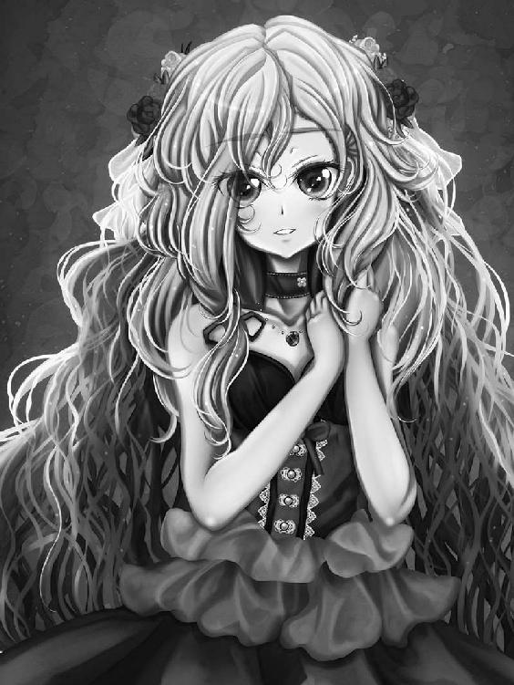
「深紅の妖精姫......ネムリー・マーネル大特集......」
「お、決まってるねー」
表紙の煽りを読み上げ目をぱちくりさせるジンと、覗き込んで愉快気にヒゲを揺らすアオゾラであった。
そんな一人と一匹に向かって胸を張り、リズベルルは我が事の様に誇らし気である。
「びっくりさせようと思って、ジンには黙ってたんだ～。びっくり！ した？」
「した。吃驚した。一体全体いつの間に......？」
兄ボルダナに続いて妹まで......何でまた芸能デビューを果たすに至ったのか、しきりに首を傾げるジンに、リズベルルは朗々と語る。
「最初は剣主様としてのネムリーへのインタビュー依頼だったんだって。頑張る女の子特集？ みたいな？ でも、その出版社の......偉い人？ が、いざ会って見たらネムリーのあまりの可愛さに一目で心を奪われて、あれよあれよと言う間にインタビューがモデルデビューの誘いに大変身。何度も何度も断って、それでも熱心に誘ってくるから、遂にはネムリーも降参しちゃったのでした」
「と言う割には......」
「ノリノリなんですけどー」
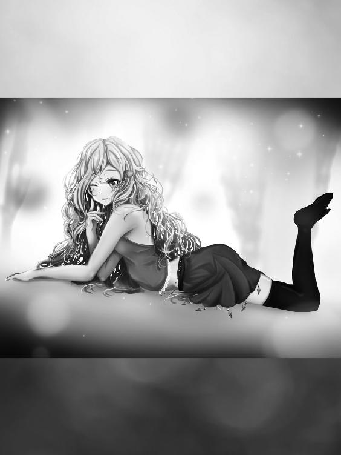
表紙から始まり、ぺらぺらとページを捲ってみればあっちにもネムリーこっちにもネムリー。
最新ファッションを着こなして、表情は勿論、可愛いポーズもばっちり決まり実に様になっている。
これにはジンも思わず唸り、ネムリーが載っているページを隈なく確かめ、精査する様に読み終えた後、ふむ、と一つ頷き呟いた。
「......かわいい」
「でしょ～」
親友の大活躍が余程嬉しいのか、リズベルルはぴょんぴょんと跳び上がって喜んだ。
ジンはもう一度表紙を眺めた後、インタビュー記事をじっくりと読み直す。
中身は結構真面目な作りで、ネムリーの街に対する真摯な想いが対話形式でまとめられていた。
添えられた写真のネムリーは、初めて会った頃からは想像もつかぬ自信に満ち溢れた表情が窺え、ジンは思わず口元を緩めた。
「成程、剣主たるものこう言う活動で支持率を上げるのも大事な訳ね」
「そうそう！ これでフェアルージュの人気も急上昇！ 観光客もどんどん来ちゃう！」
「......そう言う事か......」
ふかーく頷いた後、ジンはじとっとリズベルルを見て、ぽつりと呟く。
「......ノルアードの差し金だな」
「わ、ばれた」
ばつが悪そうに舌を出し、頭をかくリズベルル。
大方、ブロマイド用の写真を撮る為にジンを説得せよ、とのノルアードからのお達しがあったのだろう。
ネムリーのモデルデビューは大いにめでたい！ けれどそれはそれ、これはこれ。
俺は絶対に絶対に絶対に、こう言う活動は嫌だからな、と念を押すジンである。
「で、でも、こうして頑張ってるネムリーを見ると、ジンだってちょっとは興味が出ちゃうんじゃない？」
「出ない。そんなに言うなら、リズベルルがブロマイドになったらどうだ。ヴィルフォーナに寄り添う可憐な美少女、大人気間違い無しだ」
「わ、私はそう言うの、むりムリ。絶対無理っ！」
それに、びしょうじょって......ともごもごするリズベルルに笑みを向け、ほらな、と肩を竦めるジンである。
ま、リズベルルのブロマイドだったら、多分この街では飛ぶ様に売れるのは間違いないだろう。
俺も買う。
今度ノルアードに提案してみようかな？ と冗談交じりに思うジンだった。
「いや、撮影した所で、あいつが一人占めするのがオチか......」
「何の話？」
「なんでも、それにしてもネムリーは可愛いなぁ。本業のモデルさんよりもずっと可愛いんじゃ無いか？」
「それは身内贔屓では？」
「ううん！ ネムリーが一番かわいい！」
二人して雑誌を覗き込みつつ、かわいい、かわいい、猫ちゃんには判らんのだ、と盛り上がるジンとリズベルル。
あまりに人間どもばかり盛り上がるものだから、どうせ俺は猫ですよとばかりにつーんとそっぽを向いて、ちょっぴりいじけるアオゾラであった。
一方その頃、エンダージェン中の人々に夢を運ぶため、今日もトレーラーで巡業中のボルダナ一座は、旅の途中に立ち寄った街の宿で一休み中。
その座長、我らがボルダナは、一人神妙な顔で正座して、目を落とした雑誌をまるで神聖な書物であるかのように恭しく捲り、全てを読み終えた後、目を潤ませて感嘆の声を上げる。
「......ネムリー......立派になって......っ」
深紅の妖精姫 ネムリー・マーネル大特集号のインタビューに感動のボルダナであった。
そんな座長の背から手元を覗き込み、急かす様に肩を揺らすのはマストロ・パストロの二人。
「アニキ～、そろそろその雑誌、こっちにも回して下さいよ」
「ネムリー様の記事、読みたいんですからー」
「判った、ちょっと！ ちょっと待て......あと一回読んだら貸す」
「そう言って何回読んでるんだあんたは」
「人に雑誌買いに行かせといて自分ばっかり......」
「判った、判ったって......ほら、じっくり読めよ。あとページを折ったりだとかな、乱暴に扱うんじゃないぞ。いや待て、保存用にもう一冊買っておくか......」
一冊と言わずに十冊、いや......百？
ぶつぶつと呟くボルダナに、マストロパストロは内心の呆れを隠そうともせず、駄目だこりゃと肩を竦める。
流石にばつが悪かったのか、渋々ながら双子に雑誌を手渡す......直前、ボルダナは急に顔色を変えてひょいっと雑誌を頭上に上げて。
「お、お前ら......言っておくが、あんまりネムリーが可愛いからと言って、写真を、へ、変な事に使ったり、するんじゃないぞ......!?」
「うわぁ」「下品......」
「......ぐっ」
「軽蔑しちゃうなぁ......」
どん引きの双子に、ボルダナは怒るどころかむしろ辛そうに顔を顰め、雑誌を床に置き、空いた拳をぎゅっと握って正座した膝を叩く。
絞り出す様な声で。
「だってよぉ......兄としては、心配になるじゃねえか。お前らには判んねえかもしれないが、俺はなぁっ！」
「あーはいはい」「わかったわかった」
ボルダナの吐露する言葉をあっさり掃いて捨て、双子はさっと雑誌を拾い上げ、ふむふむと読み始める。
そこまで出かかった言葉のあれこれを仕方なく飲み込んで、ボルダナは監視とばかりに双子達に目を光らせる。
「へー、こりゃあまた綺麗に映っていますねぇ！」
「だろう!? 俺のオススメはだな......」
「や、アニキの感想はどうでも良いですから。ああそうだ、丁度良いからネムリー様に手紙を出したらどうです？」
「おお、それは良い考えだぜ。今回は書く事が沢山あるから、筆も進むぞ！」
そうしてボルダナが取り出したるは全く似合わない可愛らしいレターセットと万年筆、嬉々として手紙に取り掛かるボルダナに、ようやく静かになったよと溜息のマストロ・パストロ兄弟である。
さてさて、それじゃあ一番の目玉であるインタビュー記事を読むとしますか......と目を落とす、が。
「えー......最愛の妹・ネムリーへ......雑誌読みました。頑張っている様だね。こうして旅をしていると、時折不安で押し潰されそうになる事もあるけれど、君が立派に故郷で街を守っていると思えば、兄さんも勇気づけられます......」
「おい、ちょっと」「その声に出して書くのやめてもらえます？」
「......なんだよ、今良い所だったのに」
「大体兄さんって何だ兄さんって」「不安で押し潰されそうになる程繊細じゃないでしょうが」
「演出だよ演出......ったく、好きに書かせろよなぁ......」
乙女心の判んねえ双子どもだぜ。ネムリーはこう言う方が喜ぶんだよ。等とぶつくさ言いながら手紙を書き綴るボルダナに、マストロ・パストロは大きく溜息。
このままこの人について行って本当に大丈夫なんだろうか、とこっちが不安で押し潰されそうになる双子であった。
そうして一夜明け、数日分の荷物にしては随分と大きくなってしまったトランクケースをごろごろと転がしながら、ジンとリズベルルは砦へと赴く。
こうして荷物片手に歩いていると、何だかフェアルージュやメルディーノに行った時の事が思い出され、気分は小旅行と行った感じであるが、それもその筈。
未だリィガイムに呼ばれた理由をジンもリズベルルも聞いておらず、ノルアードですら詳しい話は向こうについてから、と言うのだから無理も無い。
面倒事で無ければ良いがと思う反面、ジンとリズベルルが共に呼ばれたと言う事からも大体の用件は察する事ができ、それも緊急だと言うのだから本来ならば気を引き締めなければならない所だが。
「おー。リズ、ジン。来たかー」
剣主ですらこの様子なので、緊張しろと言う方が難しい。
広場に突っ立っていたノルアードは憂鬱気な顔で、ちゅんちゅんと寄って来る鳥にパン屑を投げていた。
ぱっと笑顔になって、リズベルルが抜き足差し足近づいてそれに混じる。
ノルアードから分けてもらったパンをちびちび千切りながら投げれば、忙しなくそれを突く鳥達。長閑であった。
「それにしても、ノルアードは何だか浮かない顔だな」
「......判るか、ジン」
「そんなにリィガイムは今、危険なのか」
「そんな筈は無いと思うがなぁ......まぁ大凡想像がつくとは言え、実際の所は聞いてみなければ判らんが......それはそれとして」
「それとして？」
すっかりパンを撒き終えて、ぱんぱんと手を叩きながらリズベルルが首を傾げれば、ノルアードは深く深く溜息を吐いて、実に嫌そうな顔で呟くのだった。
「あの書簡の送り主......つまりはリィガイムの剣主に会うのが憂鬱なのだ。気が進まない」
「リィガイムの剣主？ そんなに嫌な奴なのか」
ジンが怪訝そうに尋ねれば、ノルアードはぶんぶんと首を振るので、いよいよ謎である。
はて、とますます首を傾げるリズベルルに、ノルアードは誤解の無い様に言っておけば、と前置きし。
「嫌な奴どころか、良い人だ」
「そうなんだ？」
「すっごく良い人なのだ」
「だったら何でそんなに嫌そうなんだ」
「これはもう、相性が悪いとしか言い様が無いのだが......こう、話しが合わないと言うか、何というか......話にならないと言うか」
「えーっと、良い人だけど、ノルアードの苦手な感じなんだ？」
「そう。父上とは馬が合ったようだが、俺はどうにもな」
言葉少なに頷いて、ノルアードはまたまた深く深く溜息を吐く。
もう餌が貰えない事に気付いたのか、地面に落ちていたパン屑を粗方拾い終えた鳥達が、一匹また一匹と空へ飛び立っていく。
またねー、とリズベルルがそれに手を振って、一台の車が敷地に入って来たのはその時だった。
「リィガイムからの迎えが来た様だ」
何だかどんよりした顔のノルアードがいかにもめんどくさそうに自分の荷物を持ち上げる。車の扉が音を立てて開き、そこから降りて来たのはすらりとした長身の女性。
彼女はノルアードを見るとその整った顔に満面の笑みを浮かべ、こちらに駆け寄って来たかと思えば、飛びつく様にノルアードの首に手を回し、ぎゅっと抱き締める。
「会いたかったわ、ノルアード！」
何だ、知り合いか、と思うジンの隣で、リズベルルがぽかーんとした表情で硬直している事に、その場の誰も気付かなかった。
「君は......」
「あら、私の事忘れちゃった？ 私は何時だって貴方を忘れた事なんて無かったのに」
「......もしかして、レイル......か？」
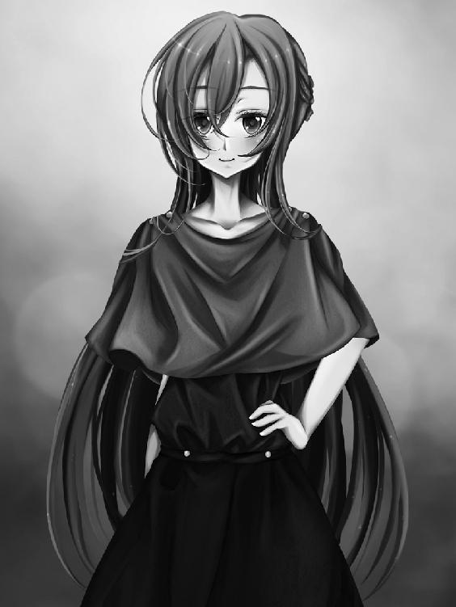
突然の事に目を瞬かせていたノルアードの表情が見る見る笑みに染まる。相手が頷くのを見て、ノルアードは嬉しそうに声を上げながら、その細い体を抱き返した。
「レイル！ 久しぶりじゃないか、全然判らなかったっ！」
「あら、貴方は変わらないわね。昔のまま、素敵よ」
「よせよせ、何だか口が上手くなったんじゃないか？ それにしても君が来るだなんて思わなかった。いつからリィガイムに？」
「ちょっと前からね。ま、積もる話はあるけれどその辺は追々話すわ。ところで......」
と女性、レイルは固まっているリズベルルに目を移す。その腕はノルアードの腰に回されたまま。リズベルルは目を白黒させて、その視線はレイルの腕に釘付けだ。
「あなた、もしかして......リズ？」
「......へ？ は、はい!?」
これが猫だったなら、驚きから体中の毛を逆立てている所だろう。
ぎこちなくレイルを見上げ、頭に幾つものハテナを浮かべているリズベルルの手を取り上げて、レイルは嬉しそうな声で。
「やっぱりそう！ 久しぶりね～、何年ぶりかしらっ！」
「えー？ は～？」
「リィガイムに行くのは私とジン、そしてリズベルルの三人だ。よろしく頼む」
「まぁ、そうなの？ ふふ、なら安全運転で行かなくちゃ。ね、リズ。あら、私の事忘れちゃった？」
「はっはっは、リズが物を忘れるなんてある筈無い。覚えているに決まっているさ」
「あ～、えーっと～」
壊れたレコードの様に間延びした声を上げるリズベルルの視線はあっちへ行ったりこっちへ行ったり、いくら頭の中をひっくり返しても、目の前の人物と記憶とが一致しないのか、終いにはぐるぐると目を回す。
ひょっとして本当に忘れてしまったのか、と驚きながら、見かねてノルアードが助け船を出した。
「ほら、昔ラスティノフ先生の教室に良く顔を出していたレイルだ。リズだって結構懐いていたじゃないか」
「そ、そう......でしたっけ？」
「ふふ、仕方が無いわ。うんと昔の事だもの」
「う、う～。ごめんなさい......」
顔を真っ赤にしてぺこりと頭を下げるリズベルルにくすくすと笑みを漏らし、レイルはその頭をそっと撫でる。
ゼンマイ人形みたいな動きで顔を上げ、レイルが怒っていない事を恐る恐ると確かめると、リズベルルはちょっぴりぎこちなく頬を緩めた。
「謝る事なんて無いわ。また会えて嬉しいもの、前みたいに仲良くしましょう」
「は、はい......」
「レイルは昔と随分変わったからなぁ。こんなに美人になっていたんじゃ、リズが驚くのも無理は無い」
「あら、ノルアードったら......ごめんなさい、すっかりこっちばかり盛り上がっちゃって。貴方とは初めまして、ですね」
「ジンです。よろしくレイルさん」
「レイルで良いわ」
頷いてレイルと握手を交わし、ジンは笑って見せる。
迎えが来るだなんて言うからどんな仰々しいものかと思えば、ノルアードの知り合いだと言う事で気が紛れた。
「シェラダンの黒き魔人、ヴィルフォーナの騎士様に会えて光栄だわ。さ、それじゃあ出発しましょうか。荷物積んじゃうから先に車へどうぞ」
「そんな、俺がやりますよ」
「あら、私こう見えて力持ちなのよ」
そう言ってレイルはひょいっと荷物を持ち上げて、ウィンクして見せる。
感じの良い人だな、とジンは好感を持ったが、リズベルルはその背の後ろに隠れて一人あわあわと動揺中。
リィガイムへの出発は、少なくともリズベルルにとっては波乱の幕開けであった。
「ノルアードはどう、相変わらず？」
「近頃は以前程でも無いさ、やはり水門の儀を終え安定していると言うのもあるし、肩の荷が下りたと言うのかな。お陰で余裕も出来た」
「そう。今だから言うけど、貴方、剣主になった頃は何だか危なっかしいくらいだった。ずっと心配していたわ......って、暫く連絡しなかった私が言うのも何だけど」
「何を言う、レイルには昔から助けられてばかりだ。何度も相談に乗ってもらったし、あの頃君がくれた言葉は今でも私を支えてくれている」
リィガイムへ向かう車の中で、想い出話に花が咲く。
ノルアードもレイルも久方ぶりの再開に心底嬉しそうだったし、お互いを信頼し合っている様が会話の端々から感じられる。
ジンも興味深げに二人の会話に耳を傾け、時折口を挟んでは友人の昔話を面白がった。
一人心細いのは、リズベルルだ。
声をかけられれば答えるし、時折小さく笑みを漏らすものの、その目は何だか憂鬱気で、それこそ出発前のノルアードの気分が移った様だ。
何だかずんと頭に圧し掛かる睡魔に瞼が落ちるのを必死で堪えながら、リズベルルは胸中でぽつりと呟く。
なんか、嫌だな......。
そんな心中とは関係なく、ただ窓の外を流れるばかりの景色を見つめながら、リズベルルは思った。
リィガイムへ行くと言われた時、リズベルルはちょっぴり嬉しかったのだ。
勿論これが遊びじゃ無くて、騎士の使命である事は判っているし、そこに危険が伴うかもしれない事も承知している。
でも、ノルアードがリズベルルを必要としてくれた事は純粋に嬉しかったし、ヴィルフォーナの封印を扱える自分が求められている事は誇らしくもあった。
それに、思い浮かぶのはフェアルージュのネムリー、メルディーノのプランシューネ。外の街には、胸が弾む様な出会いや出来事が待ち構えているに違いない。そんな予感があったのだ。
あるいは、外からやって来る人だって同じ。アルバトリスから、剣の試練と言う神秘を追ってやって来たフィオの事を思い出し、リズベルルは溜息を吐く。
寝る前はあんなに期待していた今日と言う日。けれどそんな浮かれ気分は、リィガイムからの使者レイルによってすっかり萎んでしまっていた。
そんな事を考える自分が嫌になって、リズベルルはますます落ち込んでしまう。
昔の事は忘れちゃったけど、レイルさん、良い人そうだし、美人で素敵だし、嫌だなんて思うの......どうしてだろう。
盛り上がる三人に気付かれぬ様に、リズベルルはもう一度小さく溜息。
本当の所、理由は判っていた。
なんだかノルアードを盗られたみたいで、嫉妬してるんだ、私。
リズベルルは車の窓に額を当て、目を細める。ひんやりとした感触が、熱を持った額を冷ましていく。
街の人々が知らない、剣主としてでは無い、ノルアード。
昔の、少し意地悪だった頃のノルアード。少年みたいに拗ねたり、笑ったりするノルアード。二人きりの時に見せる、リズベルルよりもずっとずっと大人な、けれど何処か近しい人に感じる、ノルアードの表情。
リズベルルは他の人よりもノルアードのずっと近くに居て、彼の事を良く知っているつもりで居た。
なのに。
今、レイルの口から語られるノルアードの姿は、リズベルルの全然知らない......もしかしたら、飾らない、ありのままの素顔。
私がノルアードの傍に居た気でいたのは、ただの勘違い。
ノルアードには、私の知らない所に、私なんかよりずっとずっと親しい人が居たんだ。
そう思うと、胸がぎゅっと締め付けられるように切なく、フェアルージュやメルディーノで重ねて来たノルアードとの時間が、音を立てて色褪せていく様な、そんな気がした。
「......なんでこうなっちゃうのかな」
ぽつりと呟いた声は、車内に溢れる笑い声にかき消され、一人胸にもやもやを抱えながら、リズベルルは目を閉じる。
何だか頭が重たくて、舌に鉄の味を感じる。冷たかった窓はすっかり熱を持って、じんわりと汗をかきながら、リズベルルは何時しか夢の世界へと落ちて行った。
そこはリズベルルがまだずっと幼かった頃、お父さんが居た頃の、屋敷の庭。
硝子屋根から注ぐ光をいっぱいに浴びて、リズベルルは幸福だった。
時折、父が開く街の子供たちを招いての教室は、リズベルルには難しい話ばかりだったけれど、それでも世の中の不思議を知る度、好奇心は膨れ知識欲は増し、今聞いた事をずっと忘れずに、胸の宝石箱に大事に取っておこうと誓ったものだ。
楽しかったあの頃。リズベルルの瞳に光が射していた時代。ジンが来てくれるまで、その思い出をリズベルルは少しずつ少しずつ削って、糧にして、生きて来たのだ。
そして、あの頃のノルアード。リズベルルなんかよりずっと年上の、意地悪ばかりするお兄さん。
今、この時の姿を保ったまま時間を遡ったら、リズベルルは彼と対等になれるのだろうか。
レイルの代わりにノルアードの苦悩を聞いて、相談に乗って、彼を支える事が出来るのだろうか。
不意に車が大きく揺れて、リズベルルは現実に引き戻される。
はっと目を開くと、見知らぬ景色。見知らぬ街。車は停車している。
「おはよう、リズベルル」
「......私、寝てた？」
「ぐっすり」
微笑むジンに、何故かリズベルルは心底ほっとして、自然笑みを返す。
ぼんやりとした眠気と舌の痺れは残っていたけれど、すぐに目も醒めるだろうと頷いて、リズベルルは扉に手をかけた。
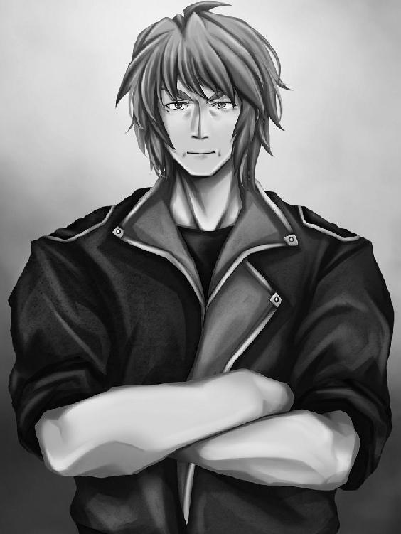
「おお、ノルアード君！ 良く来たなあ、道中何も無かったかね。やあ、レイル君もご苦労であったなあ！」
リィガイムの砦に足を運ぶや現れた大男に、ノルアードは努めて笑みを作りながら何か答えようとするが、口を開く寸前、男にぎゅっと手を握られ、握手にしては大袈裟な程ぶんぶんと振り回されたものだから、渇いた笑みを漏らす他無い。
レイルは慣れっこと言う風に微笑んで難なくそれを受け止め、ジンとリズベルルは顔を見合わせ成程と頷く。
たったこれだけのやり取りで、ジンの脳裏には豪快の文字がこれ程似合う男もいまいとの考えが浮かんでいる。
この屈強な大男こそが、リィガイムの剣主に他ならないのだ。
「ようこそヴィルフォーナの騎士殿！ 詳しい話も無くいきなりお呼び立てしてすまんなぁ。俺はリィガイムの剣主、ジャルバン・ドレッド。よろしく頼む！」
「ジンです、よろしく」
差し出された手をぎゅっと握り返すジン。
ジャルバンはうむうむと頷き、ジンの肩をばしばしと叩いて、豪快に笑った。
「ジンか、良い名だ！」
その声に若干身を竦ませながら、ジンは苦笑する。とにかく、声がでかい。隣で困り顔のノルアードに視線を向ければ、我らが剣主はほらなと言う様に首を振る。頷き返しながら、それにしても、とジンは思う。
がっはっは、と笑う人に初めて会った。
「あー、ジャルバン殿。それで緊急の用件と言うのを早速窺いた」
「おお、そうであったな！」
と、またしてもノルアードは言葉を途中で遮られ、ぐっと喉を鳴らし眉を顰める。
成程、会話のテンポが合わないとはこの事か、とジンはまたしても苦笑した。
「うーむ、立ち話も何だ。早速中で詳しい話を聞いてもらうとしよう。ではレイル君、例のものを」
等と話しながら歩き出そうとした時である、ジャルバンが不意に驚愕の表情を浮かべたかと思えば、尋常で無い呻き声を上げながらその場によろよろと膝を付く。
大男に似合わぬ突然の出来事に、一体全体どうした事だとシェラダン組が慌てると、またしても慌ただしく足音が聞こえ、現れたのはジャルバンとは対照的に線の細い可憐な娘。
「お父様！ あれ程安静にと言ったのに......っ！」
と、長いスカートを翻しながら駆けて来た娘はノルアードとジンを認めると、きゃっと小さく悲鳴を上げ俯いて、か細い声で囁いた。
「あ、シェラダンからいらした......ごめんなさい、到着していただなんて思わなかったから私。嫌だわ、はしたない所を見せて......あの、先生」
「ええ、後の事は私に任せて、コルネリーは皆さんにお茶でも淹れて差し上げて。さ、ジャルバン様、手を貸しますわ」
「おお、すまんなレイル君......あいたたた」
ジャルバンに肩を貸すレイルの傍で、コルネリーは暫くおろおろと慌てていたが、やがて顔を真っ赤にしてぺこりとお辞儀し、砦へと駆けていく。
慌ただしい出来事に半ば呆然としていた三人だったが、こっちよ、と視線を寄こすレイルにようやくはっとして、その後に続くのだった。
「ぎっくり腰!?」
告げられたジャルバンの容態に、三人は声を重ねた。
「おお、実は先日幽霊と出くわしてな。情けなくも驚いた拍子に、酷く痛めてしまったと言う訳だ。ふとした拍子にさっきの様になるのよ」
あいたたた、と呟きながら椅子に深く腰掛けて、ジャルバンはまたまた豪快に笑み、それで痛みがぶり返したのか顔を顰めた。
幽霊？ と首を傾げながらも、それはまた難儀ですね、と気の毒そうな顔をするジンとノルアードにうむと頷き、それからジャルバンは今気付いたとばかりにリズベルルに目を向ける。
「おや、こちらのお嬢さんは......」
「あの、リズベルルです。はじめまして」
肩を丸めながらぺこりとお辞儀するリズベルルは何だか小動物めいていて、微笑ましげに眺めるジャルバンに、ノルアードがヴィルフォーナの封印の秘密と、リズベルルがラスティノフ博士の娘である事を説明すれば、その顔には驚きと喜びとがいっぺんに浮かんだ。
「何と、ラスティノフ博士の娘であったか！ しかも天舞う音色ヴィルフォーナの封印を担う騎士だとは驚いた！」
これにはレイルも驚きを隠せず、二人してまじまじとリズベルルの事を眺めるものだから、当人は少し困った様な笑みを浮かべながら頭をかく。
と、その時部屋の扉が開いて、コルネリーがお茶の用意を持って現れたので、丁度良いとジャルバンはリズベルルに優しげな笑みを向ける。
「うちの娘、コルネリーだ。俺に似ず気立ての良い自慢の娘よ。どうか仲良くしてやってくれ」
「お父様ったら！」
非難めいた声を上げながらも、コルネリーはリズベルルに視線を向け柔らかに笑む。それまでジャルバンの迫力に借りて来た猫の様に小さくなっていたリズベルルは、ようやく気が合いそうな人を見つけたとばかりにほっと表情を緩めた。
二人の様子に場がほんわりと和むが、ふとコルネリーは視線に気づいて顔を上げ、ジンとノルアードの方を見て体を強張らせ、見る見る顔を赤くさせたかと思えば、ごにょごにょと何事か呟いて駆けていく。
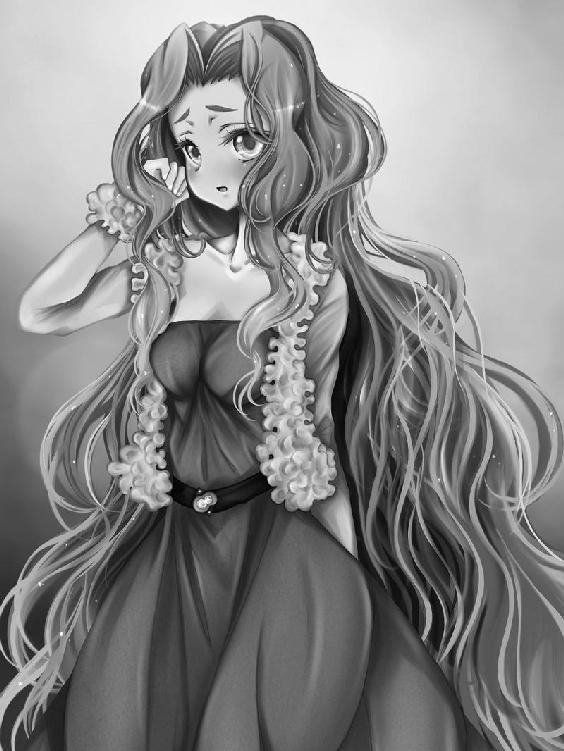
あっという間に部屋を出て行くコルネリーにやれやれと溜息を吐くジャルバンはしかし、娘が可愛くて仕方が無いと言う様な笑みを浮かべていた。
「どうにも男が苦手の様でな。レイル君に家庭教師に付いてもらったのも、あれをどうにか出来ないかと期待しての事だったのだが」
「あら、慎ましくて良いじゃないですか」
「うーむ、親としては安心できるような不安な様な......いかんいかん、何せ自慢の娘なもんでな、話が長くなったわ」
がっはっは、と豪快に笑い、ジャルバンはさて、とレイルに目を向ける。
いよいよ本題かと、ジンもリズベルルもノルアードも気を引き締めてリィガイムの剣主の言葉に耳を傾けた。
「この度ノルアード君、そしてヴィルフォーナの騎士殿をお呼びしたのは、他でも無い......黒海の事でちと困っておってな。レイル君、説明を頼む」
「まずはこれを見てもらえるかしら」
そう言ってレイルは、目の前のテーブルに写真を広げ始めた。
写真に映っているものを見て、ジンもノルアードもリズベルルも驚きはしなかった。
剣主も守護弦奏鎧も健在のリィガイムが、ヴィルフォーナの力を必要とするならば、自ずと答えは見えていたからだ。
レイルが広げた写真を一枚取り上げて、ジンは目を細める。
写真が捉えたのは、青い空に影を落とす様な黒点。一見シャボン玉の様だが、その危険をジンは良く知っていた。
「黒水玉......この街にも発生しているのか」
「うむ、フェアルージュでのヴィルフォーナの活躍は聞き及んでおる。ご覧の通り俺は今こんな調子だし、取り分けこの黒水玉と言うのは厄介な代物だ。専門家であるノルアード君、そして実際に空の亀裂を断ったヴィルフォーナの騎士、ジン君を呼んだ理由はつまり、これだ」
専門家、と言う程ではないが、確かにジンもノルアードも黒水玉に関しては経験がある。この段階で、同じく黒水玉に詳しいネムリーをフェアルージュから招くのは難しくとも、隣街であれば声をかけるのも頷けた。
成程な、と納得し、ノルアードは旧友に尋ねる。
「この写真は、レイルが？」
「ええ。少し話は逸れるけど、私は今、エンダージェンの大結界に関する研究をしている。このエンダージェン国と、外界とを隔てる結界は、如何なる力によって生み出されているのか、それはこの先も永続するのか。まぁそんな所ね」
「ほう、ラスティノフ先生の影響か」
ノルアードの言葉に、レイルはリズベルルに視線を移し目を細める。ほうっと息を漏らし、瞳を揺らして俯くリズベルル。
「まぁね。それである日、観測の為にカメラを搭載した高高度気球をこの街の空に放ったのだけど、観測を続けるうちに妙な事が起こった。ある地点、決まった高度に達した気球が不自然に破壊された状態で落下する様になった訳。幸い事故は起こらなかったけれど、搭載したカメラには......これが映っていた」
そうしてレイルは新たな写真を提示する。
一瞥しただけでは、それが何なのか判らなかった。荒い解像度で写された像に浮かぶ、黒い影。
確信を込めて、レイルは言う。
「亀裂から放たれた黒水よ。気球を破壊したのは、これ」
耳を傾けていた三人は息を飲んで、写真を見つめる。
最初に口を開いたのはノルアードだった。話は判ったと言う風に頷いて、ジャルバンとレイルに頷きかける。
「概ね理解した。無論、我々も全面的に協力しよう。そこで確認せねばならない事がいくつかあるが」
と、ノルアードはジンを一瞥し。
「亀裂の位置は判明している、と言う事だな」
「ええ、それは間違いない」
「今回もまた、フェアルージュの時の様に飛行船の高度限界を超えた場所にあるのか？」
「微妙ね。どの道、飛行船で近づき、あまつさえ弦奏鎧を向けたりすれば亀裂は間違い無く攻撃してくる。万が一撃ち落とされる様な事があれば、街への被害は甚大よ」
「うーむ、この空に走った亀裂と言うのは、どうも普通では無いらしいな。意志を持ったかのように攻撃を仕掛けて来るとなれば、これ程厄介な相手は無い」
「ええ......尤も、それがただの反射なのか、それこそ本当に意志があるのかは不明ですが......」
ノルアードの呟きに、ジンはフェアルージュでの経験を思い出す。
あの時も、ヴィルフォーナがそれと知らず亀裂に接近した事で、結果的には黒海の活性化を招いてしまった。元々亀裂が深まっていたにせよ、あれは間違いなくヴィルフォーナに対する反応だった筈だ。
「多分、今度も刺激しなければ亀裂は安定したままだと思う......無論、何れはそれにも限界が来るとは思うが......」
「ジンの言いたい事は判るわ。この亀裂には直接手を触れないで、むしろ水門の儀によって結界を修復し、その効果を持って打ち消した方が良い」
「うむ、本来であれば、俺が儀式に挑むべきなのだろう。それはむしろ望む所なのだが、如何にこのジャルバン・ドレッドと言えど、万全でない状態で儀式に挑むのは避けたいと言うのが本音でな」
そう言って、ジャルバンは痛めた腰を擦って見せる。
症状がぎっくり腰で無ければもう少し格好も付いたものだろうが、本人にしてみれば笑いごとでは済まない。
何せ水門の儀には街一つの命運がかかっているのだ。ジャルバンの気持ちは良く判った。
「......腰が治るのを待っ」
「と、思うだろうが、事態はそうもいかんのだ！」
またまたまたノルアードの言葉を遮って、ジャルバンは大声でそう叫ぶと立ち上がり、次には顔を顰めて呻きながら椅子に背を預け、その言葉の先はレイルが引き継ぐ。
「既にリィガイムの人々は、黒水玉に気付き始めているのよ。何せフェアルージュの後でしょう？」
フェアルージュを襲った高度限界の亀裂、その顛末は、既に各地で報道され話題となった後だ。
その矢先、予兆である黒水玉が見つかったとなれば、騒ぎになるのも無理は無い。
「人々の不安は無視できない......と」
「もう何度か混乱が起きているわ。恐慌状態になった人々で、先日は死傷者も出た」
「そんなに!?」
それまで聞きに徹していたリズベルルが、思わず驚きと不安の声を上げる。
レイルもジャルバンも頷いて、痛ましい事だと表情を暗くする。
「これ以上の混乱はどうしても避けねばならん。シェラダンの剣主、そしてヴィルフォーナの騎士達よ......どうかリィガイムに力を貸してくれ！」
ジャルバンの言葉に、ノルアード、ジン、そしてリズベルルは揃って頷く。
亀裂の写真をじっと見つめ、決意の元、ジンは言うのだった。
「この亀裂も、俺とヴィルフォーナで必ず断つ。その為の方法が必要だ」
その言葉に、ジャルバンとレイルは目に見えてほっとし頷き返す。
今こうしている間にも、リィガイム上空には黒水玉を生み出す亀裂がある。
なに、これで二度目だ。俺達ならやれるはずだとばかりに、ジンは拳を握って己を奮い立たせるのだった。
一先ず本格的な対策は明日以降話し合う事でまとまり、今日の所はドレッド邸に泊まる事になったジンとリズベルルがレイルに連れられて部屋を出て行くと、話があると言われ一人残ったノルアードは、何やら目を閉じて物々し気な様子のジャルバンを前に若干の気まずさを感じていた。
やはり今日、久方ぶりに会って良く判った。
この人と自分は相性が悪い。
無論の事、ジャルバンを前にして取り敢えずは剣主としての対面を保ってはいたが、胸中ではがっくりと項垂れるノルアードである。
「ところで、ノルアード君」
そのジャルバンがかっと目を見開き、この人にしてはえらく慎重な声色で低く呟くので、ノルアードはびくりと肩を震わせそうになり、必死で堪える。
こほんと一つ咳払いして。
「は、はい？」
「......本来ならばこちらが出向いて話をする所、俺が不甲斐ないばかりに面倒をかけてしまったな」
「何を言います、シェラダンとリィガイムは古くから手を取り合って助け合ってきた仲では無いですか」
「うむ、君ならばそう言ってくれると思っていた！ しかし、勿論今度の件、相応の礼はするつもりだ」
そうしてジャルバンは再び黙り込み、ノルアードは何だかびくびくしながら言葉の続きを待っていたが、双方無言で暫しの時が過ぎ。
「我が娘、コルネリーの事なのだがな」
と一際大きな声が突如としてその口から飛び出したので、流石のノルアードも驚き目を見開いた。
......声、でかすぎ。
「どうやら君の......ファン、らしくてな」
「はぁ......ファン、ですか」
「俺としても、娘を嫁に出すに相応しい男と言うのはどう言った人物であろうかと常々考えていたのだが、どうしても君の顔が浮かんでしまうのだ。ノルアード君。君ならば娘を幸せにしてくれる。俺はそう思うのだな」
「はぁ......嫁にねぇ......嫁!?」
「うむ、先程礼の話をしたが、どうであろうか。今回の一件、見事黒海を打ち払った暁には、コルネリーを貰ってやってはくれぬか？」
冗談でしょう、との言葉がそこまで出かかって、ノルアードはごくりと喉を鳴らす。
目の前のジャルバンの真剣な表情を見て、その様な戯言を言った日には、何をされるか判らない。
まさかとは思うが、リィガイムに呼び出した本当の理由はこちらの方ではあるまいな......。
用件も言わずに呼び出すだなんて、何かあるとは思っていたが、さすがにこれは想定外。
うろたえるノルアードに、黙したジャルバンの視線はいよいよ迫力を増し、さながら大熊に睨まれたわたりうさぎの体である。
いかん、このままでは食われてしまう。
意を決し、ノルアードはジャルバンの瞳をじっと見つめ返し、慎重に言葉を選びながら言うのだった。
「お気持ちは嬉しいのですが、私はも」
「まさか、うちの娘では不服と言う訳でもあるまい」
言葉を被され、ノルアードは危うく舌を噛みそうになり、どっと汗をかく。
脳裏に浮かぶのは、言うまでも無くリズベルルの姿。
結婚、等と言う言葉は、ノルアードにとっては未だ現実味の無いものであったが、仮にそうする相手が居るのなら、それは彼女しかいないと心に決めている。
断るしかない。リズベルルとの、未来の為に！
意を決するノルアードであったが、その根っからの慎重な気質がいけなかった。
この場において、断るのならただ一言、まず初めの一声で言うべきだったのだ。お断りする、と。
ところが、ノルアードはこほんと咳払いし、あろうことかジャルバンに対して、こう口を開いたのである。
「無論、コルネリーさんの様な美しい方を妻に迎える事が出来れば、それは幸せな事でしょうが、私はですね」
「おお、そうかそうか！ ノルアード君、君は実に良い青年だ！」
「は？ いえ、そうでは無くてですね、私は～」
「うむうむ！ 君になら安心してコルネリーを任せる事が出来る。きっと幸せな家庭を築ける事だろう、いやぁ良かった。実に良かった」
「あ、ちょ、違っ......ジャ、ジャルバン殿～!?」
わっはっは、と笑いながら、こう言う時は腰の痛みも忘れるのか、ジャルバンは足取りも軽く部屋を出て行ってしまう。
取り残されたノルアードは、顔面蒼白。
その脳内で、リズベルルとの輝かしい未来が音を立てて崩れていく様な気がして、ノルアードは目に涙を浮かべて情けない声を漏らすのであった。
その日の夜、ドレッド邸ではシェラダンからの客人を持て成す為のささやかな食事会が開かれた。
専ら話の中心に居るのはジャルバン、ノルアード、そしてレイルで、昔の思い出話が中心だったが、笑みの絶えないジャルバンとは対照的に、ノルアードは時折何事か悩む様な表情を見せ、ジンとレイルに不思議がられた。
一方で、何だか疎外感を感じて寂しげなのはリズベルルだ。コルネリーが同席したのは救いであったが、彼女は余程男性が苦手の様で、ジンとノルアードの方をちらちらと見ては顔を赤くして俯くばかりで、せめて彼女とは仲良くしたいと考えていたリズベルルとしては若干物足りないまま時間が過ぎる。
そして、夜。
ゆっくりと湯に浸かって気持ちを落ち着けるつもりが、何だかがんがんと頭が痛みだし、リズベルルは溜息をつきながら宛がわれた部屋に戻ると、そのままベッドに体を投げ出す。
疲れているのだろうか。それとも、精神的なものか......優れぬ体調に憂鬱になりながら、こんな時こそ無理にでもアオゾラを連れて来るのだったと考え、枕を抱いて丸くなる。
何だか急に心細くなって、シェラダンを出た時からずっと晴れなかった眠気に身を委ね様かと思った時、こんこんと扉がノックされた。
はい、と答え、誰だろうと思いながら重たい体を懸命に動かし扉を開くと、そこにはジンが立っている。
ジンは柔らかく微笑んで、腰を折ってリズベルルと目線を合わせると、優しい声で言うのだった。
「リズベルル、今日は少し体調が優れない様だが、大丈夫か？」
「え......？」
「俺の気のせいだったろうか」
思いがけないジンの言葉に、リズベルルは一瞬きょとんとして、それから自然と微笑み、小さく首を振る。
何だか疎外感を感じて、一人寂しくなっていたが、そんなもの一瞬で吹き飛んでしまった。
ジンは何時だって、リズベルルの味方で居てくれる。気弱になって、そんな事も忘れてしまっていたなんて。
「ちょっと、眠たくて。張り切って昨晩眠れなかったから、それだけ。ありがとう、ジン」
「そうか。何かあったら、俺の部屋に来ると良い。それじゃあ、今日はゆっくり眠るんだぞ」
「うん！ 心配してくれて、ありがとう」
ふっと笑んで静かに頷き、ジンはリズベルルの頭をそっと撫でた後、自分の部屋へと戻って行った。
枕を抱いて、ほっと息を吐きながらリズベルルは一人笑みを浮かべ、幸福な気持ちで窓に近づき、外を眺める。
やっぱり、子供だな、私。
そんな事を思って、今日の事を振りかえり、一人レイルに嫉妬して、機嫌を悪くしていた自分が恥ずかしくなった。
明日からは、いつも通りに戻ろう。そう誓う。
レイルさんにも、失礼の無い態度を取らなくっちゃ。そう思いながら明日の事を思い浮かべていると、ふと視界の隅に動くものがあった。
見やれば窓の下、中庭を一人歩いて行くノルアードの姿。
リズベルルの胸にふっとある想いが膨らみ、気付けば一人部屋を出ている。
寝る前に少し、ノルアードと話したい。その気持ちはリズベルルの頬を緩ませ、中庭へ向かう足を早めさせた。
階段を下りて進んだ先、何か物想いに耽る様に空を見上げるノルアードの姿が見え、リズベルルはそんな彼を驚かせてやろうと足音を立てずそろそろと近寄る。
と、不意に向こうから人影が現れ、ノルアードの隣に並んだものだから、リズベルルははっと息を飲んで物陰に隠れた。レイルだった。
「婚約の事、皆に言った？」
楽しげに囁くレイルの言葉に、リズベルルの心臓はどっと高鳴る。
婚約。確かに今、そう言った。
ノルアードと、レイルが、婚約......。
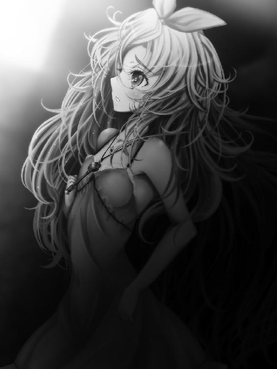
暫くの間、リズベルルは目を見開いて、壁に背を預けたまま息を殺す事しか出来ない。
まさか、何かの間違いに決まっている、とゆっくりと顔を出して、二人の様子を伺えば、目に飛び込んできたのは信じ難い光景。
ノルアードの唇に、レイルのそれがそっと触れる。
リズベルルは駆け出していた。覗き見していた事がばれぬ様に用心しながら、それでもその場から離れたい一心で走る。
ぽろぽろと涙が零れて、頭の中はめちゃくちゃで、考えがまとまらない。
脳裏に焼き付いて離れないあの光景。口付けを交わす二人。ショックだった。
その日リズベルルは、ベッドに入って毛布を被り、枕に顔を押し付けて眠った。
失恋の痛みが、ずきずきと胸を苛んで、切ない気持ちで夢を見た。
「婚約の事、皆に言った？」
悪戯っぽく言うレイルに、ノルアードはうんざりした顔を向け、深く深く溜息を吐く。
どうしたものかと首を振り、それから旧友を責める様に顔を顰める。
「言える訳無いだろうが。と言うか、どうしてレイルがそれを知っている。さては......」
「ええ、ジャルバン様から相談されたわ」
「どうしてそこで、阻止してくれないのだ！ お陰で俺は、これからどう誤解を解けば良いのか......ああ、本当にどう断れば......」
「あら、コルネリーって貴方好みだと思ったけど。年下だし、ふわふわ可愛らしいし、性格も良いわ。ま、男が苦手と言うのは追々克服するにしても」
「ぐっ......貴様～っ！ 確かに俺の好みは年下でふわふわ可愛らしい女の子だ！ しかし、誰でも良い訳では無いっ！」
「と言う事は、まさか貴方......まだリズの事が好きなのね？」
まぁ、呆れた事、とレイルは茶化す。ノルアードは拳を握り、わなわなと震えてレイルを睨み、そこまで判っているのならどうしてジャルバンにそう伝えてくれぬのだと怒る。
「わ、悪いか！ 俺はずっと、リズ一筋なんだっ!!」
「ふふ、一途ね。でもそれで昔から進展が無いって、どうなの？」
「......だって、リズはまだ子供だし、俺は......分別のある大人として、今は彼女を見守る立場で......その......」
「ま、それもそうか。貴方、立派ね。と言うか、正直驚いたわ。やっぱり昔と変わって無いのね、ノルアード」
「ふん、何とでも言えっ!!」
拗ねたようにそっぽを向くノルアードに、レイルはごめんなさいねと詫びる様な笑みを浮かべる。
それから腕を組んで、困ったわね～と呑気な声で。
「じゃあ、ますますコルネリーとの結婚は断らないと」
「しかしジャルバン殿はすっかりその気だ......どうにかして穏便に断らねばならんのだが......」
「いっそ、リズが好きって言ってしまえば？」
「ば、馬鹿な！ 本人にも伝えていない事を、どうしてジャルバン殿の前で言う事が出来るのだっ！」
「う～ん、じゃあ他に婚約者が居ると嘘を吐く」
「......相手が居ない」
「あら、私が相手役をしてあげても良いのよ？」
そうしてレイルはうーむと考え込んでいるノルアードにそっと顔を近づけ、躊躇いも無くその口に、唇で触れた。
うげ、と顔を顰めるノルアードである。
「な、何をするレイルっ！ 悪戯にも程があるぞっ!!」
「あら、そんなに嫌がらなくても良いじゃない」
袖でごしごしと唇を擦るノルアードに、レイルは子供っぽく頬を膨らませるが、剣主には通用しない。
何を言うかと半眼になって、ノルアードは冷たく返す。
「嫌に決まっているだろうが全く......こんな事をする奴だったか、お前は」
「あら、優しく無いのね。いつの間にか〝君〟が〝お前〟になってるし」
「ふん、ようやく昔の調子に戻っただけだ」
「そうかもね。ま、ジャルバン様の事は追々考えましょう。まずは明日、黒海への対抗策の方が重要よ」
「うむ......そうだな。余計な事に気を取られている場合では無い、か」
そうしてノルアードとレイルは二人、夜空を見上げる。
その時、物陰から走り去るリズベルルの姿には気付かずに......。
２．ヴィルフォーナの行方
夢の中、リズベルルはまたしてもかつてのシェラダン、幼い頃の日々へと戻っていた。
その日、教室が終わった後、森へ冒険に出かけると言うノルアードの元には、数人の子供達が集まっていた。
図鑑で見た玉虫色の殻を持つ綺麗な昆虫が屋敷の近くの森にも棲んでいると言って、ノルアードはそれを探しに行こうと言うのである。
リズベルルはその虫の事を図鑑で見て知っていた。きらきらと輝いて、まるで宝石みたいな小さな生き物。
本物を一目見てみたい。ノルアードにお願いして探検隊に加わったリズベルルだったが、年上のお兄さんは意地悪な笑みを浮かべ、こう言ったのだ。
「ちびリズが、俺達のあとについてくる事ができれば、だけれどな」
意地悪ノルアード、どうしてそう言う事を言うんだろう。頬を膨らませながら、リズベルルは懸命に探検隊の後を追う。
どんどん先へ遠くなる子供達の背に、リズベルルは焦りながら、それでも宝石虫を探して木々へと目を凝らす。
そうしていると不意に足元の木の根に躓き、リズベルルは悲鳴を上げて転んでしまった。声を聞き付けて、線の細い少年が戻ってきて、リズベルルの事を助け起こす。
「大丈夫かい、怪我は？」
「う、うん......いたっ」
痛みに顔を顰め、見やれば膝に滲む真っ赤な血。
リズベルルが泣きべそをかいていると、子供達も戻ってきて、口々に大丈夫と尋ねた。
ずっと先まで進んでいたノルアードが何事かと戻って来る。リズベルルを見て、はっと目を見開き駆けつけて。
「リズ、怪我をしたのか!? 馬鹿、だからついてくるなと言ったんだ！」
「ノルアード、来ても良いって......言ったもん」
「そ、そうだったか......それはすまない。ほら、おぶってやるから、泣くな」
涙を拭い、こくりと頷いてリズベルルはノルアードの肩を掴む。首にぎゅっと手を回し、そうすると何だか安心して、ずきずきした膝の痛みも引いて行く様だ。
近くに感じる、ノルアードの温もり。お父さんのとは違う、男の人の匂い。
ノルアードは意地悪だけど、本当は優しくて......だから、好き。
くすりと笑みを漏らすリズベルルの耳元で、誰かが囁く。
婚約の事、皆に言った？
はっとして顔を上げれば、目の前で口付けを交わす二人。
ノルアードと、レイル。
「......、」
リズベルルは静かに目を開けて、涙を拭う。重りが圧し掛かった様に頭が痛む。目覚めたばかりだと言うのに、複数の弦奏鎧を操った後みたいな眠気が纏わりついて、気分が晴れない。
何だか舌が冷たく、喉が渇く。リズベルルはゆっくりと体を起こし、それから顔を顰め、体を丸めて息を吐いた。
「......なんか、おなか、痛い......」
呟きながらも思い浮かべるのは、昨夜の光景。
ノルアードとレイルは、あの時何を話していたのだろう。
それを考えるだけで体が震え、リズベルルはそんな自分が嫌になる。
レイルなんて、居なくなっちゃえば良いのに。
そんな事を考えている自分に気付き、リズベルルは無性に悲しくなった。
時計を確かめると、まだ早朝。
もう少しベッドの中に居ても良い時間だったが、そう言う気分にもなれず、もたもたと着替えを済ますと、リズベルルは部屋を出る。
扉を閉めると、見慣れぬ廊下。そうだ、リィガイムに来て、ドレッド邸に泊まったんだ。今更のようにそんな事を思い出して、リズベルルは深く息を吐いた。
今日からは、騎士としての仕事だ。皆の足を引っ張らない様にちゃんとしなくちゃと思う反面、どうしてもレイルと顔を会わさねばならないと思うと気が進まない。
何より、ノルアードとどんな顔をして話せば良いのか。考えれば考える程深みにはまり、それは頭痛と眠気を助長する。
数歩進んだ所で動けなくなって、リズベルルは廊下の壁に体を預けた。お腹を押さえて、そのままずるずると座り込む。
風邪でも引いたのかな、と思いながらそうしていると、早朝の空気で冷えた壁はひやりと気持ち良く、何時までもそうして居たいくらいだ。
「......やっぱり、部屋に戻ろうかな」
ぽつりと呟くが、立ち上がる気力が無い。ぐずぐずしていると痛みはどんどん増して、リズベルルは汗をかきながら蹲る。
すると、誰かがそっと肩に手を触れた。ゆっくり顔を上げると、心配そうに眉を寄せたコルネリーの顔がすぐ傍にある。
「どうしたの、リズベルル」
優しげなその声にリズベルルはくしゃりと顔を歪め、コルネリーは何か察した様に頷きながら、その瞳からぽろぽろ零れる涙をそっとすくった。
同じ頃、シェラダン郊外。不可侵の中央区画へと通ずる森を歩く人影。
このエンダージェンでは珍しい、黒髪黒眼。纏う衣装も同じく黒で、まるで影が影を引きずって歩いているかの様な出で立ちの男、シズマである。
その目的は、この霧深い森にあるとされる王城を見つける事にあり、彼は長い調査の末、遂に本格的な探索に入ろうと言うのである。
すっかり辺りが霧で包まれてしまうと、シズマは懐からこちらもまた黒々とした封印球を取り出し、そこに封じられた弦奏鎧バルグタームを呼び出す。
シズマの影から身を起こす様に現れたバルグタームの足には、寝袋からナイフ、果てはろ過装置と言った探索に必要な道具から、食料、水、思いつく限りの装備が不格好に括りつけられており、その量たるは森の中で１週間は過ごせるだろうと言う程だ。
また、予てよりの調査で見つけた水場には、予め食糧物資等を運び込んでおり、仮に手持ちの食べ物が尽きてもそこから補充出来る手筈となっている。
我ながら良くやるものだとシズマは思うが、目的がエンダージェン中の誰もが実態を知らない王城となれば、これでも十分とは言えない。
「ともかく、長期戦......だな」
バルグタームの胸部に乗りこんで、早速シズマは森の中を歩き始める。
入り組んだ獣道を進み、更には道なき道を行きながら、奇妙な予感にシズマは逸る気持ちで居た。
今度の探索で、きっと何か手掛かりを見つけられる気がする。
そんな予感が、シズマを森の奥深くへと導いて行く。
「はい、ココア。体が温まるわ。嫌いじゃないと良いけど」
ふわりと笑んでコルネリーはリズベルルの前にココアの入ったカップをことりと置く。
おずおずと受け取って、カップの中を眺めれば、褐色の液体がまだぐるぐると渦を描いていて、リズベルルは未だ衝撃にぼんやりとしたまま、口をつける。
甘い香りとほっとする様な温かさが体の中に流れ込んできて、ずきずきとした痛みが不思議と消えて行く様だった。
「......おいしい」
「そう、良かった」
コルネリーの微笑みにリズベルルも自然と頬を緩め、ちびちびとココアを舐める。
温かい飲み物が良かったのか、それとも人と話して安心したからか、段々と頭の奥に食いつく様な眠気も薄れ、そうしてようやくリズベルルは落ち着いて息をつく。
そんなリズベルルを優しく見つめながら、コルネリーは温かな声色で話しかけるのだった。
「リズベルルの事を聞いて、私びっくりしたわ。まさか貴女が騎士様で、ヴィルフォーナの封印を預かっているなんて」
「そんなこと、私なんて......」
弱々しく口元を緩めて首を振るが、どうしても何時もみたいに元気に笑う事が出来ず、リズベルルは俯いてしまう。
騎士と言う言葉を聞けば、嫌でもノルアードの姿が浮かび、昨日の事を思い出すと、またお腹が疼く様に痛む。
きりきりとした痛みに唇を噛むリズベルルを見て、コルネリーは何か察した様に瞼を落とすと、次にはまた柔らかな笑みになって尋ねるのだった。
「余計な事を聞いてしまったらごめんね？ 貴女のお父様......ラスティノフ博士は随分前に亡くなられたと聞いたけれど、おうちにご家族は？」
「ううん。でも、ジンとアオゾラと一緒に住んでるの」
「ジン様と......アオゾラ、さん？」
「うん。アオゾラは猫で、半分うちの飼い猫。半分は野良」
「まぁ」
話しているうちに調子が出て来たのか、リズベルルはくすくすと笑う。コルネリーもそれを見て嬉しそうに目を細め、それからリズベルルの手をぎゅっと握って言った。
「一緒に暮らしているのが男の方では、相談し難い話もあるでしょう？ この街に居る間、私で良ければ相談に乗るわ。何でも話してね？」
「あ、ありがとう......コルネリーさ」
と、言いかけるリズベルルの唇を指で押さえて、コルネリーは悪戯っぽく笑む。
はっとして、リズベルルは照れ臭そうに肩を丸め、こくりと頷いた。
「ありがとう、コルネリー」
「ええ。リズベルルは良い子ね」
そうしてコルネリーはそっとリズベルルの頭に手を置いて、静かに髪を撫でる。
目を閉じて身を委ねていると、まだ僅かに残っていた頭痛がコルネリーの温もりに溶けて行く様で、リズベルルはようやく素直に笑う事が出来た。
そうしていると、向こうから足音が近づいてきて、目を開ければ、やって来るのはレイルである。
「二人とも朝早いのね。それに、何だかとっても仲良し。何の話をしていたの？」
「ふふ、先生には内緒です。女の子同士のお話ですから」
なぁに、秘密の話？ と肩を竦めるレイルに、リズベルルはコルネリーと一緒になって声を合わせ笑う。
ずきりと胸が痛むけど、コルネリーが髪を撫でてくれている間は、嫌な気持ちも忘れる事が出来たのだ。
「ノルアード、起きて～。起きてっ！」
その声と共に、控えめに揺さぶられて、ノルアードははっと目を覚ます。
ぼやけた視界が次第に鮮明となり、それがリズベルルである事を認めると、ノルアードははっと顔を伏せ、若干居心地悪く笑みを漏らす。
昨晩は例の婚約問題のせいで悩むあまり、良く眠れないどころか何だか悪夢も見ていた気がする。
その寝顔は、さぞ間の抜けたものだっただろう。リズベルルに見られてやしないかと、ノルアードは暗澹たる気持ちになった。
「お......おはよう、リズ」
「全然起きて来ないんだもん。皆もう、ご飯食べちゃったよ」
「そ、そうか。すまないな......ちょっとその、悩み事で、眠りが浅くてな......」
照れ臭そうに頭をかきながらノルアードが言えば、リズベルルは首を傾げ、それから何だか冷たい表情で目を細めるので、ノルアードはぎくりとする。
やっぱり寝顔を見られたか、あるいは恥ずかしい寝言を聞かれていたとか。冷や冷やするノルアードであった。
何か弁解の言葉は無いかと言葉を探していると、不意にリズベルルの表情に陰りがある様に見え、それはどうやら自分の失態のせいばかりでは無い気がして、ノルアードは尋ねている。
「リズ......今日は、何だか雰囲気が違うな」
「えっ......そ、そう？」
「うん......心無し、顔色も悪い様な」
そうして何気なくリズベルルの手を取れば、それが驚く程冷たいので、未だ夢の中に片足を突っ込んでいたノルアードはいっぺんに目覚める。
ベッドから跳び起きて、リズベルルの顔をじっと見つめた。
「リズ、無理をしてないか」
「む、無理なんてしてないよっ！ ただ、ちょっと......」
顔を背け、リズベルルははっとした様にノルアードの手を払いのける。
突然の反応にノルアードが困惑していると、リズベルルはぎゅっと目を閉じ、それから弱々しく笑みを浮かべて、気丈にも微笑んで見せた。
「なんでもないよ。緊張してるだけ」
「緊張？」
「前みたいに歳の近い友達が居ないから、心細かったの。でも、コルネリーとはもう仲良くなっちゃった。優しいお姉さんって感じで、素敵なの。だから大丈夫」
「そ......そうか......」
「うん。じゃあノルアード、早く着替えて来てね」
そう言ってそそくさと部屋を出て行くリズベルルに、ノルアードは何だか腑に落ちないものを感じながらも、いそいそと着替え始める。
支度をする間、奇妙に胸が高鳴っている事に気付き、ノルアードはふと手を止めた。
今朝のリズベルルは、何か普段と違っていた。少し大人びたと言うか、色気があると言うか......いやいやいや。
「な、何を考えているのだ、俺は」
ぱしんと頬を叩き、ノルアードは深く息を吐くのだった。
その日は亀裂が潜む空の下、地図を睨んでの作戦会議と相成った。
まずはレイルが広げた地図、亀裂があると目される地点を丸く囲み、皆の顔をぐるりと見渡す。
「黒水玉はこの範囲で目撃されている。亀裂があるのは恐らく此処で間違いない......と判っていても、いきなり挑むのはやっぱり難しいのよね？」
「ああ、ヴィルフォーナで近づけば、多分今まで以上の反応が現れるだろう。本格的に活性化し、フェアルージュの時の様になる可能性が高い」
思案気に顎を擦り、ジンは考えを巡らせる。
思えばフェアルージュの時はやり方が滅茶苦茶だった。勢い任せに黒海へと突入し、ボルダナの機転で亀裂を滅する事は出来たものの、ルーガル号を犠牲にした。
同じ事がまた出来るかと言えば無茶だ。まず普通の飛行船で高度限界を超える事は厳しいし、仮にそれを盾に近づけたとして、破壊された船の残骸が街に落下しては元も子もない。
仮に同様の作戦を取るならば、盾となる飛行船と、ボルダナの持つ封印球が必要となる。それで危機を脱する事が出来るのならボルダナに協力を仰ぐべきだとの考えも出来たが、やはり船一隻潰すのは現実的では無いだろう。
「ヴィルフォーナが近づく隙を作る事が出来れば良いのだが......」
「私に考えがあるわ。これを使うの」
そう言ってレイルが足元から拾い上げたのは、観測用の高高度気球。
カメラ等を装着する箱の部分は一抱えもある程の大きさで、気球を膨らませた時の大きさはそれなりの物になるだろう。
畳まれていた気球を広げて見せながら、レイルは言った。
「これを幾つも空に上げて、亀裂をかく乱するってのはどうかしら。亀裂が気球を撃ち落としに来るのは間違い無いし、隙を作る事だってきっと出来ると思うのだけど」
「成程、気球に紛れて近づく訳か」
ふうむと頷いて、ジャルバンは亀裂があるであろう空を見上げる。
レイルの提案に、ジンとノルアードも感心した。少なくとも、飛行船を盾にするよりはずっと現実的であると言える。
「無論、今回の作戦ではジン君の安全が何よりも大事だ。保険と言っては何だが、当日は俺も水門の儀に挑む準備をした上で立ち合うつもりで居る。もし失敗したら、すぐにでも離脱する事が前提で、どうだろうか。レイル君の案を試してみると言うのは」
「ええ、なかなか良い作戦に思う。俺は賛成だ」
意外と言っては失礼だが、思いの他理性的なジャルバンの判断に、ジンも皆も頷いて、満場一致でレイルの作戦は採用となる。
高高度気球は一週間もあれば十分な数が揃うとの事で、その速さに皆が驚けば、ジン達に協力を仰ぐと決めた段階からレイルは既に準備を始めていたと言うから驚いた。
「どっちにしても、研究で使うつもりだったしね。街の為になるのならと思って発注していたのよ」
皆の視線を集め、レイルは事も無げに言う。
それが心強く、早くも作戦が上手く行った気になって、むしろ決行の時が早く訪れないかと気が逸るジンの袖を、くいくいと誰かが引く。
リズベルルだろうかと振り向けば、そこにはもう一人、ずっとその場に居たものの静かに話を聞いていたコルネリーが一緒なので、僅かに驚くジンである。
何か、と首を傾げれば、コルネリーはぎゅっと握った拳を胸に押し当て、顔を真っ赤にして言うのだった。
「あ、あの......ジン様。よろしければ私、ヴィルフォーナの勇姿を見てみたいのですが、お願いできませんかしら......」
「おお、そうだなあ。黒海へと挑む前に、天舞う音色ヴィルフォーナの雄々しき姿を、俺も拝んでおきたいものだ！」
コルネリーに同調し、ジャルバンはお決まりの笑みを浮かべるので、ジンとノルアードは苦笑気味に顔を見合わせ、頷いて見せる。
何よりも男が苦手のコルネリーがジンに直接頼むのだから、余程関心があるのだろうと思えば、断れる筈も無い。
「近頃活躍の機会も無かった事だし、少し慣らしておくとしようか。リズベルル、どうだ？」
「うん！ 大賛成！」
満面の笑みを浮かべるリズベルルには、ジンもノルアードも密かにほっとして、と言うのも、何だかリィガイムに来てからと言うものリズベルルは少し元気が無い様だったのを二人とも気にしていたのである。
深刻に捉え過ぎか、と胸を撫で下ろす二人の前で、リズベルルが封印の鍵を取り上げて詩を紡ぐ。
「海を断ち、天舞う音色ヴィルフォーナ、出てきてっ！」
その言葉と共に溢れんばかりの光が辺りを満たし、封印の鍵から放たれた一条の輝きが、質量を伴った巨人として顕現する。
吹き荒ぶ風と共に現れ出でし、シェラダンの守護鎧ヴィルフォーナ。
雄々しくも美しいその姿が、皆の眼前に姿を現していた。
「わっはっは！ 何とも豪快なものよ！ 弦奏鎧ヴィルフォーナ、聞きしに勝る美しさだ！」
「本当、なんて綺麗なのかしら......リズベルル、貴女凄い力を持っているのね」
ドレッド親子の視線を集め、リズベルルは照れた様に笑みを浮かべ、バトンタッチとばかりにジンの腕に触れる。
微笑みながら頷いて、はっとして俯くコルネリーに声をかけるジン。
「良ければ遊覧飛行でもどうかな。リズベルルの友達はみんな乗せる事にしてるんだ」
「わ、私が、竜に......？」
おずおずと顔を上げるコルネリーにジンは念を押す様に頷いて見せ、まずは準備だとばかりに膝を着くヴィルフォーナを駆け上がり、その胸部に体を滑り込ませた。
制御リングに手をかけて、早速ヴィルフォーナを竜の姿へと移行させる。その時、何だか妙に伝わって来る振動がぎこちなく感じられて、ジンはおや、と首を傾げた。
翼を広げるヴィルフォーナ。いつもなら首をもたげて雷鳴の如く唸って見せる所だが、やはり何かおかしい。
鎧に言うのも何だけれど、どうにも覇気が無いと言うか、元気に欠けると言うか、ヴィルフォーナにもやる気が出無い日があるのだろうかと冗談めいた事をジンが思えば、不意に異変が起こった。
「な、なんだ？」
間の抜けた声を上げ、ジンはがくりと体を揺らす。
制御リングの手ごたえが無くなり、突然力を失ったヴィルフォーナが関節を沈めたのだ。何事かと顔を上げるジンの眼前で、燐光が瞬く。
「ジン、一体何事だ！」
ノルアードが叫ぶのに、答える暇も無い。
ジンの眼前で、ヴィルフォーナの胸部装甲が透け始める。あっと思えば、見る間にその異変は広がって、瞬く燐光に溶けてばらける様に、ヴィルフォーナの姿は薄れて行った。
足場を失ったジンが慌てて地上に降り立てば、見上げた先にある筈のヴィルフォーナの巨体は遂に虚空へと姿を消した。
何が起こったのか判らずに、今しがたヴィルフォーナが居た空間を見上げるジン。
「そんな......」
殆ど泣きそうな声で呟くリズベルルが、封印の鍵をぎゅっと握りしめ、何度も唱える。
海を断ち、天舞う音色。
「海を断ち、天舞う音色！ お願い！ お願いヴィルフォーナっ！ 出てきて......どうして消えちゃったの？ ヴィルフォーナっ！ ヴィルフォーナってばっ!!」
あれ、おかしいな、と精一杯の笑みを浮かべ、リズベルルは懇願する様に詩を紡ぐ。
しかし、封印の鍵の中にある筈の弦奏鎧はそれに答えず、それどころか......。
「うそ......うそだよね......」
ジンとノルアードが困惑の視線を向ける前で、リズベルルの手の中にある封印の鍵、その硝子球の光が鈍り、中に浮かんでいたヴィルフォーナの像が薄らと色を失い。
やがて、その中から姿を消した。
「ヴィルフォーナ......」
呆然と呟き、ぺたりとその場に座り込むリズベルル。
誰もが言葉を失い、目の前の出来事に困惑する中で、気付けば自分が震えている事を、ジンはようやく自覚した。
一先ず屋根の下に場所を移したが、その場の誰もが困惑から晴れぬ表情で、暫くは一言も無く時が過ぎる。
視線が向く先はリズベルルが握りしめる封印の鍵で、ヴィルフォーナの行方に考えを巡らせても、無論答えが出る筈も無い。
腕を組んで眉を顰めながら、ジャルバンが誰にとも無く尋ねる。
「一体何が起こったのだ。こう言う事は前にもあったのだろうか」
「いえ、少なくともこう言った形でヴィルフォーナが消えてしまうと言うのは初めての事態。我々も困惑していると言うのが、正直なところだ」
そう答え、ノルアードはぽろぽろと涙を溢すリズベルルに視線を向ける。傍で寄り添ったコルネリーが、その濡れた頬を優しく拭う。
「ごめんなさいリズベルル。私があんな事を頼んだから......」
「コルネリーの、せいじゃ、ない。たぶん、私のせい。私がわるい子だから、ヴィルフォーナ、いなくなっちゃった」
しゃくりを上げるリズベルルに、ノルアードもジンも何か声をかけようと口を開きかけるが、こんな時何と言えば良いのか判らずに、二人とも言葉が出ない。
ヴィルフォーナが消えてしまう事が初めてなら、こんなに悲しげに涙を流すリズベルルを見るのも初めてな気がした。
「何か理由がある筈よ。ヴィルフォーナが消えた事には、理由がある筈」
「......理由、か」
「例えば土地が合わなかったというのは？ シェラダンの観測塔が他の街で機能しない様に、ヴィルフォーナもまたシェラダンの外では活動できない」
「それは無い。現にフェアルージュでもメルディーノでもヴィルフォーナは飛べたのだ。リィガイムで機能しないと言うのは考えにくい」
「それもそうか......待って、ヴィルフォーナはノルアードが儀式に挑む直前まで、封印されていたのよね？」
「正確には、封印が解けたのはその幾分前だが......」
「こうは考えられない？ ヴィルフォーナは役目を終えて、また深い眠りについた......」
「役目を、終えた......」
その言葉が、ジンの胸を射抜く様に過ぎて行く。
弦奏鎧ヴィルフォーナ、それが持つメイルレヴァンの剣は、水門の儀に必要な鍵。
ノルアードが儀式を終え、シェラダンの結界が修復された今、確かにヴィルフォーナはこの時代での役目を終えたともいえる。
その証拠に、近頃街に走る亀裂の対処はトルフで十分事足りて、ジン達の出番は殆ど無くなっていたのだ。
シェラダンの街に、ヴィルフォーナの強大な力はもう要らない。
その事実は、どうしようもなくジンの心を苛んだ。
「......作戦が決まった矢先にこの事態、ジャルバン殿には申し訳ない」
低く感情を欠いた声でノルアードが言って、その言葉にリズベルルは身を震わせて、恐る恐る剣主を見た。
ノルアードは深く溜息を吐いて。
「ヴィルフォーナが消えてしまった以上、どうする事も出来ん。とは言え、上空の亀裂は放置できないのもまた事実。少なくとも気球が揃うまで１週間ある。このうちに問題が解決する様に努めるべきだ」
「あ、ああ......」
「何、ヴィルフォーナもまたひょっこり現れるかもしれん。レイルの言う通り、シェラダンの土地の力が必要だと言う考えにも頷ける部分はある。一先ず我々は、シェラダンに一度戻って対策を考えたいと思うのですが」
「ううむ、そうだな。元はと言えば俺が万全で無いのが原因よ。ヴィルフォーナが復活するまで、俺も腰を治すのに専念しよう」
そう言って笑うジャルバンだったが、瞳に映る色は険しいままで、ノルアードも頷き返すものの、こちらからも不安の色は晴れない。
何より、ショックを受けているのはリズベルルだ。胸を上下させ、荒く呼吸をしながら、ノルアードをじっと見つめて動かない。
こんな時励ましてやらねばならないと頭では判っているのに、動けないのはジンも同じだった。
ヴィルフォーナが消えた今、俺は何のために此処に居る。
そんな疑念が頭から離れず、ジンはその場で立ち尽くすのだった。
せめて出発は明日にしたらどうかと気を使うジャルバンとコルネリーに断って、一行はシェラダンへ戻る準備を始めていた。
帰った所で事態が好転するとも思えないが、じっとしているのもそれはそれで耐え難く、試せる事は早いうちに済ませておきたかったのである。
リズベルルが一日泊まっただけの部屋を片付けていると、こんこんとノックする音がして、返事をしないで居ると扉は控えめに開かれ、静かに現れたのはノルアードである。
目が合って暫しの間気まずい時間が流れるが、リズベルルが俯くのを合図に、ノルアードは口を開いた。
「リズ、何か隠している事は無いか」
「なんで。ないよ。突然どうして？」
「......そんな気がしてな」
呟くノルアードに、リズベルルは一瞬目の前がかっと赤くなるかの様に錯覚する。
思い出されるのは、唇を合わせる二人の姿。ノルアードとレイル。婚約の事実。
隠しているのは、どっちよ。怒りと共に沸くそんな言葉は、しかしすぐに悲しみに飲み込まれる。
こんなの、ただの嫉妬だ。ノルアードが誰を好きになって、誰と結婚したって、自分には関係の無い事なのに。
だから、やっぱり、私ノルアードの事が好きなんだ。リズベルルは改めてそう自覚して、そうすると今まで大きく波打っていた感情がさっと静まるのを感じた。
「......これ、返すね」
リズベルルが差し出すものを受け取って、ノルアードは眉を顰める。
それはシェラダンの騎士である事の証である徽章。ヴィルフォーナが居ない今、リズベルルは騎士の資格を失った。
どうせ私は、６０点だし。
ほうっと息を吐き出すリズベルルの頭を、ノルアードは軽く小突いて、驚いて見上げれば、厳しい顔の......剣主としての彼が居る。
「馬鹿を言うな」
決して大きな声では無かったが、リズベルルはびくりと身を竦ませ、じわりと目に涙を浮かべる。
いろんな言葉が溢れてくるけれど、ノルアードがそっと手を取って徽章を握らせてくれたので、何も言う事が出来なかった。
「ヴィルフォーナが居なくなった事くらい、どうという事は無いんだ。それでリズや、ジンがどう変わる訳でもあるまい」
そんな事は無かった。
ヴィルフォーナが無ければリズベルルはただの女の子で、ノルアードの傍で彼を助ける事も出来ず、守られるばかりのお荷物になってしまう。
けれどそんな事を口にすれば本当に涙が零れてしまいそうで、リズベルルはやはり、声を出せない。
「俺が心配しているのは、むしろ君の事だ、リズベルル。私にとっては君の方が、ヴィルフォーナよりもずっと大事だ。悩み事があるなら打ち明けて欲しい。前に二人で共に悩もうと言ったじゃないか」
「......ないよ」
ごしごしと目を擦って、リズベルルは呟き、無理に笑顔を作ってノルアードを見上げる。
ここで本心を打ち明ける事が出来ればどれだけ楽だろうと思いながらも、リズベルルはただ精一杯笑う事しか出来なかった。
「別に悩んでないよ。ヴィルフォーナがいなくなって、動揺しただけ。ほら、レイルさん車出してくれるんでしょ。行こうよ」
「......ああ」
頷くノルアードがどんな顔をしているのか確かめる事も出来ず、リズベルルは部屋を出る。
ノルアードが後ろからついて来たけれど、少し意地悪に扉を閉めた。
「リズベルル、元気を出してね。また来てちょうだい、絶対よ」
「うん！ ちゃんとヴィルフォーナを復活させて、また来るね！」
元気良く言うリズベルルをぎゅっと抱きしめ、コルネリーはまるで妹を可愛がる様にその頭を撫でると、名残惜しくも体を離す。
ドレッド邸から遠ざかる車の中で、リズベルルはコルネリーの姿が見えなくなるまでずっと手を振り続けた。
やがて、車はシェラダンに向けて走り出す。
「しかしヴィルフォーナにも困ったもんだな」
軽口を言う様に、ジンが言った。
「前からちょくちょく勝手に動いたりする奴だったんだ」
「しかしリズベルルに危険が迫った時ならばともかく、今度のは流石におかしいのでは無いか」
「どうかな。またひょっこり帰って来るさ」
ジンは何でもない事の様に言ったけれど、それがリズベルルを気遣っての言葉である事は明らかだ。
ノルアードはううむと唸って、それ以上追及はしなかった。
ぽつりぽつりと他愛の無い言葉を交わす大人達のお喋りを聞きながら、リズベルルは考えている。
このままヴィルフォーナが再び現れ無かったら、自分はどうすれば良いのだろう。
答えの出ない疑問と不安とに押し潰されそうになりながら、リズベルルは目を閉じる。
揺り籠の様に揺れる車の中、そうしてリズベルルはまた、夢を見た。
辛い現実から逃避する様に、かつての庭に戻って、珍しい昆虫を探すのに夢中になる。
「大丈夫かい、怪我は？」
「リズ、怪我をしたのか!? 馬鹿、だからついてくるなと言ったんだ！」
ノルアードは何時だってリズベルルの事を心配してくれる。優しい人。だから好き。
いっそ街の女の子達の様に、ただ憧れる立場にいたら良かった。
今みたいに気軽にお話ししたりせず、遠くから眺めるだけにすれば良かった。
そうすれば、こんな理不尽な想いを抱いたりしなくて済んだのに。
どうしてノルアードは、何も話してくれないの。
婚約なんて大事な事、真っ先に教えてくれても良いのに。
車がシェラダンに着く頃にはすっかり時間も過ぎ、その夜はリズベルルもジンもフィレントア邸でお泊りする事になった。
長い移動で疲れているのもあったし、とても自分でご飯を作る気にはなれなかったから、リズベルルは少し気が抜ける。
けれど、この広い邸に今日はレイルも一緒で、それが少し、居心地が悪い。
「あれ、リズ帰ってきてたの？ 早くない～？」
庭で空を眺めながらぼんやりとすれば、何処からとも無くアオゾラが目を光らせてぽてぽてと歩いてきて、リズベルルは小さく微笑んで頷くと、封印の鍵を掲げて見せた。
シェラダンに戻った途端、この土地に宿る何らかの作用でヴィルフォーナの像が再び映るのではとの淡い期待は、叶わなかった。
「んにゃ？ ヴィルフォーナがいないじゃん」
「いなくなっちゃった」
「はえー？」
不思議そうに首を傾げるアオゾラの背中を撫でながら、リズベルルは唱える。
「海を断ち、天舞う音色、ヴィルフォーナ......」
無論、それに答えるものは無く。
「リズ、体冷えるわよ」
代わりにかけられた声に驚いて振り向けば、そこにはレイルが立っている。
にゃっと驚きアオゾラが向こうへ逃げて行くのをレイルは愉快そうに眺め、リズベルルの隣に腰を下ろすと、気遣う様な笑みを浮かべる。
それが癇に障り、レイルと入れ替わる様にリズベルルは立ちあがった。
「あら、もういちゃうの？ 少し話しましょうよ」
「そういう、気分じゃないんです。......ごめんなさい」
ぺこりと頭を下げ、リズベルルはアオゾラが逃げて行った方へ駆けて行った。
取り残されたレイルが溜息を吐いていると、様子を窺っていたのか今度はジンが現れ、歩いてくる。肩を竦めて。
「逃げられたな」
「随分ショックを受けてるみたい。相談に乗ってあげたかったんだけど、駄目ね。昔の様にはいかない」
「そっとしておくのが良いのかもしれない。アオゾラもついてるし、今は......」
「そうかもね」
先程までのリズベルルみたいに、二人空を眺めれば、天に張る大結界の向こうには波打つ影が見える。オーロラの様に帯を描くそれの正体が結界に阻まれる黒海である事を思えば、神秘的なものを感じた。
「今日は綺麗に見えるわね。私が今の研究を始めた切っ掛けの一つはあれなのよ」
「大結界がどうして生まれるのか......だっけ」
「ええ。この国が三角錐状をしていると考えられているのは知っているわよね。大結界はその底となる大地の果ての外にある三点の力によって生み出されていると言うのが定説なの」
「その正体を明らかにするのが、レイルの研究って訳か」
「そ。ところでジンは、この国の外に行った事があるんでしょう？ エンダージェンは、実際の所どう言う形をしていたの？」
そう聞かれて、ジンはうーんと唸る。
確かにヴィルフォーナで水門の外に出た事はあるが、そこは辺り一面黒海で満たされた何処とも知れぬ場所で、エンダージェンを俯瞰して見たとは言い難い。
帰還に際しても、ジンはただ光の灯台が放つと思われる輝きを頼りにひたすら進んだだけだった。多分、同行していたシズマに聞いても首を傾げただろう。
あれは本当に、エンダージェンの外だったのか......と。
「そう、判らないのね......」
呟くレイルの声は、落胆と言うよりはむしろ喜んでいる様にも聞こえ、何故だろうと思えばその目に浮かぶ好奇心の色に、ジンは少し納得する。
「判らないままの方が、惹かれるか」
「見えないから人は見ようとする。何だってそうでしょう。さて、話を聞かせてくれてありがとう。リズにも逃げられちゃった事だし、今日は休むわ。運転で疲れちゃった。暫くこの街に滞在するつもりだから、また話聞かせてね」
「ああ、お疲れ」
邸に戻っていくレイルを見送って、ジンはふっと笑みを消し、その場に立ち尽くした。
見えないから人は見ようとする、か。
「もし、このままずっと見えないままだったら......」
姿を消したヴィルフォーナ、この先の未来、自分の居場所、やるべき事。
何だか目隠しをされたまま広い所に放り出された様な不安を感じ、ジンは呻く。
今晩眠って、目が覚めたらこの世界での出来事の何もかもが夢で、冷たいベンチで目を覚ますのではとの想像が頭の中に広がり、ジンはただ耐える様に唇を噛むのであった。
頭は冴えていたけれど、無理に眠ろうとベッドに潜り込み、目を閉じた。そうした所で眠れないのは当然で、早々に諦めたジンはただぼんやりと暗い天井を眺める。
ふと思い出すのは、竜の試練に挑む為に入った霧深い森でのフィオとのやり取り。
「魔を通じて弦奏鎧と感応し、あるいは剣を己が体の一部として知覚する。人魔一体の奥義、あんたはそれを無意識のうちにこなしているんだ」
「確かに、ヴィルフォーナを自分の体みたいに感じる事はあるけど」
ジンが首を傾げながらそう言えば、フィオはふんと鼻を鳴らし、呆れた様に言ったものだ。
「それがどれだけ凄い事か自覚しろよ。多分あんたは根底の部分で僕らと違う......もっと深い所でヴィルフォーナと繋がっているんだ。自分自身が魔であるが故に。だからこの魔剣も、軽々と扱う事が出来る。あんたが触れた瞬間に、魔剣はその一部となる」
背中に背負った封印の魔剣に触れ、フィオは悔しそうに言う。
ジンはその時、そんなものかと思った。ただ話半分に頷いた。
けれど、いざ半身たるヴィルフォーナが目の前から無くなってみれば、この心細さは何だ。
結局、ジンは特別なもの等何も持たない、ただの人だ。特別なものはみんなヴィルフォーナが持っていて、自分自身では剣も満足に扱えない半端もの。
「......人魔一体の奥義、か」
こうして暗がりでぼんやりと天井を見つめ、どれ程時間が経ったろうか、ジンは呻きながら体を持ち上げ、飛び起きると、窓の外を見る。
仄かに明るくなり始めた空がじんわりと目に沁みて、暫くそれを見つめた後、部屋を出た。
歩いて屋敷まで戻ると、部屋にほっぽり出してあった儀礼用の剣を手に取る。巻いてあった布を解き、全体をじっと眺めた。
大して役に立った試しの無い剣は、まだ綺麗なままだ。
剣を肩に担いで、ジンは再び砦まで歩く。ほんのりと汗ばんだ体で稽古場へと出向いて、鞘から剣を抜き放った。
構えて、心を静め、刀身を強く意識する。
この刃は自分自身。ヴィルフォーナに乗っている時当たり前に感じる事を、生身で意識する。
「俺は魔。リズベルルの魔」
呟けば、それはただ当たり前の事実として体中に沁み渡った。
魔である俺が持つこの剣は、俺の腕も同じ、指の延長、自在に動けば宙を裂き、黒海も天も時すらも、切り裂く無限の刃となる。
剣と感応する。感ずれば応じ、応ずれば感ずる。次第に意識は研ぎ澄まされ、ジンはすらりと伸びる刃で以って、呼吸した。
「ヴィルフォーナ、何故消えた」
剣を下ろし、ふっと呟けば、不意に背後に感じる気配。
ジンは首を振り、ゆっくりとそちらを向く。
「未熟者が頭を使った所で何も生み出せはせんぞ、ジン」
「......アルベルさん」
老騎士アルベルは転がっていた鞘をつま先で蹴り上げ、見事その手に掴むと、ほれ、とジンに向ける。
恥ずかしい所を見られてしまったと頭をかきながら、ジンは鞘を受け取り剣を収めた。
「すみません」
「何だ、謝る事があるのか」
「祭り、ヴィルフォーナのショーは出来ないかもしれない」
何を言い出すかと思えば、とアルベルは笑い、ジンの肩を拳で叩く。
痛いな、と肩を擦って、ジンも笑った。
「それで祭りの準備から逃げられると思うなよ。他にもお前さんに振る仕事は腐る程ある」
「厳しいな、師匠は」
「弟子に厳しくなくて何が師か」
この老騎士にしては愉快気に言って、アルベルは稽古場を去って行った。
一人残されたジンは早朝の空気を目一杯肺に吸って、体中の悪いものを捨てる様に吐き出す。
頬をぱんぱんと強く叩いて、気合いを入れた。
朝早くの砦を、ユフィーユは何だか心細い気持ちで歩いていた。
ヴィルフォーナ消失の話を聞き付けて、昨晩は我慢したものの、こんなにも早く目が覚め、居ても立っても居られず来てしまったのだ。
ジンに会って、話を聞こう。
自分に何が出来るとも無いが、きっとジンは頭を悩ませているに違いない。
こう言う時、ジンがどういう風に振る舞うのか、ユフィーユには見当も付かなかった。
飄々と構えている気もしたし、がっくりと落ち込んでいる様な気もするし、ジンならばどちらもあり得そうで、それが余計にユフィーユを悩ませる。
ただ、ジンはあれで繊細な人だ。出来るなら、自分はその支えになりたい。
「......とは言え、ジンさんまだ寝てるよね」
何やってんだろう、と首を折り溜息のユフィーユである。
我ながら空回りしていると思いながら、何となくその足は稽古場へと向かう。
せっかくだ。暇つぶしに汗をかくのも良いだろう。と、向こうから歩いてくる人影があって、見やればそれはアルベルだ。
こんな早くにと思いながらも、ユフィーユはぺこりとお辞儀する。すると老騎士は、すれ違い様ユフィーユの肩を叩いて。
「ジンの奴め、どうも随分気落ちしている様だぞ、朝から剣なんぞ振り回しおって。付け入るなら、今だと思うがな」
「はぁ......って、!?」
つ、付け入るならって......そう言う意味よね、とユフィーユは照れる。
後ろ手を振って歩いて行く老騎士をユフィーユは見送って、やがてぎゅっと拳を握り、ジンが居るであろう稽古場へと駆けて行った。
「......はぁ、ってあ痛っ」
溜息を吐いた傍から書類の束で殴られ、ノルアードは抗議の視線をマールへ向ける。
剣主ともあろうお方を、そんなぞんざいに叩いて良いのか。良いのであるか、と思えば、マールはやれやれと首を振り。
「身が入って無い様だから、気合い入れてさしあげたんですよ」
「お......おお......すまんな」
文句の一つでも言うつもりが、何だか言い返す気にもなれず、ノルアードは目の前の書類に視線を落とす。
そうしながらも、頭に浮かぶのは諸々の問題......こんな事をしていても良いのだろうか。早く手を打つべきではとの考えが浮かび、それは全く正しい不安であって、ノルアードは早速目の前の仕事を投げ出してしまった。
「あ～、身が入らんのも仕方が無いではないか。マールよ、お前に頼みがあるのだがな。リズが何か隠し事をしている様なんだが、聞き出してはくれないか」
「女の子には秘密の一つや二つあるもんです。根掘り葉掘り聞こうだなんて、リズちゃんに失礼でしょ」
「そ......そうか、一理ある......。しかしなぁ、どうもリズの視線が冷たいと言うか、何と言うか......」
「嫌われたんじゃ無いですか？」
意地悪く目を細めて言うマールに、ノルアードは息を飲んで、椅子をくるっと回して背を向けると、頭を抱えて考え込む。
嫌われた。リズに。そうなのか。なんで。
「......理由が判らん......」
リズの様子がおかしくなったのは、リィガイムへ着いてから......その前か？
車の中でも確かに大人しい気はしていたが、リズは確か殆ど眠っていた筈だし、するとやはりリィガイムで何か......？
いや、リズ自身はヴィルフォーナが消えた事で動揺しただけだと言うのだし、それを信じるべきなのかも......でもやっぱり、あの時はちょっと怒っている風でもあった。
ちょっとどころか、明らかに様子がおかしかった。何だか自暴自棄になっている様な、爆発したいのを堪えている様な、何にせよ心配であるのには変わりない。
「うーむ......リズの機嫌にヴィルフォーナの消失......問題は山積み......」
と言いながら正面へ向き直ると、マールはいつの間にか居なくなっている。
む、と思いながら肩を落とし、ノルアードはふと重大な事を思い出して、胃が痛くなった。
問題と言えばもう一つ。
ノルアードにとっては、ある意味重大な悩み事。
コルネリーとの婚約をどう断るか......。
わっはっは、と言う幻聴を聞きながら、ノルアードは深く深く溜息を吐く。
「あるいは、リズベルルは俺の煮え切らない態度に失望して、それで怒っているのかもしれんな......こんな時に小さい事で悩むなんて、頼りない奴だと思われているのかもしれない......」
無論、リズベルルはノルアードの婚約問題等知らないだろうし、それは考え過ぎと言うものだったが、どうしても頭の中でそれらの問題を結び付けて、悪い方へ悪い方へと考えてしまう。
ともかく、一刻も早くヴィルフォーナを復活させ、リズを元気にさせて、ついでにジャルバン殿に縁談を断らねばと拳を握るノルアードである。
解決策は、まだ、無い。
二日程悩んだ末に、リズベルルは地下室に隠してあった一枚のカードを取り出して、じっと見つめた。
カードには何処かの住所が書かれている以外には他に余計な装飾は一切無い。他の人に見つかってはいけない気がして、父の研究資料の隙間に隠しておいたそれを見るのは、それこそ隠した時以来だ。
こめかみを押さえながら、リズベルルは少しの間目を閉じる。リィガイムから帰って来てこちら、夜上手く寝付けずにいた。
あの重たい眠気は幸いな事に今は無く、だからこれは、単なる寝不足。
夜になるとどうにも体が熱を持った様に疼き、いらいらして仕方が無い。
そういう時、どうしても考えてしまうのは、ノルアードの事。
想えば想う程もやもやは膨れ、リズベルルはベッドの中で足をばたばたさせたり、枕を齧ったりして夜を過ごし、昼間にもうっかりソファーのクッションをかじかじして、ジンに笑われた。
「なにやってんだろう、私......」
はぁ～、と溜息を吐いて、リズベルルは意を決する。
カードに書かれた住所に宛てて、いつもプランシューネ達に出すのに使うのよりもずっと簡素な葉書に、一文だけ添えてポストに投函した。
返事が来たのはその翌日。
「......以前と同じ場所で お待ちしております」
リズベルルは少し迷った後騎士服に着替え、お風呂の蓋の上でうつらうつらしていたアオゾラを拾って肩に乗せ、屋敷を出る。
「ちょっと～、本気なのリズ～。俺なんか気が進まないんだけどー」
「そんな事言わないで、ついてきてよ。今日はアオゾラが、私の騎士様ね」
「お、それカッコいいじゃん！ よっしゃー、任せろーっ!!」
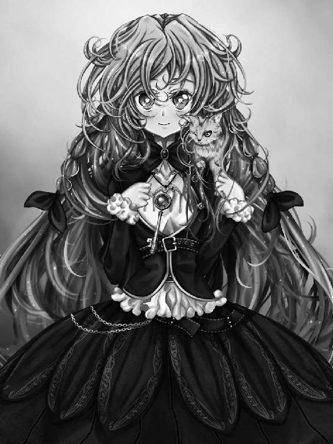
バスに乗って街を歩き、辿り着いたのはいつか来たビルの前。
見やれば、ご丁寧に非常階段への扉が開いている。
迷う事無く、リズベルルは階段を上って、屋上を目指した。
逸るあまり息を切らせながら辿り着けば、そこに見知った少女が一人、ぽつりと立っていて。
「お待ちしておりました、リズベルル様」
ぺこりとお辞儀するミルゥに、釣られて頭を下げるリズベルルとアオゾラであった。
透明なエレベーターに乗って回廊を抜けると、そこは人工の光が降り注ぐ美しい庭。
この秘密の庭園が、空高く浮かんだ飛行庭・ユゴスミネラの中にあるだなんて、久しぶりに訪れたリズベルルはやっぱり驚いて暫く言葉を忘れてしまう。
と、日除けのガゼボから歩いてくる人があって、彼は両手を広げ、リズベルル達を歓迎する様に優しく微笑んだ。
「ようこそリズベルルさん。アオゾラ君も、また会えて嬉しいよ」
「あー、おっさん久しぶりー」
「こんにちは、エイフォンさん」
またまたリズベルルはお行儀良く頭を下げて、アオゾラはと言えば肉球を掲げての気楽な挨拶。
エイフォンはうむうむと頷き、早速とばかりに懐から葉書を取り出すと、手の中で器用にくるくると回す。
「ご相談したい事があります......か、どうやら今回は、私の期待していたものに関する要件では無い様だね」
「あの、ごめんなさい......お父さんの研究資料、片付けてるんだけど、まだディエナ写本と言うものは見つからなくって」
と言うのは、この古代の遺物、飛行庭・ユゴスミネラと、お人形みたいな可愛らしいミルゥの主を名乗るエイフォンなる男は、リズベルルの父・ラスティノフ博士の古い知り合いで、博士とはディアナ写本なる謎めいた本を譲り受ける約束を交わしており、
リズベルルはその捜索を頼まれていたのだ。
無論リズベルルの方から呼び出したからには、ディエナ写本の行方に関して進展があったとエイフォンが期待するのは当たり前の事で、何の手掛かりも無いままユゴスミネラを訪れた事には、リズベルルも申し訳無く感じていた。
「気にする事は無いよ、リズベルルさん。まだ時間はたっぷりとある。無論、いつかは君があの写本を私の元に運んでくれると信じているけどね......さて、今日はリィガイム上空の亀裂に関して、相談があるのだったかな」
含みのある声色でエイフォンが言うものだから、リズベルルはびっくりして顔を上げる。
どうしてそれを、と聞く前に、エイフォンは唇に指を当ててリズベルルに笑って見せた。
「ヴィルフォーナが使えない今、飛行船の届かぬ高高度で航行出来るのは君が知る限りユゴスミネラだけ。君は私に協力を要請しに来た......違うかな」
エイフォンの言葉に、リズベルルはぱっと明るい表情で大きく頷く。
けれど、蒐集家の口から返されたのは、リズベルルの期待を裏切る一言。
「残念だけれど、それは出来かねる」
「......え」
「このユゴスミネラは秘密の庭園。地上の剣主達にその存在を知られるのは好ましく無くてね......この機会に、リズベルルさん。教えてあげよう、このユゴスミネラが、どうして飛行船の高度限界を超えた場所に浮かんでいるのか。何故私がリィガイム上空の亀裂を把握しているのか。答えは単純明快。このユゴスミネラこそが、長きに渡り人知れず高高度に生じた亀裂を砕いてきた存在だからに他ならない。ユゴスミネラに課せられた使命、この古代遺物の真の役割。それはエンダージェンの空を守る事にある。地上で剣主が剣で以って亀裂を埋める様に、ユゴスミネラから放たれる閃光は青い空を汚すものへの鉄鎚なのだ」
主の言葉に、それまで黙って寄り添っていたミルゥもまた、肯定の言葉を発する。
「事実です。ユゴスミネラは本来、エンダージェン上空の保守を目的とした施設であり、結界を維持するには重要な存在です」
「ちょっと待てよ。じゃあ、別にリズベルルが頼むまでも無く、おっさん達はリィガイムの亀裂を消してくれるって訳？」
リズベルルの肩口でアオゾラが言えば、エイフォンは肩を竦め。
「その必要があれば、ね。亀裂を滅する為に、ユゴスミネラは負担を強いられる。相応のエネルギーを消費せねばならないのだ。それは私にとって好ましく無い。リィガイムには剣主も守護鎧も健在だ。亀裂が決壊する前に速やかに水門の儀を取り行えば、何ら問題が無いもの。無論一刻も争う事態となれば考えなくも無いがね、現状では私はこの件に関して口を挟むつもりは無いのだよ」
「で、でも......リィガイムでも黒水玉が......」
「確認しております。この段階の汚染度では、ユゴスミネラを使用する決定打にはなり得ません」
ミルゥの言葉に、リズベルルは俯いた。
それじゃあ、街の人達が安心できない。
けれどそれを言った所で、多分エイフォンは納得しないだろう。リズベルル達とエイフォン達とでは、物事の見方が違う。説得は出来ない、と思った。
「あの、聞いても良いですか......？ 前にヴィルフォーナと竜脈がどうとか、言ってましたよね、あれって......」
リズベルルは第二の目的を口にしている。
エイフォンは、シェラダンの土地の力に関して何か知っている節がある。ひいてはエンダージェンの秘密を。
このユゴスミネラにしてもそう。古代の遺物を研究していたと言う彼ならば、古くからシェラダンに伝わるヴィルフォーナの消失に関しても判る事があるかもしれない。
リズベルルが気になっていたのは、以前訪れた時にエイフォンが漏らした竜脈と言う言葉だ。
それはヴィルフォーナに力を与えるものの様に、彼は仄めかしていた。あるいはその力で、ヴィルフォーナを復活させる事が出来るのでは、とリズベルルは考えたのだ。
「流石はリズベルルさん。良く気付いた......と言いたいが、今回のヴィルフォーナ消失に関しては、その存在はそれ程重要では無いだろう。問題は、恐らく君自身の中にある」
「私の、中......？」
「良く考える事だ。ヴィルフォーナが再び天を舞う事を、私も願っているよ。あれは、美しいものだからね」
リズベルルは半ば放心した様に、元のビルの屋上に戻っていた。
結局、手掛かりも何も得られなかった。それどころか、エイフォンの最後の言葉。
ヴィルフォーナが消えた原因は、やはりリズベルル自身にある。それが明らかになってしまえば、リズベルルは余計に混乱して、どうすれば良いのか判らなくなっていた。
「お送りします、リズベルル様」
抑揚の無い声で言うミルゥに付き添われ、バス停まで歩いた所で、リズベルルはようやく現実に戻って来た様な気になる。
今までの事が夢で無い事を確かめる様に、リズベルルは胸元の封印の鍵を見て、そこにヴィルフォーナが見えない事を確かめ、それから目の前のミルゥに言うのだった。
「ここで大丈夫。ありがとう、ミルゥさん」
「それでは、これで。リズベルル様」
「え？」
「貴女が今胸に秘めている感情。それは必要なものですか？」
ミルゥの言葉の意味が良く判らず、リズベルルは首を傾げる。
今リズベルルの胸にある感情。それはぐるぐると渦巻く不安であり、理不尽な怒りであり、とてもでは無いが良い物とは言えない。
捨てられるなら捨てたいものだ、と言いそうになって、ふとリズベルルは躊躇った。
例えこの感情を捨てた所で、事態が好転する訳では無い。
ヴィルフォーナは消えたままで、ノルアードはレイルと結婚してしまって、リィガイムの亀裂をどうするかは、ジャルバンが完治するまで先送りだ。
そんな時に、悩みを捨てて能天気で居られるか。居ても良いかと聞かれれば、リズベルルは首を振るだろう。
その時何が大事で、何をすべきか。いっぱいいっぱい、二人で悩もう。
ノルアードの言葉を思い出し、リズベルルはぎゅっと拳を握った。
「悪い事考えてる時って、意外と集中出来たりするし。必要かそうでないかって言われたら、やっぱり要るのかも」
「そうですか。それではリズベルル様、またお会いしましょう」
ぺこりとお辞儀し、ミルゥは迷いの無い機械みたいな足取りで去っていく。
その背を見つめ、肩口でとろんと目を閉じかけているアオゾラの温かみを感じながら、リズベルルはエイフォンの言葉を何度も何度も反芻する。
ヴィルフォーナが消えた原因は、リズベルル自身の中にある。
それは一体、何なのだろう。
「なーリズ～、エイフォンのおっさんの言う事も一理あると俺は思うぜ。別にリズが頑張る必要、無いじゃん！ 用はリィガイムの......何だっけ、ジャルバンっつーおっさんが儀式をすれば丸く収まる訳だろ？ そりゃヴィルフォーナが無いのは困るけど、それについてはゆっくりと考えれば良い訳で、焦る必要、ないないっ！」
「うん。そうだね」
バスから降りるとアオゾラはすっかり目が覚めたらしい。
リズベルルを元気付けようと言うのか、肩口でにゃんにゃんとお喋りなアオゾラの喉を擽りながら、リズベルルはゆっくりと森の中、屋敷への道を歩いて行く。
やがて硝子屋根が見えてきて、もう少し歩けば、その下に見える二つの人影。
リズベルルは立ち止り、深く息を吐いた。
「ノルアードと......あっちの姉ちゃんは誰？」
「レイルさんって言って、ノルアードの昔の友達。今はリィガイムで研究していて、コルネリーの家庭教師もしてるの」
「あーはいはい。あれがレイルね、夜に俺を脅かした奴か。なーんか親密そう～」
欠伸交じりにアオゾラが言うので、リズベルルはこくりと頷く。
二人は何だか楽しげに言葉を交わしていて、レイルはノルアードの腕に触れたり、胸を叩いたりと遠目にも距離が近いのが良く判る。
何だか近寄りがたく感じられ、リズベルルがぼんやり立っていると、レイルが最初に気付いて手を振るので、ちょっぴり微笑んで小さく手を振り返しながら、リズベルルはとぼとぼと二人に近寄った。
「ごめんなさいね、急に押しかけて。猫ちゃんとお出かけ？」
「うん。ちょっと、散歩」
と言って、リズベルルはノルアードを見ようとして、結局俯き、無理に浮かべた微笑みが醒めて行くのを感じながら、首を傾げる。
「なに？」
そんなつもりじゃ無いのに、素っ気ない声が出た。
「うむ、ヴィルフォーナの封印に関して先生の資料が参考になるのでは無いかと思ってな。観測塔の書架はレイルと手分けして当たってみたのだが、目ぼしい物は見つからず、次はこっちと言う訳だ」
そう言ってノルアードは地下室を指差す。あっそ、と頷くリズベルルは目を細めて。
シェラダンに帰って来てから、ノルアード、レイルさんとずっと一緒だったんだ。観測塔に収められていた本を調べていただなんて、何処まで本当か判らない。
大体、お父さんの資料の事なら、真っ先に私に聞きに来ても良いのに。
「そんなの、ないよ」
不貞腐れ気味に、リズベルルは言う。
「今までヴィルフォーナが消えちゃった事なんて一度も無かったもん。参考になる資料なんてある筈無い」
「でも、見落としてるものがあるかもしれない。一見関係無いものが案外役に立ったりもするものよ」
優しく言うレイルに、ノルアードは思案顔で首を振って。
「リズが無いと言うのなら、無いのだろう。先生の資料に今一番詳しいのは、リズなんだ」
そうしてノルアードは、ラスティノフの研究資料の整理をリズベルルが任されており、またトルフ隊の選抜試験でも優秀な成績を収めた話をレイルに披露した。
「まぁ、凄いわリズ。流石先生の娘ね」
満面の笑みになるレイルに、リズベルルは小さく頷く。それを照れだと思ったのか、レイルは微笑まし気に目を細め、それから庭先をぐるりと見渡して、懐かしそうに言った。
「それにしても、此処に来るのも何年ぶりかしら。覚えてる？ 昔この森を探検したりしたわよね」
「ああ、何だか随分と昔にも感じるが......」
「あの頃の貴方って、子供達のガキ大将って感じだったわよねぇ。よくリズの事も泣かせていたっけ」
「う......その話はよさないか。あれはその～、何だ。何とかの裏返しと言うか～」
懐かしき日々を振り返る二人を見つめながら、リズベルルはふと気付いた。
どうしてレイルの事を忘れてしまっていたのか。
きっと自分は、昔からレイルに嫉妬していたんだ。
二人があんまり仲良しだから、レイルにノルアードを盗られちゃう気がして、それでリズベルルは、思い出の中からレイルの存在を取り除いた。
昔から自分は何も変わっていないのかもしれない。
そう思えば、リズベルルは自分自身の事が堪らなく嫌になった。
禁忌の森に足を踏み入れてどれ位経ったろう。その時シズマは聳え立つバルグタームの足元、土から顔を出す苔むした岩の上に腰掛けて、持ってきた缶詰を口に運んでいる所だった。
一先ずはエンダージェンの中心を目指し、弦奏鎧の足でひたすらに進んでいたのだが、先へ行けば行くほどに霧は深まり、むせ返る様な濃度となっている。
無論こんな森であっても朝と夜が交互に訪れる訳なのだが、今ではすっかり空を霧が包んでいて、白い視界は常に発光している様にも錯覚され、時間の感覚も無くなっていた。
大まかな現在位置は王のシステムによって把握できていたが、これも何処まで信じて良いのか判らない。
この霧の中に居ると距離感も徐々におかしくなって、これまで途方も無い距離を歩いてきた様な気もすれば、まだ森のほんの入り口に居る気さえするのだ。
少なくともシステムで方角は判るので、遭難して帰れなくなると言う事は無さそうだが、とシズマは自分を励ますが、やはり一人きりと言うのは不安であった。
「こんな環境では、これまで誰も立ち入らなかったと言うのも頷けるな......」
シズマは初め、この森が不可侵の領域とされているのには、エンダージェンの人々の王に対する一種宗教的な感情が理由であると漠然と思っていたのだが、実際に森の深部に足を踏み入れて良く判った。
この森を探索しようだなどと言う試みがまず無茶なのだ。少なくともガストルフ級弦奏鎧、そして王のシステムが無ければ、自分もさっさと引き返していただろう。
食べ終えた缶詰を袋に纏めて、バルグタームに括りつけた籠に放りこむ。その辺に捨てても構わないとは思ったが、存外にこの森には生き物が多い様なので気を使った。
さて、と軽く腕を回して、シズマはバルグタームを屈め、その指に手をかけ胸部に乗り込もうとして、ふと気付いた。
霧の向こうに、何かがいる。
また獣か、と思うが、どうやら様子がおかしい。その気配は何かシズマを窺う様にこちらをじっと見つめているのだ。
それは四足で立つ馬の様な生き物の影で、白霧の中にあって仄かな燐光を帯びているかの様にも見え、驚いて目を凝らせばゆっくりと足を上げ、歩み寄って来る。
思わず地面に足を付けて、シズマは目を凝らした。予感があった。自分が探していたものは、この生き物に違いないと。
優雅に頭を振って、その生き物が、霧の中から姿を現す。
それは、見た事も無い生物だった。
艶めかしい曲線を描く逞しい四肢はしなやかな胴体に繋がっており、長い首の先には、大木の枝にも似た二つの角を持ち、立派な鬣を靡かせた美しい顔がある。
まるで飾り物の様な優美な二つの尾が霧を撫でる様に揺れ、その馬にも似た......けれども何処か異なる奇妙な生き物は、透き通った金色をした硝子玉の様な瞳でシズマを見つめた。
「ひとよ なにゆえこのちにあしをふみいれるか」
驚きのあまり、シズマは一瞬言葉を失う。
その幻獣の発した声が、人の言葉である事がじわじわと理解され、やがてシズマは先の言葉を飲み込んだ。
「人よ、何故この地に足を踏み入れるか」
その幻獣の瞳に浮かぶ、紛れも無い知性の色に、シズマは俄かに沸く好奇心と感動とに胸を震わせながらも、努めて冷静に答えるのだった。
「王城、と言うものを探している。お前は何者だ、何故人の言葉で喋れる。最適化によるものか」
言って気付くが、お喋りな獣と言えばシズマの身近にも一匹いた。
あのぺらぺらと喧しい灰色猫の事を思えば、動物が喋る事くらい何でも無いと言えなくもない。
無論、そうであったとしても眼前の生き物が全く未知の幻獣であるには違い無く、シズマは心臓を高鳴らせながらその答えを待つ。
「私は、オリン。導く者」
幻獣......オリンはそう名乗った。
「黒き衣を纏いし王の使者よ、改めて、名を問おう」
「......シズマだ」
オリンは静かに頷くと、ゆっくりと踵を返し霧の中へと歩いて行く。
その背が付いて来いと言外に語っている様な気がして、慌ててバルグタームに乗りこみ、シズマも後を追う。
「王の使者、シズマよ。何故この森を訪れた」
先を歩くオリンがそう呟く、二度目の質問だったが、無論同じ答えを求めているのではあるまいと、シズマは思案する。
王のシステムとは何か、昨今生体素子に不審な動きが見られるのは何が理由か、そもそも生体素子とは何なのか、知りたい事は山程あったが、最も気になっている事をシズマは口にする。
「シェラダンの門の向こうで、巨大な建造物を見た。その正体を確かめる為に、王への接触が必要だと判断した」
「それは、太陽の船と我々が呼ぶものだ。王の使者、シズマよ」
「......太陽の、船......？」
思いがけない言葉に、シズマは混乱する。
それが船である事自体も驚くべき事実であったが、まだ理解が及ぶ。しかしその船が冠する言葉、太陽とは。
太陽。遠い故郷、この世界ではエコーデュオンと呼ばれる球状世界、地球を照らす輝ける星。
このエンダージェンにおいては存在しない太陽の名を、何故門の向こうにある船が持っているのか。
シズマの疑問に、オリンは歌う様な美しい音色で以って答えるのだった。
「かつてあった開拓時代を終え、このエンダージェンが一つの箱庭として機能し始めた時、人々は太陽の船を初めとする超空間跳躍船に乗ってエンダージェンへと渡って来た。役目を終えた太陽の船は、休眠状態となって門の向こうで眠りについていたのだ。お前が見たのは、その姿だろう」
「エンダージェンが、機能し始めた時......？ 超空間跳躍船？ 渡って来たとはどういう意味だ」
「このエンダージェンは人類が作り出した新たなる大地。我ら導く者はこの深い霧に隠れ、果てなき悠久の時の中、人々を見守り続けて来た......そして、王もまた......」
オリンが首をもたげ、シズマは眩い光に目を閉じる。
やがてふっと空気が軽くなり、清涼なる気配が肺の中を満たして、深い霧をようやく抜けたのだと理解して、シズマはゆっくりと目を開く。
眼前に聳える、およそ想像を絶する......それは、大樹。
明滅する輝きを大地から汲み取っているかに見える生き物とも作り物とも付かぬその樹を見上げ、オリンは言った。
「......王」
その言葉に、奇妙な感慨を抱きながら、シズマは薄らと涙を浮かべ、目を細めるのだった。
シズマはバルグタームから降りると、遥か彼方の天まで聳えるその大樹を見上げ、辺りを満たす清涼な緑の空気をいっぱいに吸う。
「霧の彼方に住まうもの。その大樹は全てを慈しむ大いなる眼差し。忘却の彼方を求めるならば。扉は獣達が知っている......」
その詩を口にした時、シズマはそれが自分の為に残された詩だったのだと確信した。
リズベルルの父が隠し、長い年月を経て偶然にも現れたこの詩は、シズマの様な者をこの場所に導く為の詩だったのだと。
あるいは、思い出されるのは今も密かに持ち歩いている、古びた書物。仮面の使者がシズマに託した秘密の知識達......。
今、その遺された言葉達を頼りに禁忌の森を抜けた先で、正しくシズマは相対している。
霧の彼方に住まう、エンダージェンを見守り続けて来た神秘の大樹と。
「......王は眠っておられる......」
「眠る？」
シズマが尋ねれば、オリンはゆっくりと頷いて。
「最早王は、新たな使者を招く事も、剣主を選定する事も無い。人に宝剣を授ける事も無いだろう」
オリンの言葉に、シズマは行方知れずの議長を思い出した。
やはり王は、新たな使者を招く事を止めていたのだ。故に、議長の後任となる存在は現れなかった。
すると、シズマ達に王のシステムを解放した事は、苦し紛れの緊急措置だったのかもしれない。
「しかし、何故」
「全ては虚無の侵攻を食い止める為......」
「虚無......黒海の事か」
シズマが言えば、オリンは再び頷いて。
「虚無はこの大地を侵す水。多くは剣主達によって撃ち払われるが、それこそが虚無の狙い。一度大地に沁み渡った黒水が目指すのは、このエンダージェン全域を覆った王の根である。例え亀裂を断とうとも、根を流れゆく黒水は消えぬ。黒水はその根を伝い、長い年月をかけて王を浸食していった。王は気付かなかった。この大地を循環する生命の恵みに、虚無が紛れ込んでいたなどと。気付いた時には既に遅く、王は人と対話する事を止め、深い眠りについたのだ。そうして代謝を押さえる事で、王は虚無の浸食を食い止めている」
そして、遂に王は使者を招く事も、剣主を選定する事も止めたと言うのか。
シズマは腑に落ちた気になっている。これまで断片的に触れていた王のシステム。それこそがこの世界に張り巡らせた根に他ならない。シズマはこれまで、王の機能の一部に触れていたのだ。
中枢たる大樹を王とすれば、この聖域は即ち王城か。
王が眠りについた理由を聞いてしまえば、首をもたげるのは当然の疑問。
「何故、お前達は人にその危機を伝えようとしない。王が黒海に浸食されている事実が知られる事を恐れているのか？ 剣主が継承によって維持されている今はともかく、それが一つでも途絶えれば、人は王に新たな剣主の選定を求める筈。何れにしてもいつかは判る事だ。あるいは......」
「人の命は、儚いが故に......」
オリンは呟いて、その瞳に悲しげな色を湛え、音色の様な声で言う。
「古い時代、我らは人と共にあった。我らと共に闘う戦士達もまた、大勢いた......しかし時が経つにつれ、人々は我らを必要としなくなった。王はただそこにあり、世界を見つめるものになった。我らが人に対して警鐘を鳴らす事があれば、それは危機が目前に迫ったその時だ。虚無の軍勢がこの国へ侵攻してきたその時こそ、我らは人と共に立つ......しかし、王の使者シズマよ」
オリンはそうして、シズマの方に体ごと向き直り、その水晶の様な瞳をじっと向け、ゆっくりと確かな声で告げる。
「その時は間近に迫っている。それがいつ来るのか、私は知らない。十年か、百年か、千年先かも判らない。しかし、王にしてみればほんの一瞬先の未来......お前の言う通り、我らは近く人にそれを伝えねばならないのかもしれない。使者達、剣主達、そしてこのエンダージェンに生きる全ての者達に......」
「虚無の、軍勢......それは何だ。途方も無い大きな亀裂か、あるいはもっと別な......」
「黒き、災い達......虚無が通った後には何も残らぬ。それは摘まれた可能性そのものであるが故に......」
オリンは囁き、シズマの胸に顔を寄せた。大樹がざわめいて、葉の擦れた音が怖いくらいに響き渡る。
かっと胸が熱くなるのに驚いて、懐に手を入れれば、それは黒き封印球から発せられる熱。
封印球を握りしめ、シズマはオリンを見上げた。
「お前に力を授けた。我が友シズマよ......共に虚無と闘ってはくれぬか」
オリンの言葉に、シズマは瞼の奥にじわりとした痛みを感じ、ふっと眼を細め、胸が熱くなるのに任せて、頷いた。
自分はただ空虚にこの国に招かれ、漠然と与えられた空っぽの使命に生かされてきた。
しかし、ジンと再び見え、そして暗い過去を断ち、今この瞬間、王の袂でオリンと向き合っている。
無論、返事は決まっていた。
「潰えた可能性が相手ならば、未来ある俺達が負ける道理は無い。誓おう、オリン。虚無が来るその時、もし俺の命が尽きていても、その魂はきっとお前と共にあると」
「ありがとう......シズマ」
オリンはその瞳に喜びの色を浮かべて、シズマの首を撫でる。
王の大樹を見上げながら、シズマの脳裏に浮かぶのは、もう一人の友の姿。
ふと浮かんだ言葉を、口の中で転がしている。
ジン......その時はお前も共に、立ち上がってくれるだろうか。
浴槽から立ち上がると、濡れた髪をぎゅっと絞って、リズベルルは鏡の中の自分を見つめる。
何も身につけていない、ありのままの自分。
首から肩、胸、お腹......そっと撫でてみる。
どんなに試験の成績が良くたって、記憶力に自信があったって、結局自分には何も出来ない。
リズベルルの胸中には今、痛みを伴った虚しさが広がりつつあった。
ヴィルフォーナを失った自分は、ただのお荷物。何の取り柄も無いリズベルル。それが本当の私。
考えれば考える程気分は落ち込むと判っているのに、自虐的な思考がふつふつと沸いてくる。
「へんだな、私......」
無性にいらいらして、お腹をぎゅっと摘まんで、その痛みに顔を顰めながら、リズベルルは深く溜息を吐いた。
ノルアードは、今日も何も言ってはくれなかった。
内緒にしてるのかな。それとも、私なんかに言う必要、無いって思ってるのかな。
好きな人と結ばれる事、それはきらきらして、華やかで、幸せな事。
レイルに夢中で、ノルアードは私の事なんてすっかりどうでも良いんだ。
そんなのってないよ、と思う。
フェアルージュでもメルディーノでもずっと近くに居たのに、結局何でも無かったんだ。
少し、期待しちゃったな。
もう一度溜息を吐いて、リズベルルは浴槽に体を沈める。
温かいお湯に包まれていると、安心と切なさとが心の何処からとも無く溢れて来る。
「もう、やになっちゃったな......」
どうしようもなく胸を衝く、逃げ出したいと言う気持ち。
認めてしまうと楽になる。けれど、自分の気持ちから逃げる事なんて出来ない。
自分の気持ち......。
「......、」
リズベルルは弾かれる様に立ち上がる。浴槽のお湯が大きく波打ち、音を立てる。
「私の......好きって気持ち......」
伝えてしまおうか、と思った。
いっそ本心を告白して、ノルアードを困らせてやろうか。レイルに意地悪してやろうか。
これまでずっと胸に秘めていた想いが、不意に爆発しそうな程に広がって、リズベルルはまた何かに噛み付きたい様な衝動でいっぱいになる。
鏡の中の自分を見つめると、熱でもあるんじゃ無いかと言う程真っ赤になっていた。
「んぁ～？」
視界の隅で何かが光った気がして、アオゾラは首を傾げる。
リビングのテーブルの上、とてててっと近寄ってぴょんと跳び乗り覗き込めば、それは無造作に放り出された封印の鍵。
リズベルルがいつも肌身離さず身に付けているもう一つのニトクリス玄鏡石をあしらったペンダントと絡まって、ぞんざいな扱いを受けていた。
普段なら外す時はいちいちジンやアオゾラに預けているのに、こんな所に投げ出しとくなんて変なの。
アオゾラは首を傾げながら、封印の鍵をつんつんとつつく。
「今、確かに光った気がしたけどなぁ」
首を傾げるが、封印の鍵はうんともすんとも言わなくて。
その硝子球には今もまだ、ヴィルフォーナの姿は戻っていない。
馴染みの店のカウンター、グラスを傾けるジンを挟むのは、ウェスター医師とバードと言う珍しい組み合わせ。
「こんな仕事していると、外で下手な事出来ないでしょ。その辺、お互い辛いっすよね」
「悩み事なんぞ無さそうな顔して、何を言っとるか」
バードの下らないお喋りに、ウェスター医師が鼻で笑う。ジンも釣られて苦笑しながら、アルコールを流し込む。
然程飲む性質では無いジンにしては、今日は良く酒が進んだ。
バードはいつも通りぐいぐいと飲んでいて、ウェスター医師はと言えばツマミを口に運びながら、最初に頼んだ一杯をちびちびと舐めると言った具合だ。
いかんいかん、バードに乗せられていたんじゃ、明日が辛い。見習うならばウェスター先生の方だな、とジンはふと我に返り、傾けたグラスを少し舐めるに留まった。
ヴィルフォーナの消失。結局あれから何ら進展は無く、解決策は見えてこない。こんな所で酒を飲んでいる場合じゃないとは思いつつも、奇妙な虚脱感がジンを椅子に縛り付け、それに身を委ねると言うのは非常に心地が良いのだから不思議なものだ。
まぁ、良いか、とも思う。
シェラダンは平和になった。レイルの推測通り、自分の役目はもう終わったのかもしれない。
リィガイムの亀裂は少々気になるが、それは本来よその街の問題だ。ジンが気を張る必要は無い......それで、エンダージェンが脅かされる訳でもあるまいし。
少し、気が大きくなり過ぎていたのかもしれないな、とジンは思う。
自分は一介の雇われ騎士であって、それもヴィルフォーナが居ればこそ。
世界を危機から救う英雄でもあるまいし、よその街の事にまで気を揉む必要は無いのである。
「......だよなぁ」
胸中の己の考えと、バードの言葉に相槌を打ちながら、ジンはグラスを口に運ぶ。
ふとぬいぐるみにジンのブロマイドを付けるだなんてノルアードが騒いでいた事を思い出し、自嘲気味に笑った。
聖域を離れ、シズマは禁忌の森をオリンと共に歩いていた。
ねっとりと体を覆う様な霧をかき分けながら、シズマはふと以前この森に試練を求めて入った者達が居る事に気付いて、また仮面の使者から託されたあの本の謎めいた記述にも思い当たり、不意に浮かんだその疑問を口にしている。
「オリンよ、この森に隠された竜の試練と言うものを知っているか」
「竜の試練は試練に非ず。それは外なる者達の墓所である......」
「外なる者......？」
シズマがその言葉を口の中で転がせば、オリンは鬣を逆立てて、低く唸る様に言うのであった。
「外なる者は、古い時代......エコーデュオンからこの地に招かれたもの。それは観念的存在であり、夢幻の狭間で死せる存在」
「エコーデュオンから招かれた......だと？」
オリンの言葉に、シズマは混乱を覚えた。
エコーデュオン、即ち地球から招かれた存在が眠る墓所。観念的存在とは一体如何なるものであるのか、見当も付かない。
オリンの言葉はここにきて急に何かの暗示や仄めかしめいたものとなり、シズマはその意図を測りかねた。
「外なる者は外界にある星々の瞬きを糧とする。故に太古の人はおよそ冒涜的な存在たるそれをこの世界へと招いた。いかに悪辣たる外なる者と言えども、このエンダージェンではただ夢見るままの屍である。だからこそ、我らは１２の永遠なる柱によって長く外なる者どもを封印する事が出来た。しかし、それを暴こうと画策する者が居る。それもまた、人である」
「何者かが、外なる者の封印を解こうとしている......？ すると、どうなると言うのだ」
「判らない。観念的存在たる外なる者を定義付ける形象が、このエンダージェンには無いからだ。しかし、もし名状し難きその力を手中に収める事が出来たなら、その人はこの国を統べる程の力を得るだろう。私は、そうならない事を望む......」
「黒き災いに外なる者か......判った。俺もそれとなく探ってみよう」
そうしてシズマが言えば、急に目の前が開けて霧が晴れる。
王城から然程歩かぬと思ったが、もう目の前には森の出口が見えていた。
やはり王城は通常の空間とは隔離された場所なのだ。オリンの導きがあって、初めて足を踏み入れる事が許されるのだろう。
シズマは一度オリンの首を撫で別れを告げて、森の出口へと歩いて行く。
気分は晴れ晴れとして、これまでと違った使命を帯びた事による満たされた気持ちが胸に広がっていた。
二人と別れた後、ジンは心地良く体を回ったアルコールの熱を冷ます様に、ふらふらと街を歩いていた。
リズベルルにケーキのお土産でも買って、ついでにアオゾラには高い猫用スープでも仕入れて帰るかと思えば、何処の店も閉まっていて、こんな真夜中に開いている店なんかあるものかと当たり前の事に気付けば実に愉快だ。
「こりゃあ、うっかり問題を起こしかねんぞ」
先のバードの言葉が思い出され、ジンは両手で頬を叩く。
いかんいかんと首を振りながら屋敷へ向けて歩いていると、不意にゆらゆら動く影が目に入った。
幽霊か、と肝を冷やすが、良く良く見ればそれは見知った顔。
いつでもお決まりの黒尽くめに身を包んだ、シズマである。
「顔が赤いぞ。酔っているのか、ジン」
「シズマか。真黒だから、何かと思った」
聞けば探検の帰りだとの言葉が返って来るので、内心でははてと首を傾げながらも、ジンは頷く。
シズマ程の男ともなれば、探検する事もあるだろう。
何せこの友人は王の使者。ジン等とは違って剣の腕も立ち才覚に溢れる男である。
「浮かない顔だな、話せ」
「......そんなに俺、顔に出てる？」
びっくりして尋ねると、シズマは大真面目な顔で頷き返す。
観念したジンは、ヴィルフォーナが消えた事を正直に話した。
「こうなって見ると、俺は情けなくて、惨めだよ。急にボルダナやネムリー、フィオの前で偉そうな事を語ったなと思い出して、顔が熱くなるんだ。俺は調子に乗っていたのかもしれない、ってな。ヴィルフォーナの威を借る何とやらだ」
余程酔いが回っているのか、ジンはへらへらと饒舌に喋る。
そんな自分を冷静な自分が俯瞰して、これまた情けないと呆れたりした。
黙って聞いていたシズマは、笑い出すジンをきっと睨み、低い声で言うのだった。
「......見損なったぞ、ジン」
見損なわれちゃいましたか、とジンは笑い、舌を噛む。
「例え力を失ったからと言って、お前がこの国に招かれ、この国でしてきた事が消えた訳では無い。不抜けたお前にあえて問おう、ジン。お前は何者だ」
「俺？ ......俺は......」
シズマの真剣な瞳から視線を逸らそうとして、ジンは瞬く。
俺は何者か。
問われれば、答えは一つしか出て来ない。
いつの間にかぎゅっと瞑っていた瞼を持ち上げれば、ぼやけた視界、シズマの視線はやはりこちらを捉えたままで。
ジンはごくりと喉を鳴らし、答えるのである。
「俺は、魔......リズベルルの魔だ」
「そう、お前は魔。この国に招かれた事で、お前に力が宿ったとしたなら、それはヴィルフォーナでは無く、お前そのものの中にある。魔としてのお前こそが、その価値だ」
「ヴィルフォーナでは無く......魔である俺が、力そのもの......」
「お前の力が、ヴィルフォーナを動かす。俯くな、ジン。この世界を脅かす危機が迫った時、立ち向かう事が出来るのは俺や、お前なのだ。この世界を救うには、お前の力が必要なのだ」
シズマの言葉が、ジンの胸に沁み込んで行く。
お前が必要だ。
そう言われる事が、どれだけの活力となるか、改めて気付いた。
不意に視界が滲んで、はっとすればもうシズマの姿はずっと向こうにある。遠ざかっていく靴音を数歩、追いかけて、その背にジンは叫ぶのだった。
「悪い！ それと、ありがとう......シズマ！」
「良くお腹をあっためて寝ろ」
後ろ手を振る友の背に、ジンはふっと笑みを向け。
今度こそ屋敷への道を、確かな足取りで歩いて行く。
街外れの屋敷はすっかり暗く、見上げた二階の窓にも灯りは見えない。
もうみんな寝たのかな、と思いながら扉を開けて、そろそろと階段を上って自分の部屋の扉に手をかけようとした所で、ふとリズベルルの部屋からくぐもった声が聞こえる事に気付き、そっと近寄る。
灯りは付いていなかったが、ごそごそと言う物音と、やはり声が聞こえるので、ジンは控えめに扉を叩いた。
「リズベルル、まだ起きているのか？」
ひゃ、と悲鳴の様な声が聞こえ、続いて喧しい物音。
暗がりで何かひっくり返したな、と笑いつつ待てば、控えめに扉が開いて、リズベルルが顔を出す。
余程慌てたのか汗ばんだ顔に肩で息をして、ジンを見上げれば笑みを浮かべた。
「お、おかえりジン。遅かったね」
「ああ、珍しく酒が美味くてな。アオゾラも一緒か？」
「え、アオゾラ？ アオゾラは～、一階に転がってると思う。それか、外かも？」
「そうか。いや、何だか声が聞こえたから」
「う～、それは、ひとりごと？」
照れたように首を傾げるリズベルルに、ジンは何だか可笑しくなって笑う。
それから急に何か言わなければならない様な気持ちになって、けれども言葉が出て来なくて、結局ジンはリズベルルに向かって頷いて見せた。
そして、一言告げる。
「大丈夫だ」
「へ!? な、なにが......？」
「何もかもが、だよ」
勢いのままに言ってしまえば確かにそんな気がして来て、ジンはリズベルルの頭をわしゃわしゃ撫でる。
ジン、酔ってる？ とリズベルルは首を傾げたが、酔っていたって良いでは無いかと言った気分だった。
「おやすみ、リズベルル」
「う、うん......おやすみジン」
何だか甘い香りを残して、リズベルルが部屋に引っ込む。
ジンは大きく欠伸をして、もう一度口の中で呟いた。大丈夫だ、と。
明くる朝、ジンは剣を片手に稽古場へと赴いて、一人精神を高めていた。
抜き放った剣を眼前に構え、ひたすらに感応を試みる。
剣は己。己は剣。剣と一体となった時、ジンはただ自然体でそこに立つ。
それは、ヴィルフォーナと共にある時には当たり前にしている事。
鎧と一体となった時、ジンは自分と鎧とを分けて考える事は無いし、無論の事剣の重さを意識した事も無い。
メイルレヴァンの剣ならば、一振りの元に短剣と長剣の姿を使い分ける事等容易いし、刃を結合させずに鞭の様に扱う事だって出来る。
しかし、それらの技も天高く走った亀裂の前では通用しない。
ジンは空の上の亀裂を想像し、頭の中でそれと戦う様を組み立てる。
フェアルージュでもそうだった様に、恐らく亀裂は接近したヴィルフォーナ目掛けて黒水の弾丸を放って来るだろう。
レイルの気球を破壊した攻撃もその弾丸によるものに違いない。目にも止まらぬ速さで射出される攻撃を避けるのは至難の業。
であれば、斬るか。
メイルレヴァンの剣をこれまで以上に自在に操る事が出来たなら、黒水の弾丸を迎え撃つ事も出来るかもしれない。
ジンはその術を思い描き、今は己の持つ剣との感応で力を高める。
未だ復活しないヴィルフォーナだったが、最早ジンの心に迷いは無かった。
リィガイム上空の亀裂は俺が断つ。そう強く念じれば、ヴィルフォーナもきっと応えてくれる。そう信じればこそ、迷わない。
「......しかし、この世界を救うだなんて、シズマも面白い事を言うものだ」
昨晩の事が思い出され、ジンは小さく笑みを浮かべ、そしてまた深い精神の戦いへと没入して行く。
それはさながら、己との駆け引き。その瞳は、眼前の刃を捉えて揺るがない。
リズベルルは唸っていた。封印の鍵を無意味にぶんぶんと振ってみたり、水で冷やしてみたり、かと思えばお湯をかけてみたり......。
色々試すが、さっぱり何の反応も見られない。いつもの詩を唱えてみるけど、勿論硝子球の中にヴィルフォーナは現れなかった。
「本当に光ったの～？」
ほんとかな～？ とリズベルルはアオゾラを見て首を傾げるが、当の灰色猫は真実であるとの主張を崩さず、言い張った。
「ほんとほんと！ リズがお風呂に入ってる時、ちらーっと光ってたんだってば！」
「つまり、お風呂と関係がある......」
そう言う事？ とまたまた首を傾げるリズベルル。
そう言う事なの？ とアオゾラも尻尾をくねらせて。
一人と一匹悩んでみても、進展が望める訳も無く。結局リズベルルは盛大に溜息をついて、ソファーにぼすっと体を沈めた。
「もうすぐ気球の準備も出来るのに、肝心のヴィルフォーナが無いんじゃ意味ないよ......」
呟けば、思い浮かぶのはレイルの顔。
......別に、レイルさんの事が嫌いな訳じゃない。
優しいし、明るいし、良い人......と思う。
その考えとは裏腹に、ふつふつと胸の奥から湧き上がって来る熱を持った反感の想いに、リズベルルはクッションをぎゅっと抱いて身を縮め。
「ちょっとリズ～っ、俺の話信じてないでしょーっ！」
うにゃにゃーっと抗議の声を上げるアオゾラの頭をくりくりと撫でながら、リズベルルは焦りとも不安ともつかぬ冷たい感情が腹の奥からせり上がって来るのを感じていた。
寝室から抜け出した父の姿を探してコルネリーが中庭へ出ると、丁度父は砦の騎士達と何事か話している所で、コルネリーはそれを遠くから眺めつつ、騎士達が足早に去るのを待って父へと近づいた。
難しい顔をして足元を見ていたジャルバンは、コルネリーに気付いて顔を上げると、勢いのある笑みを浮かべる。
一見開けっ放しに見える父の笑顔が、その実皆を心配させまいと言う心配りから来るものである事を、コルネリーは知っていた。
「お父様、横になっていなくてもいいの？」
「うむ、どうにも空の様子が気になってなあ」
そうして空を見上げる父につられて、コルネリーも吹き抜けの先を眺める。
筈かに雲がかかっていたが、穏やかな明るい空だ。亀裂があると知らなければ、全く平和な光景であった。
「リズベルルはどうしているかしら......」
あの可愛らしい小さな騎士の事を思い出し、コルネリーは呟いている。
ヴィルフォーナの封印を操るのがどれだけ難しい事なのかコルネリーには判らなかったが、あの日リズベルルは体調が優れぬのを押して臨んでいた。
あの時止めてあげるべきだったんだわ、と思えばリズベルルの事が可哀想で、コルネリーは小さく息をついた。
「次は元気な顔で来てくれれば良いのだけれど......」
「ううむ......」
とジャルバンは空を見上げたまま唸り、と思えば急にコルネリーを見て何やら思い出した顔をする。
父が突然脈絡の無い事を言い出すのはしょっちゅうだったので、コルネリーは別段気にせず何かしらと首を傾げた。
「コルネリーよ、こんな時ではあるが、お前に父から贈り物があったのだ」
「贈り物？ なぁに？」
「贈り物と言っても、物ではない。しかしきっと喜ぶはずだぞ。次にノルアード君達が来るまでの秘密だ。楽しみにしておくが良い」
わっはっは、と豪快に笑うジャルバンに曖昧な笑みを返して、コルネリーは頷いて。
何だか良く無い予感がして、こっそりと背筋を震わせるのだった。
「気球の準備が出来たって、さっき連絡が来たわ」
その日、ノルアードの書斎に顔を見せたレイルは、開口一番にそう告げた。
決して悪い知らせでは無い筈なのに、ノルアードの表情は冴えない。ヴィルフォーナが戻らない今、作戦の決行は困難で、囮の気球だけ揃った所で意味は無いからだ。
腕を組んで立ち上がり、ノルアードは窓の向こう、光の灯台を眺めながら考える。
リィガイムには亀裂を予見する装置は無い。今こうしている間にも、亀裂は決壊の可能性を孕んでおり、街で暮らす人々の不安となっている。
何とかしたいと言う気持ちばかり急いて、何も出来ないと言うのは歯痒いものだ。暫くそうした後、ノルアードはレイルを見て静かに言った。
「残念だが、こうなった以上作戦は中止だ。明日にでもリィガイムへ赴き、ジャルバン殿にそう話そう」
「仕方ないわね。リズ達はどうするの？」
「......シェラダンに残していく。リズの方はあれからどうも気落ちした様子が続いているし、今は休ませておきたい......」
「そう......ところでノルアード、貴方縁談の方も忘れてないわよね？」
聞かれて、ノルアードはぎくりと体を強張らせる。
痛い所を衝かれたと頭を抱え、苦渋の表情で唸るのだった。
「うおぉぉ......どうしたら良いんだろう......っ！」
大変不謹慎な事ではあったがこの問題、ノルアードにとっては亀裂に立ち向かうのと同じくらいの脅威なのだ。
果たして普通に断りを入れてあのジャルバンが納得してくれるだろうか。
いや、ノルアードの言葉をあの男が聞く筈が無い。それは文字通りの意味で、きっとまた話を遮られ良い様に解釈されるに決まっていた。
ジャルバンの方はどう言う訳だがノルアードを気に入っているらしいが、ノルアードにしてみればこれ程厄介な相手は居ない。
ヴィルフォーナは消えたままだし、作戦は中止を余儀なくされるし、婚約問題は全くの未解決っぷりで、この一週間さっぱり何の光明も見え無かったと思えば、自分が情けない様でノルアードは涙する。
「こうなったら、本当の婚約者を連れて行くしか無いんじゃない？」
「そんなものが居れば苦労はしない！」
「この間も言ったけど、この際嘘でも良いのよ。その時だけふりをしてもらえばそれで。要するに貴方、会話を合わせられなくて困っている訳だから、まず本当の婚約者を紹介して、ジャルバン様を黙らせた上で誤解を解いて、謝罪すれば良いだけでしょう」
「......婚約者の......ふり？」
全く簡単に言ってくれるなと最初は憤慨したものの、レイルが言えばそれは実に簡単で説得力のある方法に思え、ノルアードは天啓を受けた様な気になって来る。
そうか。ふりか。しかし役者を誰に頼むかが問題だ。こう言う時ノリノリでやってくれそうな顔と言えば......。
「マールに頼もう！」
と言えば、レイルはそれでは駄目だとばかりに首を振り。
「後々の事を考えると可能性のある人の方が良いわね。面倒な事になりかねないし、その方が説得力もある。相手は貴方が良いと思う娘にしておいた方が無難だわ」
無難だわ、ってそれは無理難題と言うものであろう。それが出来たら苦労はしない。苦労はしないのだが......。
ふとノルアードは思ってしまった。これはある意味好機なのでは、と。
婚約者のふりをしてくれと頼む事で、相手もそれなりに意識してくれるかもしれない。だって、仮にも婚約者。
嫌いな相手にそんな大事な役を頼む訳が無いし、相手が了承してくれたならそれは向こうも少なからず気があると言う事にはならないか？
「で、そう言う相手、いるでしょう？」
と聞かれたならば、ノルアードの脳裏に浮かぶのは一人の女性。
この役目、リズベルル以外には頼めない。
３．秘めたるもの
青い空を横切る深紅の船体。
フェアルージュ旗艦ローザメア号はゆっくりと旋回し地形と船影とを重ねると、重々しい音と共にハッチを開く。
眼下に見えるは中空に開いた亀裂。そのひび割れは徐々にだが口を広げ、禍々しい黒水を街に吐き出し始めている。
災厄を眼下に臨み、ローザメア号の船内に凛々しくも可憐な声が響いた。
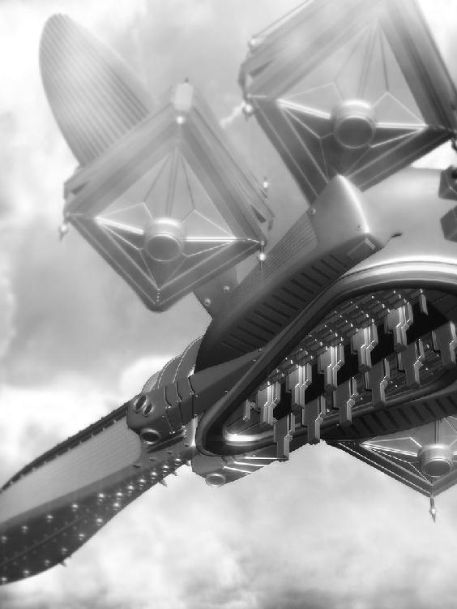
「トルフ、降下！」
開け放たれたハッチから入り込む風が撫でるのは、美しい金の髪。
亀裂を捉える瑠璃色の瞳には確固たる意志があり、身に纏った深紅の騎士服はほっそりとした体を上品に引き立てて実に良く似合っていた。
フェアルージュが剣主、ネムリー・マーネルの声と共に、ローザメア号から次々と飛び出す鎧達。
６騎のトルフ級弦奏鎧が街に降り立つや、ネムリーが動く。
翳された手から発せられるかの如く広がる魔が波状を描き、弦奏鎧とその操り手を包めば、全てはネムリーの指揮の元、一糸乱れぬ陣形を描いた。
「ネムリー・マーネルの名の元に、蕾の陣、アルメリナの形！」
ネムリーが宣言すれば、トルフ達は即座に亀裂を取り囲むように並び立ち、ざんっと水音がして周囲には円を描くかの様に黒海の飛沫が持ちあがる。
それは黒水の中でも懸命に耐えるアルメリナの蕾を思わせ、かと思えばその健気な印象はすぐさま生き生きとした活力に包まれる。
「開花！」
剣主の号令の元に、弦奏鎧が動いた。
６騎のトルフが次々に剣を突き出したかと思えば、一瞬の後には円を描く刃によって貫かれる亀裂がある。
切っ先から迸った黒水が花弁の様に広がって、それも刹那の事、次には亀裂は跡形も無く消え去り、トルフ達が剣を鳴らせば、その痕跡もニトクリスの鏡面の向こうへと流れ去る。
ネムリーの指揮と騎士達の鮮やかな断ち筋に、その光景を見守っていた人々の口からは感嘆の声が漏れるのだった。
「は～、緊張したわね～」
書斎で一人になれば、押さえていたものをどっと吐き出して脱力のネムリー・マーネル。
剣主の役目にも慣れて来たこの頃だったが、やはり黒海を前にすると緊張もする。しかし頑張った分こうして一人になった時ふと充実感を覚えて幸福な気持ちになるのもまた事実で、仕事の後疲労と共にやって来るそれを噛み締めるのも今ではネムリーの楽しみの一つだ。
「これで部屋に返った時、良い子良い子って存分に褒めてくれる係が居るともっと良いんだけど......」
等と呟いてみるネムリーだったが、そう言う係を引き受けてくれていた兄はフェアルージュを発ち巡業の旅へと出てしまった。
無い物強請りをしても仕方が無いので、ネムリーは手の届く場所に飾ってあったぬいぐるみを抱きしめて、ほうっと息をつく。
メルディーノでお迎えしたぬいぐるみ達は、兄ボルダナが残して行った操り人形と共に、今ではネムリーの頼れる相棒なのであった。
「えーっと、手紙手紙......っと。あら、プランシューネから届いてるじゃない！」
堅苦しそうな手紙は全部脇にどけ、ネムリーは満面の笑みで友人から届いた封筒を取り上げる。
鼻歌を歌いながら封を切れば、中から出て来たのはいつもと違う印刷された文字。
「えーっと、なになに......ネムリー様へ......」
ご活躍の噂はメルディーノにも届いています。お元気そうで何よりです。
今日の手紙、いつもと違った趣なので驚かれたでしょうか。
実は最近父からお古のタイプライターを貰ったので、この手紙はそれで書いているのです。
これがなかなか面白い玩具で、こんな他愛の無い手紙であっても、何だか立派な文章を打ち込んでいる気になってしまいます。
ところで、例の雑誌読みました！
写真、とっても可愛く映っていて、こんな人と友達なんだと思えば誇らしい気持ちです。
「まぁ、プランシューネったら。文章まで何だか硬くなっちゃって、タイプライターか～、確かにちょっぴり面白そうな道具ね」
確かうちにもあったっけ、後で引っ張り出してみようかしら、等と思いながら、プランシューネからの手紙を読み耽るネムリーである。
一枚二枚と長い手紙を捲っていると、思い出されるのはメルディーノでの友人達との日々。
ネムリーは手紙の向こうから湖の波音を聞いて、懐かしさにふっと笑み、胸一杯になる切ない気持ちにほうっと息を吐く。
大事に手紙を畳んで封筒に入れた後、ネムリーは暫くぬいぐるみを抱いて椅子の上でぼうっと天井を眺めていたが、やがて思い付きで飛び上がると、受話器を取り上げる。
「この時間、リズは屋敷にいるかしら？」
どきどきと胸を弾ませながら、ネムリーはコール音に耳をすませる。
「やっほーリズ、元気？」
「わ、ネムリー！ うん、元気......だよ......っ」
受話器から聞こえた可愛らしい声に、ネムリーは笑顔になって、それから言葉とは裏腹に元気無く萎んで行くリズベルルの声にあれれ？ と首を傾げる。
どう聞いても元気じゃないわ!? と思いつつも、こんな事は初めてなので戸惑うネムリーであった。
何かあったのかしら、と心配しながら、ネムリーはリズベルルの声色を慎重に確かめる。
「そう言えばネムリー、雑誌見たよ！ ジンに見せたら、ネムリーが一番可愛いって言ってた！」
「やだ、ジンに見せたの!? 恥ずかしいわ......でも、ふふ、ありがとって言っておいて」
「うん！ あれって続きは出ないの？ あ、もう撮ったとかっ!?」
「う～ん、是非専属モデルに！ とか言われてるけど、私別にモデルじゃないし。剣主だし。その辺、はしゃぐのもみっともないじゃない？ 一回限りにしようかな～って思うんだけど」
「えーっ!? 勿体無いよっ!!」
「じゃあ、次はリズとプランシューネも一緒に撮られてくれるんなら考えるけど」
「う～、それはちょっと......」
「でしょ～？」
他愛の無いお喋りに花を咲かせつつ、ネムリーは確信を深めて行く。
何だかリズの声に張りが無いと言うか、元気に欠けると言うか......やっぱり何かあったに違いないと思えば友人として放っておける筈も無く、ネムリーは尋ねている。
「リズ、何かあった？」
「え、あの、あの......」
と、ごにょごにょと呟くリズベルルの言葉にネムリーはなぁんだと一先ずは安心して、次にリズベルルの口から飛び出た声には驚愕する。
「私、失恋しちゃった」
「......は？」
ごほんごほん、と咳払いのネムリー。いやいや、咳払いする所じゃ無い。悪いのは喉じゃ無くて耳。ゴミでも入ったかしらと頭を傾けて......ネムリーはもう一度尋ねる。
「えーっと、リズ......なんて言ったの？」
「だから、失恋......しちゃったんだよ～っ」
電話越しの声が震えたかと思えば、ずっと我慢していたのか、うわーんと泣き出すリズベルル。
気紛れで電話した筈が、大変な事になってしまったぞとネムリーはおろおろして、席を立ったり座ったり、髪の毛をくるくる指に巻いたり解いたり、大慌てでリズベルルを宥める。
「ちょっと、ちょっと、リズってば！ ど、ど、ど、どう言う事なの？ 何があったの？ 落ち着いて話して......いや、勿論辛いのなら話さなくても良いんだけどでも、話す事で整理できる気持ちと言うものもある訳で、ともかく信じられないわっ!!」
リズベルルの想い人と言えば、ノルアード様。
あのノルアード様がリズを嫌いになるなんてある筈無い！
とすれば、他に原因がある筈であって、それにしても失恋とはどういう事なのか、ネムリーはごくりと喉を鳴らして耳を澄ます。
「だから、ノルアードが、婚約で、ちゅーして、失恋なの～っ」
えぐ、えぐ、と喉を鳴らすリズベルルの言葉を整理するなら、ノルアードはずっと婚約者がいる事を隠していて、それはリズベルルも知っている昔の友人で、二人がキスしている所を目撃してしまったリズベルルは大失恋。
何だか大変な事になってるーっ!?
と大混乱のネムリーを、リズベルルの次なる言葉が拍車をかける。
「ヴィルフォーナ、居なくなっちゃうし、戻ってこなくて、私もうどうしたら良いのかわかんないよ～っ!!」
え～っ!? と目を見開いて卒倒しかけたネムリーはどうにか堪え、しかしそれには納得して、何故ならヴィルフォーナはリズベルルとノルアードが結ばれる事を前提に今まで動いていたのだから......とはネムリーの推測でしか無いのだが、今回の騒動がその裏付けとなったとも言える。
つまり、リズベルルが失恋した今、ヴィルフォーナが彼女に従う根拠が消えてしまったと言う訳だ。
と言う事は、ノルアード様の婚約は事実!?
いやいやいや、冷静になるのよ、ネムリー・マーネル......だってあのノルアード様よ？ 隠れて婚約者と愛を育んでいたとか、無理無理無理、そんな事出来る様な人じゃないわ。
だってノルアード様は、傍目から見てもリズベルル一筋だったじゃないっ!!
「えーと、こほん......良い、リズ。それ、何かの勘違いよ」
「勘違いじゃ無いもん！ ちゅーしてたもん!!」
「うーん、リズの事を信じない訳じゃ無いけど、きっと何か理由があったのよ」
「理由あっても普通ちゅーしないでしょ！ 好きでも無いのにちゅーしないでしょっ!!」
「う～ん、ノルアード様もそのレイルって人も、あんまりそう言う事に頓着しないんじゃない？ 好きでも何でもないから出来るって事もあるわよ。うん」
「ノルアード、私にはちゅーなんてしてくれた事ないもん！ レイルさんが特別なんだっ!!」
「う、う～ん......」
電話の向こうで泣きじゃくるリズベルルに、ネムリーは困り顔の一方、ちょっぴり赤裸々に叫ぶリズベルルを可愛く思っちゃったりして......。
ともかく、ここは冷静になって貰う為、ちょっと厳しめに行く必要があるかもしれない、と咳払い。
「えーっとね、リズ。とにかく落ち着きなさい。今、リズは感情が高ぶって冷静に考える事が出来ない時期なのよ。判るわね？」
「う......うん......」
「大体、ノルアード様はまだリズのものじゃ無いんだから、レイルさんに盗られてしまっても仕方が無いわ。そうならない様に、普段から好き好き～って主張しなくちゃいけないのに、リズはそう言う事を怠っていたんだから、これは貴女の落ち度よ」
「で、でも、だって......」
「でももだっても無いの。まぁ急に態度を変えても不自然だし、もしかしたらもう手遅れかもしれない。だからね、リズ。まずは事の真相を確かめなさい」
「ことの......しんそー......」
そう、と見えるはずも無いのに電話の向こうの相手に向かってネムリーは深く頷いて。
「ノルアード様の婚約が事実かどうか、きちんと確かめるの。誤解ならそれで良いし、事実ならそれを本人の口から聞き出した後泣きなさい。私が思うに、それが解決すれば自ずとヴィルフォーナは戻って来る筈よ」
「そ、そうかな......？」
「そう。ほら、判ったら涙を拭いて。しっかりなさいっ！」
「う、うん！ 判った。私、ノルアードに聞いてみる！」
よしよし、それで良いのよ、とほっとしつつ頷いて、ネムリーはリズベルルにしっかりねと念を押し受話器を置いた。
さて、何だかびっくりするやら慌てるやらで疲れてしまったが、此処はリズベルルに先んじて事実をノルアードから聞き出すべきか......と電話を見つめて悩んだ後、結局それは控える事にするネムリーである。
これはリズベルルとノルアードに訪れた大きな試練。これをどう乗り越えるかで、二人の未来は変わるのだ。
「頑張るのよ、リズベルル......っ！」
と遠くシェラダンに居る友を応援し、それからネムリーはふと思う。
これって、ジンはとばっちりよね......。
ヴィルフォーナの騎士たる魔人の事を思い出し、気の毒になるネムリーであった。
ネムリーの励ましの言葉に勇気づけられ、リズベルルは受話器を置くと涙で濡れた目をごしごししてぎゅっと拳を握る。
そうだ、ノルアードを問い質そう。いつまでもうじうじしてても仕方が無い。
婚約は本当の事なのか、レイルの事が好きなのか、どうして黙っているのか、全部真正面から聞き出して、それですっきりするべきなのだ。
そう思えば一瞬心は軽くなり、あれからずっとずきずき痛んでいた心のしこりも和らいだ。
けれどやっぱり不安は残っていて、もしリズベルルにとって最悪の答えが返って来た時、どんな顔をすれば良いのだろうと悩んでしまう。
祝福......しなくちゃだよね。またまた眼に滲んできた涙をごしごしごしと拭っていると、玄関の方で音がして、慌てた様子のジンがやって来る。
無理に笑顔を作って振り向いたけれど、やはり不自然だった様で、ジンは驚いた顔をしてリズベルルの顔を覗き込んだ。
「どうした、目が赤いぞ......何があった」
「な、なんにも？ ゴミが入っただけ」
指で瞼を持ち上げて、ほらねと見せるリズベルル。ジンは納得のいかない顔をしていたけれど、それ以上追及しては来なかった。
それよりも、何だか慌てていなかった？ と話を逸らす為に尋ねれば、ジンはそうだそうだと頷いて、手にした紙袋を掲げて見せる。
「街でおっちゃんに貰ったんだが......見てみろ、リズベルル」
「な、なにこれ......カビ臭い......」
「キノコの種菌だ......」
「......キノコのたね......」
袋の中には、何だか白いふわふわ......菌糸？ ......に包まれた指先大の木片がころころと沢山入っているのだった。
それを一つ摘まみあげ、ジンは言う。
「これを穴の開いた丸太にねじ込んでその辺に転がしておくと、驚くべき事にキノコが生えるらしい」
「はえる？ キノコが？」
ぽかーんと口を開けて尋ねれば、神妙に頷くジンである。
別にそれ程好物と言う訳でもないけれど、丸太から次々にキノコが生えて来る様を想像すれば、リズベルルもわくわくした。
「でも丸太ないよ」
「あ、そうか......！ しまったな～......」
「外の倉庫にある......かも？」
「確かにあそこにならありそうだ。ちょっと、探してくるっ!!」
と言うや否や紙袋片手に飛び出していくジン。丁度二階からたたっと降りて来たアオゾラが、なになに～？ とその後を追う。
その背を見送りながら、でも丸太って、綺麗な奴じゃないと駄目なんじゃないの？ 消毒とかしなくて良いの？ キノコの栽培ってそんなに簡単な訳？ とか疑問に思うリズベルルであったが、何だか追いかける気にはなれず、何よりノルアードに問い詰めるのが先だと思い出し、のろのろと支度を始める。
念の為髪を整え直して、鏡を覗いた所で、何の前触れも無くリズベルルの頭の中でずがーんと天啓が閃いた。
問い質すだけじゃ、駄目だ。
そうそうそうだよ！ この一週間、悩んで泣いてかじかじして、いっぱいいっぱい考えた！
もう、こんな想いをするのはたくさんだ。この機会にノルアードとの関係を、変えてしまおう。
直球勝負、告白する......。
そう決めてしまえば、心はさっきよりもずっとずっと軽くなり、それどころか勇気もめらめらと沸いてきた。
「言おう、好きだって......私の気持ち、ノルアードに伝えよう!!」
気合い注入とばかりに頬を叩き頷いて、リズベルルは玄関から一歩足を踏み出すのだった。
「うーん、しかし元気の無いリズにこんな面倒事を頼むのも気が引ける......大体、婚約者のふりをしてくれだなんて、ちょっといきなり過ぎでは無いだろうか？ こう、段階を踏んで、まずはお友達から......」
「往生際が悪いわね。何なら私が相手役をしても良いって言ってるじゃない」
「冗談を言うな。それこそ余計な誤解を生んでしまうだろうが！」
「だったらぐだぐだ言いなさんな。大体ね、ノルアード。私は貴方の為を思って言ってるのよ。この事を切っ掛けに、リズとの関係を進展させれば良いじゃない」
もう何度似た様なやり取りを交わしたか判らない。
レイルの運転する車に揺られリズベルルの屋敷へと向かう道すがら、ノルアードはこの期に及んでぶつぶつと気の引けた言葉を漏らしていた。
しかしそれも仕方の無い事。何せ奥手なノルアード、ふりとは言えリズベルルに婚約者になってくれだなどと言う日がこんなにも突然来ようとは、動揺するのも無理は無い話だ。
森の中に入っても尚ぐずぐずと呟くノルアードに、これ以上何を言っても無駄だと思ったのかレイルは無言で、それがますます車内の緊張を高めて行く。
と、その車は急にスピードを落とし、停車したかと思えば、レイルは窓から顔を出して、向こうからとことこやって来る人影に声をかける。
「はぁい、リズ。丁度良かったわ」
......リズ！
その人影がリズベルルその人である事を認め、ノルアードはぎゅっと全身に力を入れた後、深く深く深呼吸し、レイルと共に車を降りた。
ええい、漢を見せろ、ノルアード！ と自分を叱咤し、リズベルルを正面から見つめて。
「リズベルル！」「ノルアード！」
「聞いて欲しい事が」「あるんだけど！」「あるのだが！」
開口一番重なった声に、ノルアードもリズベルルもぐっと声を詰まらせ、おずおずと相手を見つめ、にへらと笑ってみたりして。
「り、リズから......どうぞ......」
「う、ううん......ノルアードから話して」
あ、そう？ こっちから？ まぁ後回しでも良いんだけど......そこまで言うなら、ね......？
もごもご呟いた後、ノルアードはすっかり勢いを失った声でぽつりと呟く。
「え～っと、聞いて欲しい事と言うのはその～......ある縁談の話であってだなぁ」
と、遠回しにノルアードが言えば、リズベルルの顔に亀裂が走った。
ぴき、と音がしそうな勢いで笑顔が割れ、何だか冷たい表情でぷいっと顔を背けてしまい、その仕草がまた可愛らしく、ノルアードは心を奪われつつも咳払い。
リズベルルはそんなノルアードといつでも笑顔のレイルを能面の様な表情で交互に見やり、平坦な声で言った。
「婚約の話でしょ。なんだ、それ、言いにきたの」
「え、し、知ってるのか!? ま、まさかもう噂になっているとか......」
「言わなくても判るんだから。べつに良いけど！ おしあわせにー」
え、ちょ、と慌てに慌てるノルアードに、眉を顰めながら口を尖らせるリズベルル。
此処まで突き放されてはノルアードも黙ってはおらず、反論を始める。
「や、違う！ それは誤解なのだ！ 私は決してこの縁談に前向きな訳では無くだなぁ、そもそもこれはジャルバン殿が人の話を聞かず勝手に......」
「ふーん。でもま、美人で優しくてノルアードにぴったりだと思うよ、レイルさん。うらやましー」
「いやいや、なんでレイルまで出て来るんだ。私が言っているのはコルネリー嬢との婚約の話であってだなぁ」
「へっ、コルネリー!? まーびっくり！ それって浮気じゃないっ！ ノルアードの浮気ものっ！ ばかっ！ ろくでなしっ！」
「な、なんでそこまで言われねばならんのだっ！ 俺はだなぁ、どちらかと言うと被害者であって～」
「は～!? レイルさんと結婚するんでしょうがっ！ その上コルネリーもだなんて、欲張りノルアードっ！ かじるよっ!!」
「レイルと結婚って、一体何の話をしている！ 男と結婚するつもり等これっぽっちもあるものかっ！」
「へ～!? 男同士だと結婚できないんだ？ 何で？ 愛さえあれば何でも良いんじゃ無かったの!? うそつき、うそつきノルアードっ!! って」
散々叫んだ後になって、先程のノルアードの言葉はリズベルルの脳にようやく到着。
その意味を飲みこんだ時、ぽかーんとしたリズベルルの顔は驚愕でいっぱいになる。
かこん、と口を開け、ただ叫ぶ。
「オトコおぉぉぉぉぉぉぉぉぉっ!?」
その時であった、リズベルルの脳裏に甦る懐かしき日々。過去の思い出。
宝石虫を探して森の中を進む探検隊。その後ろにちょこまかついて行くリズベルルは、不意に転んでしまって......。
その時、リズベルルの悲鳴を聞き付けて真っ先に駆けつけてくれた線の細い少年。
優しげで、紳士的で、美しい顔立ちから女の子にも人気があったあの男の子......。
リズベルルも懐いていたあの人、確か名前は、レイルランド。
「レイルって、もしかしてレイルランドお兄ちゃん!?」
「最初からそう言ってるじゃない。リズってば今の今まで気付かなかったの？」
にこにこ笑顔のレイルに、リズベルルは体を戦慄かせ、そして、胸の奥でぶちっと何かが音を立てて切れた。
すぽーんと、さながら中身がぎゅうぎゅうに詰まったビンの蓋を景気良く開けるかの如く、リズベルルの胸に溜まりに溜まった澱みがそれで勢い良く外に飛び出して。
「はぁ～っ!?」
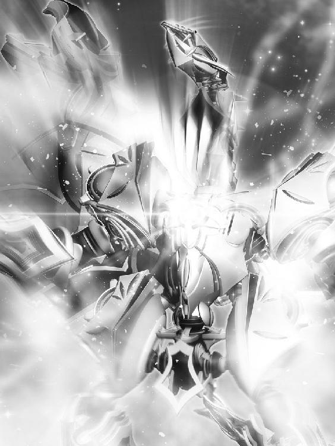
眩いばかりの閃光と共にリズベルルの後ろに出現したのは、何か巨大な質量を持った影。
どかーんと爆発音を響かせて現れたそれは、傍に立っていた細い木をなぎ倒し、風を呼び、矢の様な光を周囲にまき散らしたかと思えば、ゆっくりと首をもたげて雷鳴の如く鳴き叫ぶ。
これまでさっぱり姿を現さなかった弦奏鎧、白銀の竜ヴィルフォーナが、突如としてそこに現れていた。
「れ、レイル！ レイルランドお兄ちゃん!!」
ぷるぷる震えながらリズベルルはレイルを指差して、信じ難い物を見る様な表情で言えば、レイルはうふふと笑みを浮かべて。
「やぁねえ、今頃思い出すなんて。昔はあんなに懐いてくれていたのに」
「び、美人になってるーっ!!」
「うふふふふ」
あわわわわ、と震えるリズベルルに、レイルはぱちりとウィンクを飛ばし、傍で呆然と立ち尽くすノルアードは、爆音と共に現れたヴィルフォーナを無言で見上げていた。
すると、屋敷の方から大急ぎで駆けて来る人影があって、それは慌てた様子のジンと、おまけのアオゾラであった。
「おーい、何か大きな音が聞こえたけど......って、ヴィルフォーナ、戻ったのか!?」
木を薙ぎ倒して立っているヴィルフォーナをびっくりして見上げるジンは、何があったと言う様な顔で三人を見て。
がっくりと肩を落とし、リズベルルは倒れた木を指差して、ぽつりと言うのである。
「ジン、これで丸太、作れば良いんじゃない」
戸惑いながらも頷くジンのみならず、その場に居た皆が殆ど同じ事を考えた。
......何が何だか判らない......。
「ノルアードとコルネリーが婚約～っ!?」
屋敷までやってきて、一先ず落ちついてノルアードの話を聞き終えたリズベルルはそう叫んだけれど、もう前みたいに悲しくなったりイライラしたりはしなかった。
何だかヴィルフォーナの起こした爆発と一緒に、胸に閊えていたものもが全部何処かに吹き飛んだようで、ノルアードの話は不愉快どころか愉快ですらあったのだ。
「それで、どう断れば良いのか迷っていてな。レイルが言うには別な婚約者を連れて行けば誤解も解けて、話も丸く収まるだろうと言う訳で、つまり......」
「つまり？」
「リズに......その、一日限りの、だな。あ～、私の婚約者役をして欲しいと、思いまして......」
「はわ～」
気の抜けた様な声を上げて、リズベルルはふらーっとその場に倒れ込み、かと思えばしゃきりと立ち上がって、顔を真っ赤にさせて呟くのである。
「でも、私なんかで務まるんでしょーか。説得力、出るんでしょーか」
「あら、ヴィルフォーナの封印を担う騎士ともなれば、剣主の相手に相応しいと思うけど」
レイルが微笑みを浮かべてそう言えば、ジンも頷き同意する。
「ああ、これ以上無い組み合わせだ。なぁ、ノルアード」
「う、うむ！ こんな事につき合わせて申し訳ないとは思うのだが、どうか引き受けてくれないだろうか、その～......婚約者のふりを」
「ふ、ふりねっ！ それなら良いよ！ ふりだもんねっ！」
「う、うん。ふりだから。何も本当に結婚する訳では無いのだから。ね。うん」
「あはは、ふりだもんね」
「はっはっは、あー、ところでリズ、何か話があったのでは無かったか？」
「え、ひゃ、しょれはもう良いんです。なし、なし」
「そ、そうか？」
「う、うん。そう」
はっはっは、と声を重ねてぎこちなく笑うリズベルルとノルアード、段々とその声はトーンを下げて、二人揃ってふぅ、と息を吐き、一件落着とばかりに肩の力を抜く。
「あ、あぁ～......っ!!」
と、気を抜いた瞬間この一週間の自分の振る舞いを一挙に思い出し、頭を抱えて呻くリズベルルであった。
深刻だったあれや、悲観していたそれ、何もかもが今になってみれば恥ずかしい。滑稽だ。極まりない。
私は一体、何をしていたのでしょうか......。
それにしても、落ち着いてみれば気になるのはレイルである。どこからどう見ても美人のお姉さん。あの格好良かったレイルランドお兄ちゃんに一体何があった訳？ とリズベルルは困惑する。
と、突如として頭の中に再生されるジャルバンの言葉。
赤面して逃げ出すコルネリーを差して、ジャルバンは言ったものだ。
どうにも男が苦手の様でな。レイル君に家庭教師に付いてもらったのも、あれをどうにか出来ないかと期待しての事だったのだが......。
あれはつまり、外見はすっかり女性のレイルを傍に置く事で、コルネリーの男性恐怖症を治そうと言う事だったのだっ!!
「あ、あぁ～......レイルさんが男の人だったなんて......」
「うふふ、心は乙女なのよ」
「俺も聞いた時は驚いたけど、てっきりリズベルルは知っているものだと思っていたなぁ」
「ま、この格好では気付かないのも無理は無い。リズベルルの場合、抜群の記憶力が仇となってレイルの今の外見と昔の記憶とが一致しなかったのだろう」
「あの美少年なお兄ちゃんが、美人のお姉さんになってるだなんて、判る訳ないよ！ 何で言ってくれなかったの!?」
「いくら友人とは言え、女性の外見をとやかく言えるものでは無いだろう」
「や、男なんだろ？」
「心は乙女よ」
と、男三人(？)の間では何やら和やかな空気が展開される。
リズベルルはぶり返す衝撃に目をぐるぐるさせ、それからはっと気付いて怖々と尋ねた。
「で、でも......二人、夜なかにちゅーしてたよね......」
「あ、ち、違うぞ！ あれはレイルが勝手に......っ！ と言うかリズ、見ていたのか!?」
「あらあら、覗き見なんて駄目よ、リズ。それにあれは、ほんの冗談」
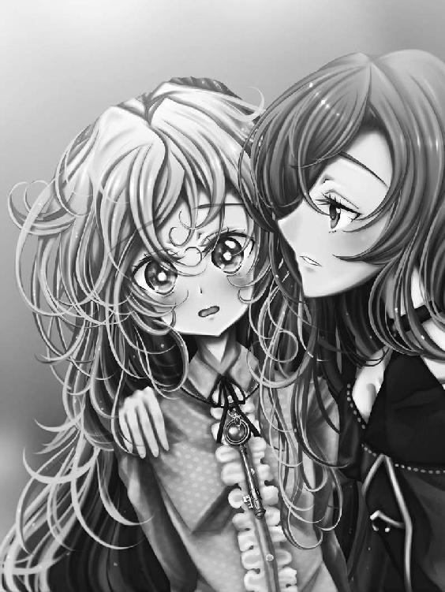
言うや否や、レイルはしなやかにリズベルルへと体を寄せて、耳のあたりに軽く口付ける。
目を見開いて見る見る真っ赤になるリズベルルを、こちらは怒りで赤く染まったノルアードが、レイルから庇う様に引き寄せた。
「な、何をするレイル！ 冗談でやって良い事と悪い事と言うのがあるだろうがっ!!」
「私、どちらかと言うと女の子の方が好きなの。こんな格好してると誤解されがちで困っちゃうのよね」
「倒錯し過ぎなのだお前はっ！ ええい、リズ！ これからレイルと二人きりになるのは禁止だっ！ こいつは麗しい外見の野獣だぞっ!!」
威嚇する様に唸るノルアードを、悪者にされたレイルはそれでも愉快気に眺めていて、ジンも苦笑しながらその様子を見ている。
ノルアードの背中にくっついて身を隠しながら、リズベルルはぽつりと呟く。その言葉は、ジンとレイルには届かない。
「......うん。言う通りにする。私、ノルアードの婚約者だから」
その呟きを辛うじて聞きとったノルアードは、虚を衝かれた様に振り返り、そんなノルアードをリズベルルは笑顔で見上げて、舌を出す。
声なき声で、その唇が呟いた。
ふり、だけどね。
「成程、リズベルルがそんな誤解を」
「もー、ジンってば鈍いんだからっ！ ちゃんとリズの事見ていてあげなきゃ駄目じゃないっ！ あの子ってばすっごい悩んで、泣いて私に相談して来たんだからっ！」
「うーん、面目ない」
ジンは頭をかきつつ、こっそりと窓から庭を覗いて、そこで談笑しているリズベルル、ノルアード、レイルランドの様子を眺め、ふっと笑みを浮かべる。
どうやら僅かにあったぎこちなさも薄れ、すっかり昔の仲に戻った様だ。リズベルルもレイルと楽しげに話しこんでいて、そのうちノルアードの方が嫉妬し出すのではと思う程べったりである。
この一週間、リズベルルはそれはそれは悩んだ事だろう。それに気付けなかった自分が不甲斐なく、またジンはジンで思い悩んでいた事を振り返れば、今となっては笑い話の様だが、ネムリーの言う事に肩を竦めるしか無い。
「何にせよ一件落着......いや、本番はこれからか」
明日、予定通りジン達はリィガイムへ再び赴く。
上空の亀裂を断つ段取りは、既に頭の中に浮かんでいた。後は実戦でそれが出来るかどうかに掛っている。
ジンの緊張を感じ取ったのか、電話の向こうのネムリーがはっと息を飲んで、そして勇気づける様に言うのである。
「貴方なら出来るわ、ジン。フェアルージュを救ってくれたように、リィガイムの亀裂もきっと......」
「ありがとうネムリー。ま、今回はぎっくり腰が原因ってのがいまいち締まらないけどな」
「ふふ、ジンってば。ところで、あの～、雑誌、見た？」
と恥ずかしそうなネムリーの声に、ジンは微笑ましい気持ちになって、電話の向こうでもじもじしているネムリーを思い浮かべながら、勿論と頷く。
「見たよ、様になっていたじゃないか。記事も立派だった」
「そ、そう？ は～、良かった。皆が褒めてくれるの、お世辞じゃないみたいね」
そんな事を心配していたのか、と笑えば、ネムリーはちょっぴり拗ねた声色で、皆褒めちぎるんだもの、疑心暗鬼になっちゃった、との言葉が返って来る。
何となく雑誌の発売日にそわそわと落ちつかないダルカスやグダード達の姿が目に浮かぶようで、ジンは思わず笑い声を上げた。
そうして、ネムリーはしっかりと剣主として街の皆を引っ張っているのだなと改めて思えば、それはジンにとっても勇気となるのだ。
「お世辞じゃ無い。俺が保証する」
念を押す様に、本心からもう一度ジンは繰り返す。
準備万端、万全の体制でリィガイムを訪れた一行であったが、またしても渋るノルアードに今度はリズベルルまで同調して、その足は一向に進まない。
レイルとジンで二人を半ば引きずる様にドレッド邸へ連れて来たものの、これでは前回の二の舞か、より酷い事になりそうで、ジンとレイルの二人は早くもうんざりし初めていた。
「二人とも、何の為にリィガイムに来たと思っているんだ」
「そうよ。面倒事はさっさと済ませて、空の亀裂の対処に移りましょう」
呆れ顔のジンとレイルが正論を唱えれば、ノルアードもリズベルルも勿論それは判っているけれどと前置きして、往生際の悪い台詞を口にする。
「ま、まて！ やはりこの作戦......や、縁談の方の話だが......根本から間違っている様な気がしてならんのだ！」
「そ、そうだよ！ 婚約者のふりだなんて、ちょっとやり過ぎだし恥ずかしいしっ」
「も、もっと洗練された解決策がある筈なのだっ！」
「なのだっ!!」
「だったら初めにしっかり断っとけば良かったろうが。元はと言えば、お前が流されて有耶無耶にしたのがいけないんだ。こう言う事は、その場ですっぱり断らないと」
「ぐう......っ！ ジンめ、人の気も知らないでっ！」
「だったらふりなんかじゃなくて、本当に婚約発表でもするか」
いじけた様に睨んでくるノルアードの耳元で、お前の気などお見通しなのだとばかりにジンが囁けば、それで剣主は静かになる。
全くこの期に及んで何を躊躇っているのか知らないが、今一歩踏み込めない所等ノルアードとリズベルルはそっくりで、ジンからすれば実にお似合いの二人なのだ。
それが証拠に、じたばたと抵抗を続けていたリズベルルも、ノルアードが大人しくなった途端に観念したのか押し黙り、ようやくジャルバンが待つ部屋まで辿り着けば、今度はそこから何やら言い争いが聞こえるのでジンとレイルは顔を見合わせて。
「お父様ったら、信じられないわっ！ そんな大事な話、今の今まで私に黙っているだなんてっ!!」
怪訝な表情で扉に手をかけようとしたのも束の間、ばん、と勢い良くそれが開き、ぶつかりそうになった所をジンは慌てて飛びのいて、代わりに突っ立っていたノルアードとリズベルルが二人して顔をぶつけて犠牲になった。
「むにゅ」
「ぐべ」
「きゃ、きゃあっ！ ノ、ノルアード様、リズベルル!? 先生に......ジン様っ!?」
部屋を飛び出してきたコルネリーは、顔を押さえて呻く二人に気付き、それからレイルとジンの姿を見て状況を察するや、見る見る顔を赤らめる。
おろおろとしながらリズベルルの頭を撫でて何度も何度も謝って、ノルアードにはたどたどしく言葉をかけ、最後には俯いてぎゅっと目を瞑る。
「落ち着きなさい、コルネリー。二人も大丈夫だって言ってるわ」
「う、うん......全然へいき」
「うむ、問題無い」
「それより、君の方は大丈夫か。随分慌てていた様だが、何処かぶつけたりは？」
「い、いえ！ あのあのあの、どどどどこもっ！ ああ、ごめんなさいごめんなさいっ！」
壊れたレコードの様に擦れた声であたふたするコルネリーにジンは余計だったかなと頬をかき、そうしていると部屋の奥からゆっくりとジャルバンが顔を出す。
腰を痛めぬ様用心しながら皆を見回して、何だかすまなそうな、彼にしては弱々しい笑みを浮かべる。
「おお、着いていたのか。まぁ入ってくれ」
いつもの覇気は何処へやら、元気を欠いたその言葉に一行は怪訝な表情になりながらも、部屋に足を踏み入れる。
「おお、そうか。ヴィルフォーナは無事戻ったかっ！」
その知らせを聞くや、ジャルバンは満足そうに腕を組み、がっはっはと天井目掛けて大声で笑う。
あまりの声量に一同がびくりと体を強張らせれば、それがまた愉快だったのかジャルバンはますますボリュームを上げた。
「これで滞りなく作戦を進められると言うものだな！ して、一体ヴィルフォーナは何が原因で姿を眩ませていたのだ」
その言葉には、ノルアードもリズベルルもこてっと首を折って。
「さぁ～......？」
ジャルバンが疑問に思うのも当然で、もしレイルが推測した様に土地の相性が関係しているのなら、このリィガイムではヴィルフォーナが飛行できないと言う問題も考えられ、呼び出した途端にまた消えてしまうのではと不安になるのも無理は無い。
ノルアードとリズベルルらはヴィルフォーナ消失の原因と目される要因、またヴィルフォーナが動く事の根拠、即ちネムリー曰く「愛で動いてる！」論を知らないので、今度の消失事件はレイルの憶測がある意味的を射ているのではと悩んだり、あるいは全く何の前触れも無い現象だったのかと首を捻っている様だが、ジンにしてみればすっかり不安は解消されたも同然。此処は一つ口を挟んでおくかと声を上げる。
「その事であれば、ご安心を。ヴィルフォーナが消える事はもう無いでしょう」
「うむ、ヴィルフォーナの騎士殿がそう言うのならば信じよう！」
さっぱり根拠の無いジンの言葉も、胸を張って言えばそれなりに良く聞こえ、ジャルバンはすっかり信じてご満悦。
そこでジンはこほんと咳払いし、ノルアードの脇を肘でつつく。そろそろ......ある意味では本題の......例の話に移るべきでは無いかと促せば、ノルアードは緊張した面持ちで小さく首肯して。
「あ～、時にジャルバン殿。その～、例の縁談について少々お話したいこ」
「すまぬっ！」
ノルアードが目を見開いたのは、ジャルバンに言葉を遮られたからでも、その声の大きさにでも無く。
突然に頭を下げたジャルバンが、次に発した言葉を一瞬理解しあぐねたからであった。
「ノルアード君、君に期待させる様な事を言っておいて誠に申し訳ないのだが、あの話は無かった事にして欲しいのだっ！」
「......は？」
首を傾げたノルアードは、手を合わせて頭を下げているジャルバンと、それから真っ赤になって涙目のコルネリーを見やり。
するとつまり、何だった訳？ と肩透かしを食らったかの表情で言葉を失った。
「うーむ、あれからコルネリーに確認した所だな、なんと娘はノルアード君のファンから、ジン君のファンに鞍替えしていると言うのだよっ!!」
「お、お父様っ!!」
声にならない声で何かを叫んで父をぽかぽかと叩き始めるコルネリーは、もう茹でダコの様な有様で、目を点にしているノルアードに変わって、今度はジンが驚きの声を上げ、リズベルルはころころ笑って。
「コルネリーって、ジンのファンなの？」
「確かにノルアードと言うよりは、ジンの方ばかり見ていたかもね」
「うーむ、どうもそうらしくてな。と言う訳でジン君、どうだね。娘を嫁に貰ってはくれんか」
ずいっと顔を近づけて来るジャルバンに引き攣った笑みを返しつつ、ジンがどう答えるべきか迷っていると、これまた声にならない悲鳴を上げたコルネリーは無慈悲にも父の腰に鉄鎚を下す。
「わ、わ、わ、私は遠くから見ているだけで、幸せなんですっ!!」
悶絶する父を床に転がして、真っ赤な顔のコルネリーはそう叫び残して走り去った。
一同は呆気に取られて言葉を失くしていたが、誰とも無く深く深く息をして、思うのだった。
こっちも一件落着か......と。
そして、作戦決行当日。
２日をかけて危険区域からは住人の避難が完了し、気球を持った騎士達がそれぞれの持ち場についていた。
此処までは滞りなく準備が進み、万事が上手く行っている。
最も懸念されていた住人達の移動に関しても、むしろ不安が高まっていた事が速やかな避難に繋がり、協力的な住人達のお陰で然程の混乱は起きなかった。
何せヴィルフォーナは既にシェラダン、フェアルージュと強大な黒海を退けており、それはこの街の人々も知る所で、半ば英雄視されている存在なのだ。
皆、ヴィルフォーナがリィガイムを救ってくれると期待している。それがジンには嬉しくもあり、重圧でもあった。
「此処まで来て怖気づくって事も無いか」
強張った肩から力を抜いて、ジンがふっと笑めば、そろそろと近寄って来る気配。
振り向けば顔を赤らめたコルネリーが居て、慌てて俯く彼女にジンは目を細める。
「避難していた方が良い。万が一という事もある」
「いえ、わ、私もドレッド家の娘ですからっ」
そう言って顔を上げるコルネリーの目には、父に似た強く大きな意志が感じられ、ジンを驚かせる。
まだ紅の射したままの顔で、けれど今度は俯く事無く、コルネリーは言うのだった。
「私、去年のトゥールウ祭、行きました。トゥールウと並んで飛ぶヴィルフォーナ......本当に美しかった......。そこから降りて来られたジン様の姿を見て、私」
コルネリーは目を細め、それから言葉を探す様に何度か喉を鳴らし、結局それは唇を出る事は無く、けれどそんな彼女をジンは黙って見つめている。
懸命な声で、コルネリーは躓いた言葉を続けた。
「ぜ、絶対無事に戻って来てくださいっ！ 私、今年のトゥールウ祭、楽しみにしてますからっ！」
「ああ、期待していてくれ」
ジンが笑えば、今度こそコルネリーは紅潮し、何だか倒れそうな足取りでふらふらと歩いて行って、何とかリズベルルの所まで辿り着くと、ぎゅっと抱きつく。
リズベルルがよしよしとコルネリーを撫でながらジンに視線を寄こすので、肩を竦めて返した。
「悪い気はしない」
「ほーう、だったら縁談を受ければ良いでは無いか」
「それも良いかもな......と言いたいところだが」
ジンはふう、と息を吐いて、向こうで何やら含みのある笑みを浮かべて仁王立ちしているジャルバンをこっそりと見やり。
ジンの胸中を察したのか、ノルアードも同情する様に首を振った。
あの人の息子になるのは、ちょっと怖い......。
「気球隊の準備が済んだわ。こっちはいつでも行ける」
「おう、我が弦奏鎧、リィガイムの守りの要たるガストルフ級・オルグマトンも準備万端よっ!!」
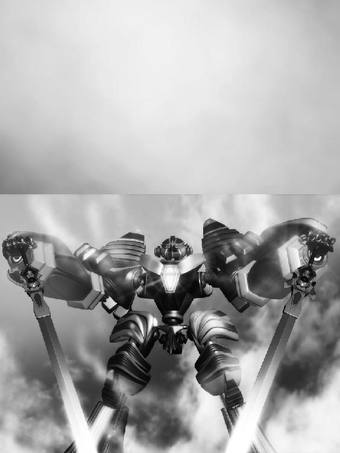
小走りにやって来たレイルが言えば、ジャルバンも豪快に笑んで背後に控える守護弦奏鎧を頷かせて見せた。
その場には、二振りの宝剣、ビルガオンの剣と聖鍵デュオメルグを携えたリィガイムの守護鎧オルグマトン、そしてトルフ級弦奏鎧達もずらりと立ち並び、万が一の事態に備えている。
ジンが失敗した時はトルフ級で街の守りを固め、飛行船を用いてジャルバンがオルグマトンと共に水門に赴き儀式を行う手筈だったが、ジャルバンが万全でない事を考えればそれは最終手段。
無論、ジンの頭に彼らが動く想定は初めから無い。
望まれたからには応える。それがジンの意気込みだった。
「どうだ、ジン」
「問題無し、リズベルル......頼む」
「はいっ！」
元気良く頷いて、リズベルルが封印の鍵を空へと掲げる。
皆が一瞬、固唾を飲んでその様子を見守った。
詩が、紡がれる。
「海を断ち、天舞う音色......今度こそお願い、ヴィルフォーナっ!!」
風が吹き荒れた。
光の帯が大地を貫き、眩い閃光が冷めた時、現れ出でたるは白銀の竜。
弦奏鎧ヴィルフォーナが、雄々しき翼を広げ、雷鳴の如き咆哮と共に降臨した。
「行ってくる」
そう残し、ジンはヴィルフォーナの腕を蹴りその胸部へと体を滑り込ませる。
リズベルルが、ノルアードが、レイルが、ジャルバンが、砦の騎士達がその姿を見送る中、ぎゅっと握った拳を胸に当て、コルネリーは願っていた。
「どうか、ご無事で......」
ヴィルフォーナが翼に燐光を灯し飛翔して、その呟きは吹き荒れた風に溶けて行く。
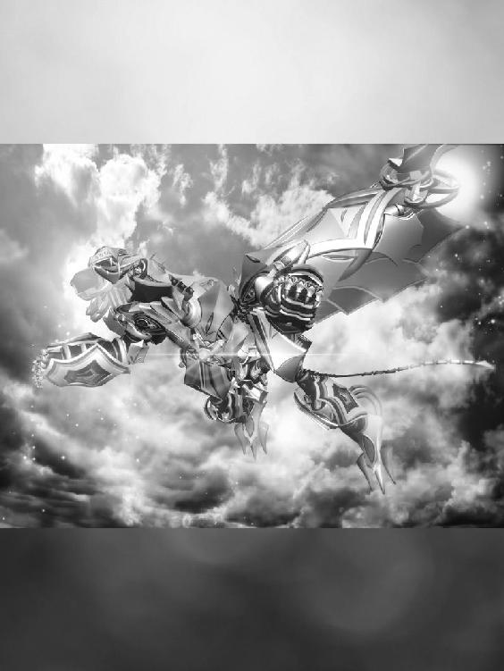
「ヴィルフォーナが、動く......」
天空より遠くリィガイムを見つめ、ミルゥが呟くと、背後から主の穏かな笑い声が響く。
隠されし庭園、ユゴスミネラ。作り物の光の下で、ミルゥは静かに振り返り、主を見つめる。
「リィガイムの亀裂が気になる、か......無理も無い、それが君の本分なのだからね」
主、エイフォンの声は穏やかだったが、ミルゥは不思議とその言葉に胸がささくれ立つ様な奇妙な感覚になり、俯いた。
ふとミルゥは思い出している。
リズベルルと会ったあの日、どうして自分は彼女に尋ねたのか。
貴女が今胸に秘めている感情......それは必要なものですか......。
あんな事を、どうして口走ったのか。
「......判らない......」
ミルゥの呟きは、音になる前に殆ど擦れ、穏やかな庭園の風に消えて行く。
まだ胸中に渦巻く感覚......あるいは、感情......その不可解な痛みに瞼を伏せながらも、ミルゥは気付く。
リィガイムの亀裂を、ヴィルフォーナが討つ事を、自分は望んでいるのだ......と。
レイルが放った信号弾を合図に、まずはゆっくりと高高度気球が放たれる。
青空に映える白い気球には簡単な重りの他にパラシュートが装備されており、撃ち落とされた場合はそれが開いて緩やかに落下する仕組みだ。
勿論、本来の用途である撮影用のカメラは搭載していないので、正に囮としての役割しか持たない的である。
それらは打ち合わせ通りタイミングを少しずつずらして次々と、街の至る所から空に上げられ、ジンはその影に隠れる様にしてじりじりと亀裂に近寄って行った。
普段の飛行速度からすると、実に緩やかな上昇で、なかなかに神経を使う作業だ。
とりわけ今日はヴィルフォーナから溢れんばかりの力を感じ、ジンは今にも全力で飛び出したくなる気持ちを抑える。
「ずっと消えていた分、力が溜まって爆発しそうなのか」
全く融通の利かない奴である、とジンは己が半身である白銀の竜に苦笑して、あるいはネムリー説を取ればリズベルルの愛とやらが深まっているのかもしれんなと地上で待つ招き主を胸中でからかった。
と、遥か頭上でぱすっと空気の漏れる音がするのを、研ぎ澄まされ、拡張された聴覚が捉える。
用心しながら視線を向ければ、一つの気球が萎み落下を初め、パラシュートが開く所だった。黒海の攻撃が始まったのだと判れば軽口を言っている暇も無く、ジンは気を引き締める。
ぱす、ぱす、ぱすと続けざまに気球が打ち抜かれ、それでジンは亀裂が何処にあるのか大体の見当を付けた。
このまま一気に上昇して貫くか......一瞬そんな考えが浮かぶが、今は堪える。
亀裂の規模が判らぬ以上確かな事は言えないが、恐らく竜の姿のまま接近したのでは決定的な一撃を与える事は出来ないだろう。
竜の尾となっているメイルレヴァンの剣では一撃必殺の威力に乏しいからだ。
では一度上空まで抜けて、巨人の姿へと変じ、落下に任せた渾身の一撃を加えるのはどうかと考えるが、これは反撃が怖い。
亀裂から射出される弾丸の威力は身を以って知っていた。出来るなら一撃も受けずに終えたいものだ。
とすれば、成功の可能性が最も高いのはフェアルージュの時と同様、竜人一体のヴィルフォーナ第三の形。
巨人の姿を元に、脚部の竜翼を展開したあの姿ならば、飛行能力を有したままメイルレヴァンの剣を扱える。
無論短所もあり、あの姿は制御が難しく純粋な飛行能力で言えば竜の姿に劣り、細やかな振る舞いでは巨人の姿よりも直線的な動きになりやすい。
竜の姿で亀裂に近づき、ギリギリのタイミングで竜人へと変ずる事が出来るかどうか、それがこの作戦の鍵となる。
無論、その前に亀裂に察知されなければ、の話だが......。
ジンは頭上に意識を集中し、次々と上がって行く気球の影に隠れて、徐々に徐々に亀裂との距離を狭めて行く。
異変は前触れも無く訪れた。
それまで勢いの無かった黒水の弾丸が、不意に数を増す。
ぱぱぱぱぱ、と雨が屋根を叩く様な音がして、水平に並んだ気球が次々と打ち抜かれた。
ジンがはっとしたのも束の間、次の波は更に強い。
頭上に円盤状の黒い影が生じたかと思えば、それは厚みを持って上下に揺れ、一帯の気球を押し潰したのだ。
拙い、と思ったのも束の間、ヴィルフォーナのすぐ真上の気球もスプリンクラーの様な黒水に巻き込まれる。囮が一掃され、気球の残骸が視界を奪う中、ジンは出力を高めて翼から生じた風でそれらを打ち払う。
静寂は一瞬。
「......見つかったかっ！」
不気味に波打った亀裂が無数の弾丸を射出したのが、ジンの目には不思議とゆっくり映るのだった。
リィガイムの空で、黒い霧が弾けた。
無数の弾丸を受けたヴィルフォーナがその靄の中に巻き込まれ、姿を隠す。
コルネリーは眩暈を感じながら、両手をぎゅっと祈る様に握り、絞り出す様に叫ぶ。
「ああ、ヴィルフォーナっ!!」
そんな彼女を、リズベルルの力強い言葉が支えるのだった。
「大丈夫、ヴィルフォーナは、ジンは負けない！」
そうして指差す先、霧散した黒水の飛沫の中から現れるのは、小さな光点。
はっと息を飲んで一同が見守る中、その光は輝きを増す。
一つ、二つ、次々と灯る光の後、黒い影の中から最後にゆっくりと現れたのは、光を纏った白銀の騎士。
ヴィルフォーナは健在である。
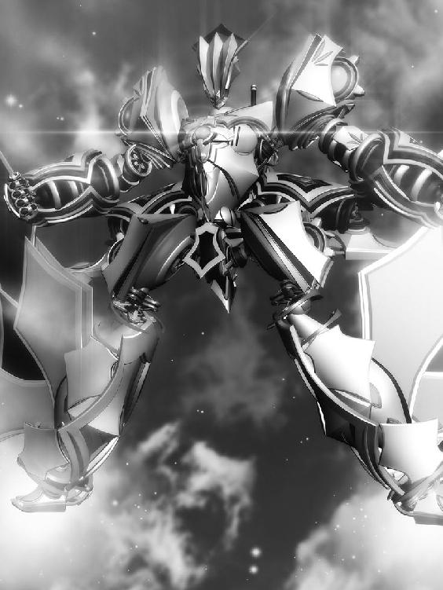
「......土壇場からの逆転、これはまたファンが増えるな」
その中で、ジンはふっと笑みを浮かべ、そして己が感覚を、魔を、ヴィルフォーナへ、メイルレヴァンの剣へ、この大空へと広げて行く。
「行くぞ、反撃だっ!!」
竜翼を広げたヴィルフォーナの脚部がごうっと唸り、淡い緑色の燐光を放つ。
唸りながら亀裂へと向かうヴィルフォーナは、ただ一直線にその禍々しき闇へと向かうのみ。
亀裂が波打ち、次々と放たれる黒水の弾丸はしかし、その行く先を阻む事など出来はしない。
「唸れ、メイルレヴァン、光の刃よ！ 我が剣となり盾となり、この身と化して敵を討てっ!!」
ジンが叫べば、ヴィルフォーナを取り巻く光点が煌めきを以って応える。
その一つ一つがメイルレヴァンの剣であり、ジンの体の延長だった。
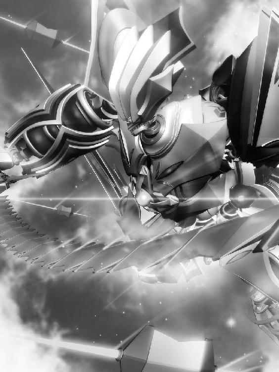
細かな刃片が組み合わさって一つの長大な剣を形作るメイルレヴァンの剣が、今その結合を解き、無数に分かたれた刀身の破片その一片一片がヴィルフォーナの周囲を取り巻いている。
散り散りとなった刀身はけれども決して秩序を失う事は無く、ジンの御する魔の糸によって繋がり、しかしそれは剣の自由を奪う様な事は無く、独立し、縦横無尽に飛び交う刃は亀裂より放たれる弾丸を阻み、砕き、蒸発させ、その凶弾をヴィルフォーナ本体に届かせない。
亀裂が空を軋ませ、一際大きな弾丸が闇深くより放たれる。
それは最早空を行く夜の先駆け。暗く光すら飲み込む様な奈落が向かって来るのを見て、ジンはむしろ、笑みを深める。
左手に力を込めれば、それはヴィルフォーナの巨腕に直に伝わる。腕を掲げ、ジンは命ずる。
「メイルレヴァンの剣よ！」
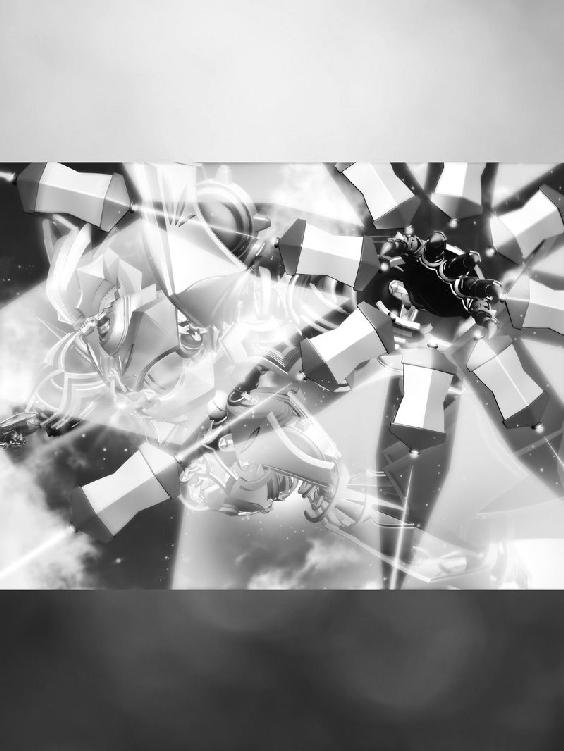
閃光が筋を描いて、ヴィルフォーナの左腕に集まった。
破片となった刀身は円を描き、それは鉄壁の盾となり夜を飲みこむ太陽と化し、黒き波を打ち払う。
亀裂の放った渾身の一撃は、ヴィルフォーナの行く手を一時も阻む事は叶わなかった。
「砕けろ、黒海......っ!!」
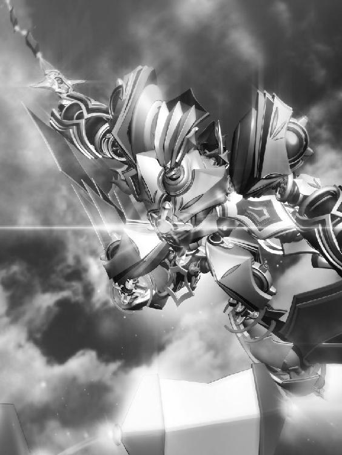
瞬間、光点はヴィルフォーナの右手、メイルレヴァンの柄へと瞬時に集まり、それは無限に伸びる光の刃となって、蠢く亀裂を貫いている。
一瞬の静寂の後、ばぁんと鐘の鳴る様な音を上げて刃が鳴り、それを合図に、砕かれた亀裂は黒水の飛沫を上げて爆散する。
無論、それらが地上に降り注ぐ事は無く、ジンが剣を収めるのと同時、空に溶け込むように消え去るのだった。
「やったぁっ！」
歓声を上げ飛び上がり、ぱちんっと手を合わせるリズベルルとコルネリー。
二人でころころと笑った後、リズベルルは眩しい物を見る様に空を見上げ、コルネリーははっと我に返り顔を赤らめ、けれども俯く事無くリズベルルに続く。
黒海を打ち払った英雄、ヴィルフォーナの勇姿がそこにあり、白銀の騎士は緑色の燐光を優しく空に散らしながらゆっくりと降りて来る所だった。
「天舞う音色、雄々しくも美しいものよ！」
ジャルバンは並び立つノルアードの肩を力強く叩き、一際大きな笑い声を響かせる。
普段ならば苦笑する所だが、ノルアードもその時ばかりはその笑みに続き、するとレイルや騎士達も釣られて笑い出す。
リィガイムを脅かしていた黒海は討たれた。
平和を取り戻した空を皆が感慨深く見上げ、そして地上に降り立つヴィルフォーナに目を細める。
英雄は無事、帰還した。
その夜はヴィルフォーナの騎士の活躍を称え、盛大な宴が開かれた。
まるで黒海が去った事を象徴するかのように広場には煌々と明かりが灯され、その喧騒は街の至る所まで広がって何とも賑やかだ。
避難していた住人達が続々と戻って来たかと思えば、その喧騒に気付き最初は顔を顰め、それが英雄の為の宴会だと判ると皆嬉々として騒ぎに混じる。
料理に酒、歌に踊りが惜しげも無く振舞われ、その日リィガイムの街に夜は訪れなかった。
「迫りくる黒海に怯みもせず、むしろ飲み込まんばかりの勢いで突き進む様は正に竜の如し！ わっはっは、ジン君、君は何とも勇敢な男だ！」
「本当、凄いのねジン。私、惚れ惚れしちゃったわ」
街中に響かん程のジャルバンの声と、レイルの甘い声に、ジンは頭をかきながら苦笑して、満更でも無さそうにちびちびと酒を飲んでいる。
そんなジンにレイルが大げさな仕草でしなだりかかれば、周りからは冷やかしの声が上がり、ジンは笑みを溢しながらもふと冷静になって、むしろ肝を冷やした。
と、そんなジンに少し離れた場所から熱っぽい視線を送るのはコルネリー。
口当たりの良い果実酒をまるで水の様にこくこくと飲んでは注ぎ飲んでは注ぎ、時折はぁ......と溜息なんか吐いたりして。
「わ、コルネリーはお酒強いんですね～」
と、そんな彼女の肩を叩く何だかとろんとした表情のリズベルル。
ほんのり赤く染まったその頬に手を当てて、コルネリーは首を傾げて。
「リズベルル、何だか顔が熱いわ」
「ふぇ～、そんなことないよ～」
ふらふらと膝を折り、コルネリーの隣に腰を下ろすリズベルルは、ころころと笑いながら両手で挟んだグラスの中身を危なっかしく舐める。
もしかして、とコルネリーがグラスに顔を近づければ、仄かに香るアルコールの匂い。
「まぁ、酔ってるのね、リズベルル」
「はえ、ジュースだよ～」
「......ま、ジュースみたいなものよね」
こんな日ですもの、少しくらい羽目を外しても罰は当たらないわ。そう頷いて、コルネリーは新しいボトルの栓を抜いた。
口の中に広がる甘く切ない香りにうっとりと眼を細め、その視線はジンへと注がれる......。
「コルネリーは、ジンが好きなんれしょ～」
「え!? す、好きって言うか......」
ころころと笑みを上げるリズベルルに核心を衝かれて、コルネリーはもう少しでグラスを取り落とす所だった。
ちゃぷんと鳴って波紋を広げるグラスに目を落とし、おずおずと頷く。
「......そう、なの......でも判らないわ。だって、まともにお話した事も無いのに......これは恋なのかしら、ただの憧れなのかしら......」
「こいっ！」
その言葉にリズベルルはひぇ～と目を丸くして、それからぎゅっと何かを抱きしめる様な仕草でまるまると、くすくすと笑みを溢す。
「ジン、もてもて～」
「そ、そうなの？」
はっとしてコルネリーが尋ねれば、リズベルルは顎に指を当てこてっと首を折り考える。
はらはらしながらリズベルルの言葉を待つコルネリーは、その間ぐるぐると頭を悩ませた。
ヴィルフォーナの騎士、黒き魔人、あんな素敵な男の人を、他の方が好きにならない筈ないわ。
もしかしたら、もう好き合っている女性が居るのかも、そう思えばコルネリーの頬はますます熱くなる。
「うーんと、ユフィでしょ～、ネムリーは～......あぇ？ あれはイタズラな冗談だったっけ？ 今だってレイルさんべたべたしてー、や、あの人は男だった......トゥールウ祭の時もお菓子たーくさん貰ってたし！」
「やっぱり、もうお付き合いしている方が......？」
「さぁ～、それはどうでございましょー？ ジンはあんまりそう言う事、考えて無さそうだし......あ、でもでも昔に好きな人がいたって言ってたー」
その言葉は、コルネリーの胸をどきりと弾ませる。
昔、好きだった方......それはつまり、逆を言えば今はそう言う関係では無いと言う事を示唆してはいまいか？
グラスを持つ手が震え、コルネリーの目にはジンしか映らなくなる。あの夜闇の様な黒い髪......何と美しい色なのかしら。
「ふぇー、コルネリー、私の話も聞いてよ～」
「へ!? え、ええ......っ」
「私はね～、ノルアードが好きなの！ 恋してるんだ～」
「へ!?」
何の臆面も無く言ってのけるリズベルルに、コルネリーは驚いて。
リズベルルはころころと笑いながら、夢を見る様な口調で続けるのだった。
「むかーしから、ずっと好きなんだよ～。あぇ？ むかーしは嫌いだったんだ！ でも好きなの～。かじかじしたいっ！」
「か、かじかじ？」
「うん。最近そうなの。私、皆が知らないノルアードの事いっぱいたくさん知ってるし、そう言う所、ゆうえつかん。とくべつなかんけー。しあわせなんだよ？」
とろけきった顔で言うリズベルルに、コルネリーは何だか自分まで幸せな気持ちになって、その小さな騎士の髪をそっと撫でる。
リズベルルはふふっと笑みを溢し。
「だから～、コルネリーもジンともっといっぱいお話ししよー！ そうすれば、ジンもコルネリーを好きになるかも～」
「......そう、そうね......」
呟いてからふっとその言葉の意味を深く心で受け止めて、コルネリーはグラスの中身をごくごくと飲み干すと、意を決して立ち上がる。
父や騎士達に囲まれて何やらお喋りしているジンを見つめ、顔を真っ赤にしながらも頷いて。
「がんばってがんばってがんばってね～」
ふわふわとしたリズベルルの応援に背中を押され、コルネリーは想い人の元に歩むのだった。
「やー、賑やかなのは良いがこういう場はくたびれるなぁ」
強敵ジャルバンをジンに任せ、自分は静かな所でのんびりと......と思ったら今度はリィガイムの人々に囲まれ散々料理を食わされ話に付き合い、すっかりくたくたになったノルアードは、ちょこんと地面に座っているリズベルルを見つけて傍による。
彼女もまた、この街を救った功労者である事は未だ多くの人々には伏せられている。
それはリズベルル自身を守る為でもあったが、だからこそ、ノルアードは自身が彼女を労ってやらねばならないと強く思うものだった。
強張った肩をぐるぐる回して解しながら近寄って、何をしているのかと覗き込めば、リズベルルは丸まった野良猫を撫でている所で、気持ち良さそうな顔をしていた猫はこちらに気付いて顔を上げ、ぱっと走り去ってしまい、驚かせたかと頬をかくノルアードである。
リズベルルはびっくりして猫の消えた方を見て固まっていたが、何だか緩慢な動作でくたーっと振り向いて、ノルアードの姿を見つめるとそれこそ猫みたいな声でにゃうにゃうと笑った。
何だか妙だぞ、と思えばリズベルルはグラスを持ち上げてその中の液体をちろちろと舐め、またまた笑い出すので合点がいく。
「酒を飲んでしまったのか、リズ」
「のんでないですよ～、よってないですよ～」
やれやれ、と苦笑しながらノルアードも近くのテーブルからグラスを取って酒を注ぎ、とろんとした顔で視線を向けて来るリズベルルの隣に腰を下ろす。
やっと人心地ついたと言う風に息を吐けば、リズベルルがふんにゃりと頭を預けて来るので、ノルアードはぎくりとする。
視線を下ろせば、すぐ間近にリズベルルのとろける様な笑みがあって。
「ノルアード～、コルネリーと結婚出来なくて残念だったね～」
「む、むむ......私はぁ～、そんなつもりは無かったぞ、初めからな！」
「へへー？ どうだか～」
良い感じかと思えばまたその話か、とノルアードが若干気を落としてグラスに唇を付ければ、リズベルルはくすくすと笑む。
「美人だし～、髪長くてふわふわだし～、残念だったねぇ～」
「リズベルルよ......人を好きになると言うのは、そう言う事では無いのだ」
「ほぉ？」
「美人だとかスタイルが良いだとかで好きになると言う事もあるだろう。だが、好きと言う感情は時間が経てば醒めてしまうもの......それだけの相手と一生を添い遂げる事が出来るだろうか、と思えば難しい」
「ほんとの好きはさめないのっ！」
「いやあ、判らんぞ」
「だったら～、ノルアード様はどう言う人が良いんですかっ！ どういう人と結婚したいワケ!?」
「尊敬できる相手、だろうな......」
「はわー」
真面目に語ってから、何だかノルアードは急に恥ずかしくなって、黙ってグラスの中身に口を付ける。
リズベルルも急に静かになって、本人はジュースだと信じている液体でごくごくと喉を鳴らし、その度にみるみる顔を赤らめて行く。
暫く二人で黙ってそうして居れば、急にお互い相手の体の熱を意識し出し、ますます声が出無くなった。
何か話題は無かったか......等とノルアードが視線を彷徨わせていると、ぽつりと呟くリズベルル。
その声は喧騒の中で消え入りそうに揺れ、ノルアードの耳を擽った。
「私、ノルアードの事、尊敬してるけど......ね」
どくんと胸が高鳴って、ノルアードの視界は眩い光を見つめた時の様にかっと白む。
縺れそうになる舌を懸命に動かして、ノルアードは言うのだった。
「......わ、私も......リズベルルの事を......尊敬、している......！」
意を決してそう言えば、胸がぐっと燃え上がる様に痛み、かと思えばすうっと楽になって、乱れる呼吸を整えながらノルアードが返事を待てば、待てど暮らせど返って来るものは無く......。
恐る恐る視線を向ければ、ノルアードに寄りかかって穏かに息を立てるリズベルルの可愛らしい寝顔がすぐ傍にあって......。
がっくりと肩を落としつつも、まぁ、これはこれで良いか、と笑うノルアードであった。
翌朝、何時に無くすっきりとした気持ちで目覚めたリズベルルは、ベッドの上でうんと伸びをして、あれ？ と首を傾げる。
服、昨日のまま寝ちゃってた......？ と不思議に思えば甦るのはヴィルフォーナの勇姿。
そうだ、ジンが無事にリィガイムの黒海を断って、昨日はそのお祝いだったんだ！
「すっかり盛り上がって、疲れてそのまま眠っちゃったんだ、私......」
いけないいけない、コルネリーにお願いしてお風呂使わせて貰わなきゃ！
等と思ってベッドを下りれば、次々と甦る昨晩の記憶......。
「う」
私はね～、ノルアードが好きなの！ 恋してるんだ～。
むかーしから、ずっと好きなんだよ～。
かじかじしたいっ！
私、ノルアードの事、尊敬してるけど......ね......。
「う、ぉぉぉ......」
頭を押さえ、再びベッドに突っ伏しながら、リズベルルは呻きに呻く。
「あぁぁぁぁぁぁ......」
あの夢心地の出来事、一体どこからどこまで本当の事だったのか......や、全部でしょ......。
私、なんて事口走っちゃったんだろうっ！
恥ずかしさの余り、ベッドの上で暫くの間もがき続けるリズベルルであった。
「この恩は必ず返すぞ、ノルアード君！」
がっはっは、と笑いながら手を差し出すジャルバンと握手を重ねれば、体ごとぶんぶんと上下に揺さぶられノルアードは渇いた笑みを溢すしかない。
最後の最後まで文字通りの意味で振り回されているなぁと皆そんな二人を見て肩を竦める。
行きと同じく、帰りもレイルに送ってもらう事になっていた。ジンが車に荷物を積んで戻って来ると、顔を赤らめたコルネリーと視線が合う。
もじもじと肩を丸めていたのもほんの束の間、コルネリーは潤んだ目でジンをじっと見つめて、懸命な声で言うのである。
「あの、きっとトゥールウ祭、見に行きますわっ！」
「期待しておいてくれ。そうだ、その時はうちに招待したら良いんじゃないか、リズベルル」
「うん！ 大賛成～!!」
ジンの言葉に、リズベルルははしゃいだ声で飛び上がる。
再会を約束し、別れを惜しむ二人を眺めながら、ジンはふとくすぐったい気持ちになった。
〝うち〟に招待......なんて言葉が自然に出てくるなんて、すっかりあの屋敷は自分にとって帰るべき場所なのだ。
改めてそんな風に思えば、リィガイムを離れるのが名残惜しい気持ちと屋敷が待ち遠しい気持ちとが綯い交ぜになり、帰れる所があるのは良いものだな、と思う。
「うーむ、それでジン君......娘の話なのだが～......」
「え、やぁ......ははは......」
もう少しでジャルバンに捕まりそうになるのを、ジンは冷や汗をかきながら笑いで誤魔化し、それじゃあ、それじゃあ、と適当に頭を下げてさっさと車に避難する。
ジンが逃げ出した事でノルアードも表情を強張らせ、早口で挨拶を述べて後に続くと、レイルとリズベルルも程無くして車に乗り込んだ。
「じゃ、二人とも何だか早く帰りたいって顔してるし、出発しようかしらね」
「ああ......さっさと出してくれ」
「ばいばい、コルネリー！ お祭りにはきっと来てね～っ!!」
窓から顔を出したリズベルルがそう叫んで手を振るのを合図に、車がゆっくりと走り出す。
ほっと息を吐いて、ジンとノルアードはぐったりとシートに身を埋めた。
「全く慌ただしいものだ。もう何日かゆっくりとして行けば良いものを」
遠くなる車にわっはっはと笑い声を投げた後、ジャルバンは唇を持ち上げた表情のまま、真剣な眼差しになってその行く先を見つめる。
同じ様に車を見送っているコルネリーも騎士達も、誰も気づかぬうちに、剣主の隣には黒い影が何処からか湧き出た様にふっと並んでいた。
低く、小さな声に愉快気な色を混ぜながら、ジャルバンは呟いた。
「それで、天舞う音色ヴィルフォーナの力はお前のお眼鏡に適ったのか」
その言葉に、黒い影は黙して語らず......ただ、その仮面の下に隠された瞳で、英雄達の乗った車を見つめるばかりだ。
ジャルバンはふっと息を吐いて。
「どうして彼らの前に姿を現してやらんのだ。何がお前を頑なにさせる」
「......必要な時が来れば、そうしよう。そして、それは近く訪れる......私はむしろ、そうならない事を祈っていたのだ......」
それはどう言う意味だ、とジャルバンが聞き返そうとした時には、もう黒い影......仮面の使者の姿はそこには無く。
代わりに近づいてきたコルネリーが敏感にその気配を感じ、首を傾げて。
「あら、お父様。今どなたか此処にいらしたかしら......？」
「ん？ おお、独り言よ、独り言！」
「そう......そう言えばお父様、腰はもう良いの？」
「うむ！ どうもしこたま飲んだ酒が効いたらしい。ジャルバン・ドレッド、完全復活よお！」
わっはっは、と声を上げる父に、コルネリーは呆れた様な笑みを浮かべ......。
「......今、何か......」
ふとその視界に黒い影を見た気がしたが、目を凝らしてみればそこにはやはり誰も居ない。
気のせいかしらと首を傾げ、コルネリーはまた遠くなって行く車の背に目を向けて、それが見えなくなるまでずっと手を振り続けるのだった。
「これで暫く、またのんびりした生活に逆戻り、か......」
車の中でうーんと窮屈な伸びをして、ジンがぼやけば、何を言うかとノルアード。
「むしろこれからが忙しいのだぞ、ジン！ リィガイムでの活躍で、トゥールウ祭はますます客足が増えるだろうからな！ 例年以上に気合いを入れて挑まねばならん！」
「私、屋台やりたいなぁ。食べ物屋さんのお手伝い～」
「お、やる気だなリズベルル！」
「ふふ、楽しそうね。リズは売り子さんなんかも良いんじゃないかしら。ふりふりの衣装なんか着て」
「おお......それは良い考えだぞレイルっ！」
「わ、なんでノルアードが乗り気......」
早速盛り上がるリズベルルとノルアードに、レイルが笑みを溢せば、ジンもふっと笑い、それから師の事を思い出して、これは扱き使われるぞ、と覚悟する。
トゥールウ祭までの日数を頭の中で数えながら、ジンは不意に胸中に広がって行く奇妙な心地に息を吐く。
それは多分、安心感なのだろう。
己の居場所があり、必要とされる事への安堵。
窓の外を忙しなく流れて行く景色を眺めながら、ジンはシズマの言葉を思い出す。
俯くな、ジン。
この世界を脅かす危機が迫った時、立ち向かう事が出来るのは俺や、お前なのだ。
この世界を救うには、お前の力が必要なのだ。
「ま、そんな時が来たら、是非救いたいもんだな」
尤も、その前にトゥールウ祭を成功させなくては。
何せ今年は祭りのとりを飾る役を仰せつかっているのである。もししくじる様な事があれば、師匠から何を言われるか判らない。
英雄と言うのも色々大変だわな、とジンは笑う。
そして遂にやって来たその日、砦の高台。眼下の街で弾ける賑やかな喧騒を耳に、ジンは弾む心を押さえる様にぎゅっと肩に力を入れる。
じきに合図が来る頃合い。何度も確認した段取りを頭の中でもう一度なぞりながら、ジンはふうっと息を吐き、窮屈そうに傍らに聳える白銀の竜の足に手を触れる。
「いよいよですね、ジンさん！」
「ああ、何だか緊張してきたな」
「私応援してますからっ」
浮足立った顔で張り切るユフィーユに、ジンはこくりと頷いて、応援と言っても俺はただ飛ぶだけだからなぁ、と頬をかく。
トゥールウ祭の最終日。その最後を飾る催しである模型の竜。
今年はその竜と共に、ヴィルフォーナもこのシェラダンの空を並んで飛ぶとあって、またと無いその機会を一目でも拝もうと大勢の人々が街を訪れていた。
祭りの出し物であっても、一年に一度の舞台である。失敗が許されないのは黒海に挑むのと同じで、むしろ亀裂を前にした時とは別の緊張でジンの体は固まっていた。
「合図が来たぞ！」
アルベルの言葉と共に、人々の視線からヴィルフォーナを隠していた布幕の壁が取り払われる。
視界に広がる景色、空。そのむこうに小さく見える竜の模型。
仄かな魔を軌跡に散らしながら、風に乗って飛ぶその姿。
ジンはよし、と頷きヴィルフォーナに乗り込んだ。
嘶けば、返って来る歓声。
「おい、ジン！」
駆け寄って来たバードが叫ぶ。
「大舞台だ！ お前、今度はいなくなるんじゃないぞ！」
その言葉に、ジンはぐっと込み上げるものを堪えて鎧の中でにっと笑み。
「ああ、盛り上げて来る」
そうして空へと舞い上がった時、ジンの緊張はすっかり解けていて。
ヴィルフォーナを通して、体全体に受けるは穏やかな風。
そうして旋回する様に模型へと近づいて、並び、２体の竜で優雅に空を滑る。
海を断ち、天舞う音色、ヴィルフォーナ。
お伽噺の中から現れ、いくつもの街を救ったその勇姿を、街中に披露する様に。
＜リズベルルの魔５ リィガイム篇～想いの行方～・完＞
＜６レアンドル篇につづく＞
奥付
著者/イラスト/企画・制作 ときてっと
2016年10月 kindle版 発行
ほんとうの物語シリーズ 関連作品紹介
「リズベルルの魔６ レアンドル篇～彼方の白影～」
レアンドルの街で父から受け継いだ弦奏鎧工房を営む青年グレンは、剣主アナメア・ディームからの依頼で弦奏鎧を調律する傍ら、飛行型弦奏鎧の建造を進めていた。
手にするコンパスが指し示す空の向こう、待ち受ける神秘との邂逅を夢見て......。
一方ディーム家のお嬢様、ナーギアは空を見つめて物思いに耽るこの幼馴染が気が気で無く―――？
「ほんとうの物語シリーズ・リズベルルの魔」第六巻
物語は遂に佳境へ！
「黄昏の君 ヴォルフィーネ」
世が闇に覆われし時、救世の騎士 深き眠りより目覚める
「ここ」ではない「どこか」、「いま」ではない「いつか」のお話......。
真昼の国と月の国、二つの大国は争うさだめ......。
天の至宝「太陽球」
真昼の国がそれを持てば、世界は昼に。
月の国がそれを持てば、世界は夜に。
そして、真昼の国の王女フィモシーの誕生日......。
突如として真昼の国に攻め込んできた月光王の手によって、世界は闇に包まれる。
一人逃げ延びたフィモシーに、吟遊詩人ヴィルヘムは語る。
月光王を打ち倒し、世界に光を取り戻すには、かつて世を滅びから救った救世の騎士
「黄昏の君」の力を借りるよりほかに方法は無い、と......。
真昼の国を救う為、かくしてフィモシーは救世の騎士 黄昏の君の召喚を決意する。
伝説が今、蘇る......
「ツチノコ探検隊～みゅうがいた夏～」
―僕らの、最後の、ほんとうの夏― 不思議な予感のする夏を特別なものとする為に、セイは幼馴染のツムギ、親友のカイチと共に〝ツチノコ〟の自由研究を開始する。
突然現れた謎の少女みゅう、更には秘密結社の構成員を名乗る不審人物シズマ、ぬいぐるみロボットのダンテスを研究チームに加え、セイ達は不思議を追う。
この夏の出会いが、やがて人類に新たな可能性をもたらす事も知らずに......。
「僕らはその夏、ふしぎと出会った」
未確認生物・宇宙人(?)・秘密結社――最高の自由研究がはじまる。